| 吼える魔竜の捕喰作法 (HJ文庫) | |
| 内堀優一 | |
| (2012) | |

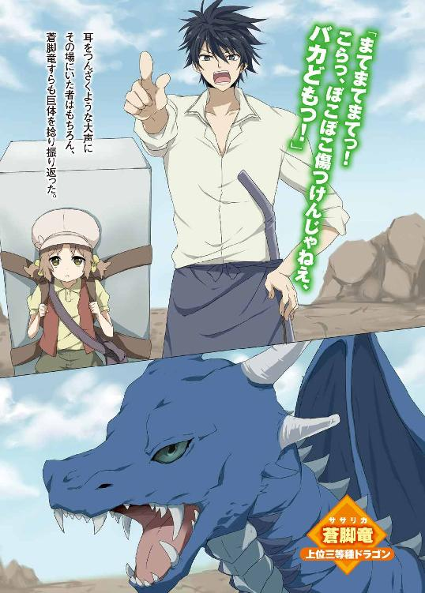
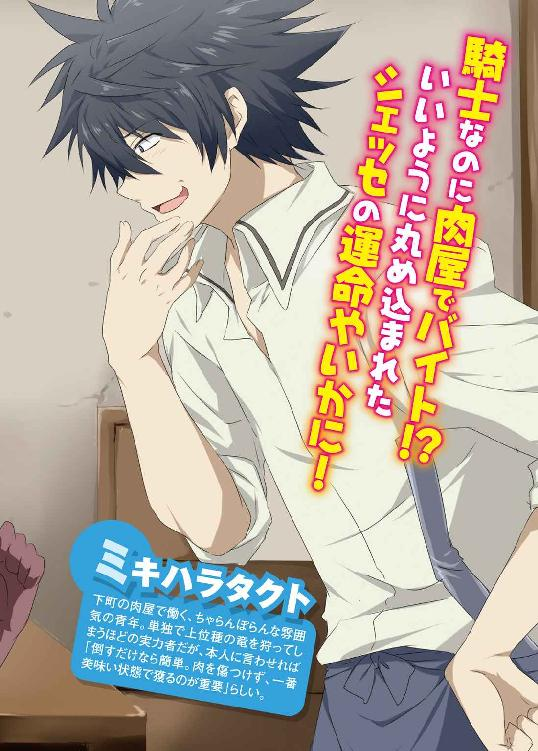
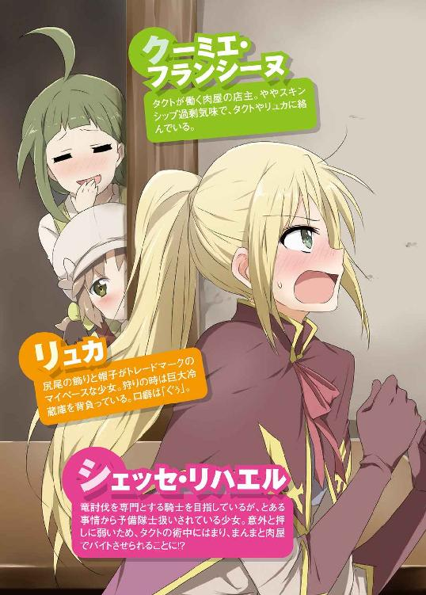
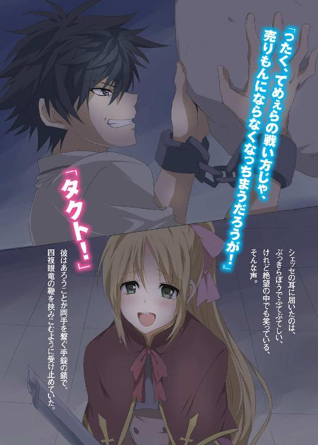
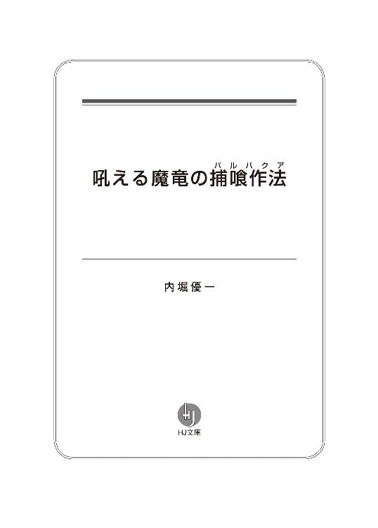
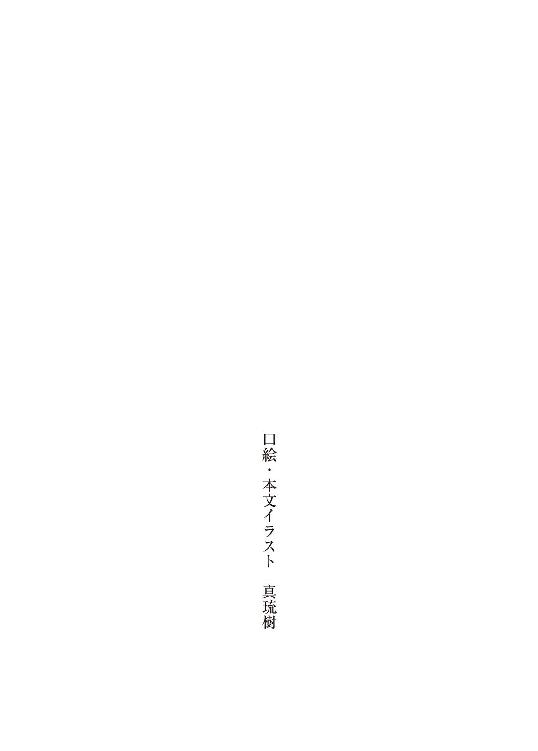
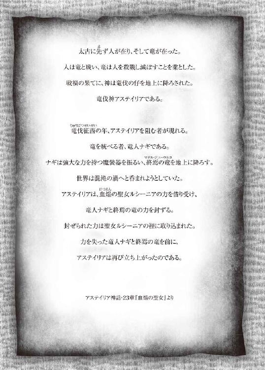
序章 王都最終防衛線
王都セントウッドへ向かい侵攻せんとするドラゴンを前に、緊急編成部隊第一防衛網、補給部隊、第二防衛網が無残に突破されてしまった。
眼前に広がる平原には、そこかしこに累々と倒れ伏す隊士たちの姿。
そしてその後方、最終防衛網に控えていた少女、シェッセ・リハエルは長い金色の髪を一つに結え、華奢にも見える細身の腕に帯剣を構えると上空を見上げた。
迎撃目標であるドラゴン――蒼脚竜は、巨大な翼に風をはらみ悠々と空を旋回している。発達した青白い脚を折り曲げ、蒼穹に弧を描きながら獲物を狙っているようだった。
そこに最終防衛網の遠距離法撃手から指示が飛ぶ。
「蒼脚竜、距離、５００メートル！ 超長距離、練成法撃、構え！ ――撃てぇっ！」
数十人の遠距離法撃手から、魔力を衝撃波に練成した矢が放たれる。
風切音をたて、上空に向かって次々に放たれる魔法の矢の嵐。それを受け、蒼脚竜が首を左右に激しく振りながら、空気を震わせるような咆哮を上げた。
しかし魔法の矢で、蒼脚竜に決定的なダメージを与えることはできない。
あくまで威嚇。
いきり立った蒼脚竜はすぐさま滑空し、大地に降りる手前で一度はばたき衝撃を殺す。嵐のように巻き起こる風と砂塵に、その場にいる者全員が腕で目を覆う。
衝撃を抑えてなお余りある大質量が地につくと同時に、シェッセの足元が激しく振動し、空気は震え頬がピリピリとした。それでもなんとか迎撃目標である相手、蒼脚竜を視認する。
もたげた鎌首を伸ばせば、十数メートルはあろうかという翼竜。翼を納めた形状はまるで巨大なダチョウのようでもある。しかしその身体の最大の特徴は、名前にもある強靭に発達した二本の脚だろう。長い首と細い体に不釣り合いなほどに、その両脚は長大だった。
そんな不均衡な長身を、翼竜は細く伸びる尻尾でバランスを取っている。そしてしきりに高位置にある頭を動かし、群がる隊士たちの出方を窺っているようだった。
臨戦態勢の蒼脚竜を前に、その場にいた者たち全員が剣を構えると、指揮を執る隊士が激語した。
「ここが正念場だ！ 竜伐騎士の到着まで粘れ！ 絶対に王都に侵攻させるな！」
同時に法撃手達が一斉に魔法による練成法撃を放ち、魔力の矢が蒼脚竜目がけて雨の如く降り注ぐ。しかし蒼脚竜が翼を大きくはためかすと、渦巻く風に飲み込まれ、魔力の矢は掻き消えてしまった。
しかし今の練成法撃は囮。その隙をついてシェッセを含む隊士たち数十名が渦巻く突風を避け、蒼脚竜の脇へと躍りでる。足首に狙いを定め一斉攻撃を加えようとしたのだ。
近距離にいたシェッセが、帯剣を引き寄せ切っ先を突きたてんとした――その瞬間、蒼脚竜の足の筋肉が膨張した。さらに蒼脚竜は片足を高々と蹴りあげると、そのまま轟音を立てて叩き降ろす。
ドゥンッ、と鉤爪が大地を抉り、土と小石が爆ぜるように広範囲に飛散した。
シェッセは寸でのところで方向を変え、飛び込むように回避したが、反応の遅れた隊士が幾人も土と小石の餌食になった。
巻き込まれた隊士たちをシェッセは一瞥するも、助けていられるような余裕はない。すぐさま片膝をつきながら体勢を立て直し帯剣を構えなおす。
――王都を守るためにはなんとしても、ここを死守しなければならない！
決意と共に帯剣を突きだし飛び出たシェッセに、蒼脚竜の足爪が鷲掴みにせんと迫る。
高所に位置する蒼脚竜の目はこちらの動きを確実に捉えていたのだろう。
巨木の幹をも掴めそうなその足爪に捉えられれば、シェッセの身体など一瞬で原形をとどめない肉の塊になってしまう。
なんとかギリギリのところで避わすと、勢いあまった蒼脚竜の爪は地面を掴み深く抉りこまれ、僅かに足元を取られてふらつく。
今だ、とばかりにシェッセは両腕に全力を込めて帯剣を振り下ろした。
固いドラゴンの表皮に、どれだけダメージが与えられたかわからない。
それでも、この期を逃すまいとシェッセの腕からは疾風のような連撃が繰り出される。
その様子に周りの隊士たちも続いて蒼脚竜に攻撃を加えて行く。さらに遠方からは敵の視界を塞ぐかのように、竜の頭めがけ練成法撃が次々に打ちこまれた。
練成法撃に視野を奪われ、次々に足首を斬りつけられた蒼脚竜は雄叫びをあげた。
このまま押し切れば......そうシェッセが思った瞬間、
「うあああっ！」
不意に視界の天地が反転した。
なんと蒼脚竜の長く伸びた鞭のような尻尾が、その場にいた者たちを一斉に薙ぎ払ったのだ。地面に叩きつけられたシェッセは、心を奮い立たせ身体を起こそうとする。しかし想像以上に受けたダメージは大きい。シェッセの身体は、己の意に反してその場に崩れ落ちた。
当然いきり立った蒼脚竜の進撃は止まらない。
魔法の矢を撃ちこむ法撃部隊に蒼脚竜は突進していくと、頭突きでもするように長い首を撓らせ突っ込んだ。
土煙を上げて隊士たちが吹き飛ぶ。ある者は直撃を受け、ある者は牙に掛かり、ある者は将棋倒しの下敷きになった。それでもまだ動ける者たちは、剣を構え、果敢に飛び込んでいく。しかし、蒼脚竜の高視界から捉えられた隊士たちは、長い尾と強靭な脚から繰り出される連続攻撃に誰ひとり反撃することができない。
次々にやられていく仲間たちを前に、シェッセは歯を食いしばり帯剣を杖に必死で立ち上がった。
――負けたくない。ボクは.........まだ戦うんだ。
そう強く思った時、突然あらぬ方向から大声があがった。
「まてまてまてっ！ こらっ、ぼこぼこ傷つけんじゃねえ、バカどもっ！」
耳をつんざくような大声にその場にいた者はもちろん、蒼脚竜すらも巨体を捻り振り返る。すると声の方向から鉄パイプを腰に差した青年と、冷蔵庫を背負った少女が走り込んできた。
「ったく、これだから騎士団の連中は......肉が痛んじまうじゃねえか」
ブツブツ呟いていた青年は、蒼脚竜の目の前に立ち塞がると不敵に笑う。
「わりいな。さらっと片付けて、おいしくいただくからよ」
蒼脚竜を仰ぎ見ながら、語りかけるようにそういうと同時――青年の動きが一気に加速した。繰り出される鞭のような尻尾を、青年は縄跳びでもするかのようにジャンプで避わす。その跳躍が高い。ほぼ一息で蒼脚竜の胴腹まで軽々と達した青年は、その拳をドラゴンの脇腹めがけてめり込ませた。
「いい肉付きだ。よく育ってる」
その拳撃によるダメージは大したものではなかったのだろうが、蒼脚竜は苛立ったように咆哮を上げる。そして着地した青年目がけ、直下降で牙をむけた。
しかし青年は全く焦る様子もなく、身体ごと呑まれる直前で半身を捻って回避。すかさずその反動で空気を震わすような後ろ回し蹴りを蒼脚竜の頭めがけて繰り出した。弾かれた蒼脚竜の頭は、長い首を中心に弧を描き、酩酊したように鎌首を左右にフラフラとさせる。
その様子を見上げながら青年は声を上げた。
「リュカ、解体道具！」
「ぐぅ！」
少女は自分よりも大きな冷蔵庫を背負いながら、獣のように四つん這いになると、青年に向かって全力で走りだす。急加速しながら青年の下に息も吐かさぬ間で到着すると、彼女は青年の前で冷蔵庫を開け、そして青年がすぐさま、その中に手を突っ込んだ。
「箔羅ぁっ！」
一瞬、青年に電気が走ったかのような衝撃――と同時に冷蔵庫の中から、青年の身長と変わらぬ程の大きさをした片刃の剣が抜き放たれる。刀身は幅広く巨大に見える割に、妙に平たい印象のある剣。青年に握られた柄は真ん中の部分で湾曲し、独特のグリップ感を伴っている。その片刃の剣を抜き打ちざま、威嚇するように一閃。
蒼脚竜は目の前を走り抜ける剣に牽制され、身体を捻りながら体勢を立て直そうとする。その瞬間を待っていたかのように、青年は蒼脚竜の真下へと潜り込むと、剣の峰を相手のアキレス腱の部分に叩きこむ。
バランスを保てなくなった蒼脚竜は崩れる身体を元に戻そうと、翼を開き羽ばたく体勢になった。それを見た青年はニヤリと笑うと、地を蹴り、蒼脚竜の尻尾に手をかけ、曲芸のように回転を加えると、まるで山猿のようにドラゴンの背の上に達した。そして風をはらませ飛びあがらんとする蒼脚竜の翼めがけて斬りつけた。
「だあぁぁぁらあああああ！」
勢いよく斬りつけられた剣は蒼脚竜の片翼を根元から断裂する。青年は返す刀で続けざまにもう一方の翼を斬り落とした。
双翼を断たれ、蒼脚竜は地を揺るがすかのような叫喚を上げ暴れ出す。
その背の上を青年は走り、のたうち回るように無軌道な動きをする蒼脚竜の長い首を駆け、真後ろから頭に向かって剣を一突き。間もなく蒼脚竜の動きがピタリと止まった。そしてそのまま、ゆっくりと竜はその場に崩れ落ちていく。
あれほどの猛威を奮った蒼脚竜が、土煙を上げながら沈黙し大地に没した。
青年はすぐさま手際よく蒼脚竜を適度な大きさに解体し始める。すると、冷蔵庫を背負った少女がちょこちょこと歩み寄ってきて、切り出された肉塊をポイポイ冷蔵庫の中に放り込んでいく。明らかに納まりきるはずのない質量だが、肉塊は吸い込まれるようにして冷蔵庫へと収納されてしまった。
一通り作業が終わったのか、青年は手をパンパンと払い、額の汗をぬぐう。
そしてこれで終わりだとばかりに、片刃の剣も冷蔵庫に投げ込んだ。それを見届けた少女が冷蔵庫の蓋を閉めて背中に担ぐ。そして二人はシェッセ達には目もくれず、そそくさと立ち去っていってしまった。
その場に取り残されたシェッセたち――王立魔法騎士団緊急編成部隊の面々は、ただ口をあんぐりと開けて、去っていく青年と少女を見送るしかなかった。誰ひとりとして、動くことも言葉を発することも出来ずに。
それはもちろんシェッセも同じで、ただ目を丸くして立ち尽くすしかなかった。
するとその時、後方から馬の蹄の音が聞こえてきた。ようやく竜伐騎士隊の２名が到着したのだ。彼らの到着にシェッセは我に返り、急いで敬礼をした。
「あ、ごくろうさまです！」
しかし竜伐騎士隊の２名は眉間に皺を寄せ、信じられないものを見たような顔をしている。
「なあ、あれって......」
「――ああ、たぶん例の......」
「おい、まて。あれは竜伐騎士隊の中の逸話だろ」
「逸話じゃない。上層部はもう、あの情報は掴んでるって話だ」
なにかコソコソと話している。
シェッセの位置からは全容が聞き取れなかった。ただ驚きと深刻をない交ぜにした表情の竜伐騎士たちが、あの青年について何か知っているのだろう、ということだけは感じられた。
――彼は、いったい何者なんだろう。
ふとした疑問を浮かべ、シェッセはその場に棒立ちになっていた。
シェッセが彼について知るのは、数日ほど後になってからだった。
第一章 蒼脚竜モモ肉の一口ステーキ（醤油ダレ）
蒼脚竜討伐の任務から、ノルフ王国の王都セントウッドに帰還後、三日ほどしたある日のことである。
シェッセ・リハエルはいつも通り練兵所の掃除、ゴミ捨て、訓練用の帯剣整理と、細々とした用を済ませていた。
国家を守護する王立魔法騎士団の予備隊士、それがシェッセの役職であった。
この役職は、言ってみれば閑職である。正規の隊士ではなく、あくまで予備。なにかあったら、帳尻を合わせるために投入される。が、普段は騎士団内の雑用を仰せつかる、それがシェッセの仕事であった。
誰ひとりそんなシェッセを手伝ってくれる者はいない。正規の隊士が雑用など、とんでもない話だからだ。それでもシェッセは文句一つ言わず、己の仕事に精を出していた。
一区切り付き時間が空いたので、シェッセはこれからの予定を考える。
剣の訓練はもちろん、出来ることなら魔法の鍛錬もしておきたい。
シェッセがそんなことを考えていると、ちょうどそこへ二つ年上の先輩にあたる、クローディアス・フォンブラウンが通りかかった。
「ようリハエル。奇遇だな」
クローディアスは18歳にして、小隊40名の隊長を任ぜられる程の剣と魔法の腕前を持った実力者である。予備隊士であるシェッセに話しかける者はほぼ皆無であったが、このクローディアスだけは、どういうわけか、ことあるごとに現れては、脈絡のない話をして去っていく珍しい人間であった。
「これから何かの練習か？」
「あ......はい。一区切りつきましたので、魔法の鍛錬を。......クローディアスさんは、先日の蒼脚竜の事後処理ですか？」
「ああ、被害報告を纏めているところだ。うちの小隊もかなり被害を受けたからな」
先日の蒼脚竜の襲撃の際、クローディアスの小隊は最前線に置かれていた。竜伐騎士が到着するまでの時間稼ぎを命じられた緊急編成部隊であったが、相手があまりに強敵だったために、クローディアスの部隊もかなりの被害を受けたのだろう。
「初めて上位のドラゴンと戦ったが、あれほど強いとは思わなかった。改めて、あんなドラゴンたちと平気で戦う竜伐騎士という存在に平伏した」
シェッセはクローディアスの口から出た、『竜伐騎士』という言葉に思わず反応してしまった。すると、クローディアスもそんなシェッセの反応に気がついたようで、
「どうしたリハエル？ 竜伐騎士がどうかしたのか？」
「あ、その......」
「なんだ、みずくさいじゃないか。あれか？ 竜伐騎士の事を聞きたいのか？」
「い、いえ、そういうわけじゃないんですが......」
「いいだろう、おまえも新任の騎士なのだから、竜伐騎士隊くらい知っておかねばならないだろう」
このクローディアスという男は、勝手に自分で話を進める癖がある。
シェッセが王立魔法騎士団に入ってからというもの、幾度となくこうして勝手に講義が始められてしまうことがあった。
「いいか、リハエル。竜伐騎士というのは、王立魔法騎士団30万人の中から選ばれた精鋭部隊だ。ドラゴンを倒すことを専門とする最強部隊で、竜伐騎士一人は一個師団に相当すると言われている。それほどの強さを持つ者のみが、その称号を得られる」
自信満々に話すクローディアスの腰を折ることができず、シェッセは口を噤む。
「我がノルフ王国ほどの大国ですら、竜伐騎士の称号を得られた者は現在７人しかいない。それほどに、狭き関門ではある。しかし剣の腕と、魔法の技術がある者なら、誰もが憧れる称号と言ってもいいだろう」
そう言うクローディアス自身が、竜伐騎士隊への入隊を希望していることを、シェッセは知っていた。異例とも言える速さで、小隊の隊長を任されるだけの剣と魔法の技術、そして人を纏め上げる統率力を持った彼である。彼が竜伐騎士隊に憧れを持っても、みな有無を言わさず後押ししてくれるだろう。
――そう言えば......。
ふとシェッセの脳裏に甦る、戦場に現れた青年。彼はいったい何者だったのだろうか？
いともあっさり蒼脚竜を打倒してしまう飛び抜けた戦闘技術。あれは竜伐騎士隊と同等とも言えるほどの強さだった。
「.........おい、リハエル。聞いているか？」
「え、あ、はい！ すいません！」
物思いに耽っていたシェッセは、クローディアスの言葉でようやく我にかえった。
「よし、ではリハエル。そんな竜伐騎士隊を含めた王立魔法騎士団の誇りとはなんだ？」
「はい！ 貧しき者には与え、弱き者は助け.........」
「そのとおりだ！」
――最後まで言わせてくれない。
シェッセはちょっと落ち込むが、口には出さないでおいた。
「無法者から弱者を助け、ドラゴンの脅威から、この国を守る。命を盾とする防衛の要であり、王立魔法騎士団なくしては、国の存続もありえない。つまり王立魔法騎士団は、他の下賤な職業とは一線を画する、誇り高き職業なのである」
垣間見える騎士であることへの自尊心と、他の職種への優位意識。
王族、貴族は別にしても、現在のノルフ領セントウッドに於いて、騎士と平民の間に身分差は存在しない。しかし王立魔法騎士団には、クローディアスのように職業に対する差別意識を持つ者が多い。
彼が言う通り、騎士は時に命を盾とし、儚く死を迎えることもある。そんな彼らのメンタルを保つには、『他よりも優れているのだ』と思うことが、なによりの支えなのだ。
人の心は、皆が皆、強靭なわけではない。見下すこと、差別意識を持つことで保てる心もある。シェッセはそのことをよく理解していた。
なぜなら、シェッセ自身が周りから見下された存在であるからだ。予備隊士というお情けのような閑職に対して、陰から嘲笑や侮蔑の視線を向けられている事を、シェッセは知っていた。ただ見下す側は、そのことによって平静と安定を手に入れている。
その考えを善しとは思わない。だから今のクローディアスの話を聞いている間も、心のどこかを締め付けられているような気持ちになっていた。
それでもシェッセは、その思いを言葉にしない。言葉にすれば要らぬ火種の元となる。自分のような劣等騎士が発言を許される場所ではないのだ。
そんなシェッセの胸の内を知らぬのだろうクローディアスは、そのまま話を続けた。
「いいかリハエル、もしおまえが希望するなら、我が小隊におまえをだな......」
しかしちょうどそこへ、クローディアスの話を遮るように闖入者が現れた。
「シェッセ・リハエル。ここにいたか」
「あ、カティナ様......」
長く黒い髪をなびかせながらシェッセの前に現れたのは、カティナ・イシュルダール。
シェッセが昨年度までいた騎士学校の同窓生である。
切れ長で涼やかな瞳。落ち着いた物腰で、語る言葉には威圧感はなく、しかし隙もない。
「すまないが、至急、王立魔法騎士団庁舎の本部に来て欲しい」
「あ、えっと」
急な申し出にシェッセは何事かと目を白黒させる。逆にカティナの方は落ち着いた様子で、シェッセとクローディアスを交互に見た。
「うん？ 何か取り込み中だったか？」
話の途中であった事には変わりないが、庁舎からの呼び出しとなると話は別だ。
庁舎に徴集されるということは、任務の要請に他ならない。
「いえ、すぐにまいります。クローディアスさん、すみません。話の途中で」
「ああ、別に構わない。構わないさ......」
まだ何か言いたげであったクローディアスを置いて、シェッセはカティナの後に続く。
カティナとは学生時代、面識こそあったものの話をするような間柄ではなかった。
なにしろカティナは近年まれにみる天才と呼ばれており、学生時代から現在に至るまで、彼女を羨望の眼差しで見つめる者は後を絶たない。その大多数が男性ではなく女性というのも、奇妙な点ではある。だが事実、彼女は美しく、凛々しい。シェッセが庁舎内で彼女を見かけた時も、取り巻きの女性が多くいた覚えがある。
そんなカティナは、入団と同時に特殊任務を引きうける内務部に引き抜かれた。それにひきかえ、シェッセは予備隊士という劣等騎士である。接点の生まれようがなかった。
シェッセは彼女の背を追いながら、緊張した面持ちで、おずおずと話しかけた。
「カティナ様、その.........」
「シェッセ。様なんて付けなくていい。同窓生じゃないか」
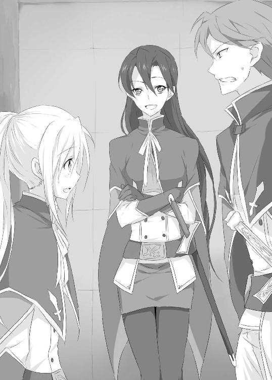
気さくにカティナはそういうが、なかなかそうもいかない。シェッセの所属する騎士団の実働部隊は、仲間意識が強く繋がりを重要視するため、呼び方の距離感は近い。現に二つ上のクローディアスも、階級は上だが、『さん』付けで呼んでいる。
対して内務部、行政部......つまりキャリア組は、同じ騎士団でありながら、全く別の存在なのである。
そしてカティナが所属するのが内務部なのだ。既に彼女はスタートの時点から、幹部候補であり、別世界の人間、天上の人なのである。呼び方も自ずと『様』付けになってしまう。
「まあいい。なんだい？」
「はい、あの、ボクなんかが騎士団から、いったい何の呼び出しなのでしょう？」
「私は内容を聞かされていないが、上の者からシェッセを連れてくるよう言われているんだ。まあ、行けばわかるさ」
「............そう、ですか」
やや困惑するシェッセに、カティナが少し歩を緩め向き直る。
「私はね、以前から君と話してみたかったんだ」
シェッセは少し驚いて聞き返した。
「ボク......ですか？」
「ああ、昨年の条件試合を憶えているだろう」
彼女の言わんとすることに心当たりがあった。シェッセは学生時分に行われた条件試合で、カティナと対戦したことがあったのだ。
「私はあの時、君に負けてしまった。初めてだったんだ、誰かに負けるというのは」
「でも、あれは......制限が設けられていただけですから」
その際に設けられたのは魔法を使ってはならない、という制限だった。そういった状況を考慮に入れた戦法を考えるための学内試合である。
「君も知っているだろう？」
「なんですか？」
「この騎士団内の暗黙の了解。強い者こそが正義、という考え方」
「あ、はい」
多民族国家であり、ドラゴンが多く発生するという土地柄。問題を多く抱えるこの都市に於ける騎士の思想――強い者こそが正義という考え方である。
「甚だバカバカしい野蛮な考えだが、それに照らし合わせれば、シェッセ、君は私より強い」
「...............」
「だから私は君を尊敬している。それでどうだい？」
それでもシェッセは物おじしてしまう。全く自分とは正反対の人間であるカティナ。あの時、条件が魔法禁止でなかったら、軍配は明らかにカティナだったのだ。
「時間があれば私はシェッセともっと話してみたいと思っている。君さえよければだが」
そんな彼女の笑顔は、美しくもあり、また凛々しくもあった。
「はい、カティナ様がよろしければ」
「だから、様はいいよ」
困ったようにカティナは照れ笑いをした。
練兵所から広大な芝と庭木が植えられる庭園をぬけると、巨大な石造りの庁舎の前に出る。
シェッセとカティナがちょうど庁舎入口の階段を上っていた時だった。
ドサッ、という音がして、シェッセはびっくりしながらその方向に目をやった。そこには大きな麻袋がぺたりと落ちていた。
「ああ、すまんね！」
上から降ってくる声に空を仰ぐ。掃除屋らしい男性が何枚もの麻袋を腰に括りつけながら、屋上へ上がろうとしていた。どうやらその一枚を、うっかり落としたらしい。
「気をつけてくれ。人にあたったら危険だ」
カティナが軽く注意すると、男性は笑顔でごまかしながらぺこりと頭を下げた。そして屋根を飾る彫刻を足場に、そそくさと屋上に登っていってしまった。
「なんの掃除屋ですかね？」
「白砂の掃除だろう。この時期は海岸の方から春風に乗って砂が降るからな」
言われてみればもうそんな時期だった。外はずいぶんと暖かいことに今更気がつく。
階段を上りながら入庁し、絨毯の敷かれたエントランスを通り抜け、三階の広い待合室に通される。
しばらくそこで待っていると、一人の隊士がドアから顔を覗かせ、カティナを見つけると安心したように息をついた。
「イシュルダール、探したぞ。第二指令室へ行け。任務だそうだ」
カティナは馴れたように軽く会釈をしてシェッセに向き直った。
「悪いな、そういうことみたいだ。私はちょっと席を外す」
「あ、はい」
カティナはそのまま隊士について行ってしまった。
シェッセは待合室に一人ポツンと残され肩をすくめる。
――ボク......呼ばれたんだよね......。
本当に自分に招集が掛かったのか疑わしくなってしまう。
不安になっていたその時、ドアをノックする音が聞こえ、初老の男性が入ってきた。
「シェッセ・リハエル君だね」
「え、あ、はい」
一見騎士には見えない温和な笑顔。シェッセは彼のことを知っていた。先日の蒼脚竜襲撃の際、部隊を率いて指揮をとっていた、グレン・フォワード中尉であった。
「君を呼んだのは私だ。悪かったね待たせてしまって。さあ、こちらへ」
グレンに促され、その後に続く。彼の個人事務室に通されると、整理中の資料が山積みになっていた。グレンは執務机の脇にある椅子に腰をかけ、徐に話を始めた。
「さて、君も知っての通り、我らがノルフ王国は、近隣諸国との交易によって栄える港市国家であり、主権国家でもある。それ故、異国からやってくる多種の民族の宗教的衝突の阻止、密貿易の取り締まりなどが王立魔法騎士団の主だった仕事である」
「はい」
「しかし我々の一番の義務は、ドラゴンの脅威から、この王都セントウッドに住まう７００万の市民を守ることだ」
グレンはゆっくりと立ち上がり、壁に掛けられたノルフ王国全域の地図の前に立つ。
「このノルフ王国は広大な平原と海原を有する。それ故に王都セントウッドは交易都市として発展したが、その反面でこの地形はドラゴンの発生率を非常に高くするという現象を生んでいる。有史以来、ドラゴンと人間の戦いは数え切れぬほど続いてきた。捕食のためではなく殺戮目的だけにドラゴンは人間を凶害する。なあリハエル君。何故だと思う？」
「ドラゴンの生態に関する研究では、防衛本能説、狩猟補助本能説、異界湧出説と幾つかありますが、その本当の理由は解明されていないと聞き及んでおります」
「うん、よく勉強しているな。その通りだ」
「いえ、とんでもないです」
「たとえ生物学的に解明されていないとはいえ、ドラゴンが人を襲うことには変わりない。故にドラゴンからの都市防衛は、我々王立魔法騎士団の最重要任務である。そこでだ......」
再びグレンは椅子に腰をおろすと、シェッセの目を見た。
「リハエル君は、先日蒼脚竜を倒したあの青年を知っているかね？」
「......あ......いえ」
シェッセが首を横に振りながら答えると、グレンは一息ついて腕を組んだ。
「実は騎士団上層部は、既に彼の情報を掴んでいてね......彼はミキハラタクトという下町の肉屋なんだ」
グレンの言葉の意味を瞬時に理解できず、シェッセは瞼を瞬かせた。
「......あの......えっと......肉屋ですか？」
「ああ、そうだ。下町サウスクインティアにあるフランシーヌという肉屋で雇われている」
あれほどの戦闘技術を持つ者が、下町に住む一介の肉屋であるということに、シェッセは絶句してしまった。
「君も見ていたからわかるだろうが、上位種ドラゴンである蒼脚竜をいとも簡単に倒せるだけの技量を持った逸材だ。君はもちろん、ドラゴンのランクは知っているね？」
「はい。ドラゴンは危険値で上位特級種、上位三種、下位四種の８段階に分けられます」
国際条約によって定められた、ドラゴン討伐概要に記されるランク分けである。下位種ドラゴンは王立魔法騎士団でも、人数や戦術をうまく駆使すればなんとかなる。しかし上位種となると、精鋭部隊である竜伐騎士でなければ到底太刀打ちできないのである。
グレンは頷き返すと話を続けた。
「あのミキハラタクトという青年は、上位三等種である蒼脚竜を単騎で倒してしまった。それほどに彼は強い」
「じゃあ、もし王立魔法騎士団に入ってもらえたら、とても心強いですね」
「ははは、まあそうだな。もちろん騎士団上層部は、以前から彼を引き入れたいと目を付けていたのだが......まあ、彼は取り合ってはくれない......」
「何故ですか？」
「目的の違い......というべきかな」
グレンは少し言葉を濁しながら、説明しづらそうに苦笑いをする。シェッセにはそれが妙に引っかかったのだが、彼はこちらが口を挟む余地を与えず、話を先に進めてしまった。
「まあそんな話はいい。本題はここからだ......」
グレンは懐から、親指ほどの大きさの赤い石のような物を取り出してシェッセに見せた。
「君はこれを知っているかい？」
「あ......いえ。申し訳ありません」
「いや、知らなくて当然さ。これはね、竜仙華と呼ばれるドラゴンの体内にある物質なんだ」
そういうと竜仙華と呼ばれた石を、再び懐にしまい込む。
「.........さて、ここからは機密事項になるため、君が騎士の誇りにかけてこの事実を口外しないことを誓えるのなら、これについて君に話すことができる」
「勿論、口外しないと誓えます。騎士の誇りにかけて」
シェッセがそう言うと、グレンは相好を崩して笑い声をもらした。
「緊張しなくていい。うん、さすがは多くの騎士を輩出するリハエル家の者だ。誇りは立派にあると見える」
その物言いが、シェッセの心にチクリと針を立てる。それでも内心を晒さぬように、口を固く結び、平静な顔を装った。
「この竜仙華はね、『竜神信仰』と密接に関わりがある。先ほども言った通り王都セントウッドは多種の民族によって形成されている。民族が多くなれば信仰や宗教の数は自ずと増える。セントウッドはそういった状況に寛容な態度で、宗教の自由を認めてきた。ただ一つの例外を除いてね」
「――それが、『竜神信仰』ですね？」
「ああ、その通りだ。彼らは人を襲い殺戮するドラゴンを、神と崇めている。ただ崇めるだけであったのならセントウッドも、もう少し寛容な態度を示すことができたのかもしれない。しかし彼らはある禁呪法を使うのだ――時に君は『魔竜召喚』という魔法を知っているね？」
「はい、竜神信仰が使う、ドラゴンをその場に召喚する転移魔法だと」
「そうだ。竜神信仰はドラゴンを呼びよせる。人を罪深き存在とし、その罪を濯ぐものこそドラゴンである、と考えている。それ故、彼らはドラゴンを召喚しその場を浄化しようとする。その『魔竜召喚』に、この竜仙華が使われているらしいのだ」
それはシェッセにとっても初めて聞くことであった。勿論、禁忌の竜神信仰については極秘に扱われるケースが多いため、多くの情報は表に出てこないのだが......。
「どういった術式、呪文を用いた魔法なのかはわかっていない。とはいえ、この竜仙華が野放しになっていれば、いずれ竜神信仰が目を付け、奪いに来るだろう。しかしだ。そのドラゴンを先日、かの青年は一人で倒し、持ち去ってしまった。当然竜仙華も一緒にだ」
シェッセにもようやく話の内容が見えてきた。
「本来的にドラゴンは死亡後に、その肉体は岩のように固くなってしまう。君も知っての通り倒したドラゴンは焼却処分される。焼却後に、骨と一緒に残るのが、この竜仙華だ。もし彼が、同じように......あるいは別の方法を用いてドラゴンの中から竜仙華を取り出していたら、それはたいへん危険なことである」
グレンはゆっくりとシェッセに向き直った。
「そこで、君の任務というのは他でもない。ミキハラタクトに接触し、竜神信仰の手に渡る前に、蒼脚竜の竜仙華を手に入れてほしいのだよ」
グレンは声を潜め、僅かに口を重くする。
「言うまでもなく竜仙華回収は極秘任務だ。全てを水面下で穏便に進めねばならない。竜神信仰などに知られれば命を狙われかねないからな。君はそのことを充分に注意し動くよう」
「はい.........あの、ところで......」
「なんだね？」
シェッセは聞いていいものか迷ったが、思い切って聞いてみることにした。
「あの......どうして自分なんかが、このような重要な任務に選ばれたのでしょうか？」
「なんだ、そんなことを気にしていたのか？ いいかい、今回の任務は相手に警戒されない人物が好ましいのだ。であれば君のスキルの問題は大きな障害にはならない。それにあのリハエル家の人間であるなら、充分に信用に足ると判断したのだ」
「そ、そうなんですか......ありがとうございます！」
そう言いながらもシェッセの中には、今ひとつ腑に落ちないような疑問が残った。
自分以外にだって適任の騎士はいくらでもいたはずなのだ。その中で偶然自分に白羽の矢が立ったのかというと、ちょっと違うような気もするのだ。
しかし疑問が発言になる間もなく、グレンが話を纏めるように椅子に座った。
「もちろん任務成功の暁には、君にもそれなりの褒美を取らせよう」
その言葉にシェッセの眼の色が変わった。どうやらグレンもそれに気がついたようである。
「ん？ なにか望みでもあるのか？」
シェッセは少し緊張しながら答えた。
「はい！ あのですね......今回のような大規模な対ドラゴン殲滅作戦の際に、またボクを前線に置いていただけないでしょうか？」
「さて、なんでまたそんな危険な事を？」
不思議そうな顔をするグレン。
しかしシェッセは、その理由を口に出すことはできなかった。
――言えない......自分が竜伐騎士になりたいなんて。
それはある意味で当然のことだった。閑職で雑用に明け暮れるシェッセが、騎士団30万の頂点に位置する精鋭部隊の竜伐騎士になりたいなどと言えば、いい笑いぐさである。
なにも言わないシェッセに、グレンは息を吐きながら幾度か頷いた。
「まあいい。検討しておこう」
「あ、ありがとうございます！」
「では任務についてくれ。期限は三週間、もしそれまでに進捗が見られなければ、私に報告するように。できれば急いでもらえるに越したことはない。ドラゴン討伐には一刻の猶予もないと思い、任務に掛かってもらえれば幸いだ」
「かしこまりました！」
初めての任務に、期待と不安を胸にしながら事務室を後にしてエントランスまでやってくると、ちょうどカティナと出くわした。
「シェッセ、悪かったな。ちょっと任務を言いつけられていた」
「そうだったんですか」
自分も任務を言いつけられたばかりで、思わずそれを口にしそうになったが、寸でのところで飲み込んだ。これは極秘任務なのだ。
どうにか話を逸らそうとカティナに話を振ることにした。
「どんな任務なんですか？」
「うん？ ......まあ......極秘任務だ」
歯切れが悪そうにカティナはそう言うと眼をそらせてしまう。何かと秘密体質なのは、カティナの部署なら容易に想像がつく。それ以上聞くのは野暮であるし、なにより彼女を困らせることになる。しかしそのせいで、どうもお互い無言になってしまった。
日が明けて朝食をとると、シェッセはすぐに家を出た。
――この任務を達成すれば、竜伐騎士に少しでも近づける。
自分の夢である竜伐騎士に思いを馳せ、意気揚々とするシェッセの足取りは軽い。
目的は下町サウスクインティアの肉屋である。
リハエル家を含めた高位騎士や貴族の屋敷が立ち並ぶ住宅街リンドから、レンガ造りの坂道を下っていくと、一際大きな建物が見えてくる。リンド中央駅である。
魔力を動力源とした機関車がこの国の中を周回しながら、人や物資を運んでいるのである。
シェッセが周回切符を買い求め、改札を抜け機関車に飛び乗ると、それを待っていたかのように機関車はノロノロと発車した。汽笛を鳴らしながら機関車は、セントウッド通りと呼ばれる街の中心の大通りへと出ていく。
そこはこの王都で最も大きな通りで、貿易都市ならではの高級な異国商店が立ち並ぶ。機関車の横を荷運びの人力車やら貴族の馬車が往来している。
この通りを更に行くと今度は露店の数が急に増えてくる。
これもまた異国からの輸入品を売り歩く者たちだが、先ほどの商店を構えるような部類のものではなく、安い雑貨や乾物、食料品、衣類、その他なんの用途があるのかよくわからない物まで様々な物が売られている。
そのうち最も多いのが、屋台系のファーストフードの店である。
ある屋台からは肉を焼く香ばしい香りがしてくるし、ある屋台からは長時間煮込んだスープの香りがしてくる。
鼻を突く香りに、シェッセは思わず唾を飲み込むが、
「はっ！ ダメダメ、任務の途中なんだから」
と自分を律し、緩やかな速度で走る機関車から飛び降りる。ちょうどサウスクインティアへ続く通りが見えてきたからだ。通りに入り、そこからしばらく歩き続けると、庶民的な街並みがシェッセの目に飛び込んでくる。そうこうするうちに下町の商店街に出た。
果物を売る露店や、調味料の専門店、日用雑貨屋、金物屋、衣料店......数々の店が立ち並び、行きかう多くの人々は活気にあふれている。その中に目的の肉屋フランシーヌがあった。
シェッセは思いのほかあっさりと見つかった目的地に、ややドキドキとしながらも店の扉を開いた。
「申し訳ない。ボクはシェッセ・リハエルというものだが......」
「いらっしゃいませ」
シェッセを出迎えたのは、あのドラゴンをあっさりと倒した青年ではなかった。柔らかなウェーブのかかった髪を一つに編み上げた、エプロン姿が似合う笑顔の眩しい少女だった。歳の頃で言えばシェッセよりも少し歳下くらいで14、５と言ったところだろうか。
あの時、青年と一緒にいた冷蔵庫を背負った少女でもない。シェッセは、ここが本当に目的の店なのか訝りながら店内を見回す。
「なにかお探しですか？ 言っていただければある程度の物は揃っておりますので、奥の方からも出せますよ」
「......う、うん」
やや押され気味のシェッセはどう聞いたものかと頭を捻ったが、結局ストレートに聞いてみることにした。
「その......ここにミキハラタクトという人がいると聞いてきたんだけど」
「タクトさんですか？ ......そろそろ配達が終わって家に帰ってきてるはずですが」
マイペースな口調の彼女は、のほほんとした様子でにこにこと笑っている。
「ぜひ......ぜひ、紹介して欲しい！」
はやる心を抑えながらも、シェッセは彼女に迫るように懇願した。
この肉屋で売り子をしている少女は、クーミェ・フランシーヌと名乗った。店の名前がフランシーヌ、と言うからには彼女はこの店の娘なのだな、とシェッセは思った。が、話を聞くと、どうやら若いながらも店主をしているそうだ。
そんな自己紹介を聞きながら、シェッセは先ほどからクーミェの行動に目を奪われていた。なにしろ彼女は大きな正方形の鉄の箱に、生の肉を丁寧に敷き詰めているのだ。
「そ、その肉を詰め込んでいる箱はなに？」
「え？ ああ、これですか？ お弁当です」
「おべ.........」
どう見てもお弁当には見えなかった。鉄の箱がいかつすぎるし、その中に納まる肉の量も尋常ではない。お弁当というよりは、何かの呪術にでも使われそうな物体だった。
「それを、そのタクトという人の下に持っていくの？」
「はい。タクトさんにお弁当を作るのが、私の仕事......いえ、ライフワークなので」
笑顔の素敵なクーミェが、作業中の鉄の肉箱......もとい、お弁当を掲げてみせる。
何かすごく不釣り合いであった。
そんな肉箱作りを見学しながら、シェッセはクーミェから、ミキハラタクトについての情報を少し聞きだすことができた。
ミキハラタクトはフランシーヌの従業員として、ずいぶん長く働いているらしい。いつ頃から働いているのかは聞けなかったが、クーミェが幼いころからだと言うので、かなりのものだろう。
それからミキハラは名前ではなく苗字らしい。
違う文化圏の人間なのだろう。こういった交易都市に於いては珍しいことではない。
彼は普段、このフランシーヌで精肉の配達などをやっているということだ。
そうこうするうちに完成した肉箱を持ったクーミェが、ミキハラタクトの家に向かうと言うので、シェッセもその後について店を出る。
ミキハラタクトの家までどれくらいあるのかと思ってみれば、なんと肉屋の裏手にある一軒家であった。
「ふふふ、ここも私の家の持ち物なんですけど、今はタクトさんに貸してるんです」
「そうなんだ」
「賃貸収入です。ガツッ、ガッ......カリッ、ともぎ取ってます」
「.........そう......なんだ」
クーミェの表現技法の掴みどころに困るシェッセであった。そんな話をしているうちに彼が住むという一軒家の前に到着し、クーミェは扉をノックする。するとすぐに中から物音がして、誰かが戸口に近づいてきた。
「タクトさーん。ごはんですよ～」
呼び声に反応して、ギィっと僅かにドアが開くと、帽子を被った女の子が顔を出した。
「............ぐぅ」
顔半分でこちらを覗いている。あの戦場でミキハラタクトと共にいた冷蔵庫の少女だった。歳の頃で言えば１１、２歳くらいだろう。あの時シェッセが抱いた印象よりも幼く見えた。クーミェの来訪に、これといった反応を示すことも無く、その少女はドアを開いた。
「あらら、リュカちゃん。今日も可愛いですねえ。食べちゃっていいですか？ わたしリュカちゃんをいろんな意味で食べちゃってもいいですか？」
「......だめ」
クーミェは頬を染めながら、リュカと呼んだ女の子の頭をなでた。途端にリュカは少しくすぐったそうにする。同時にリュカのお尻の後ろで何かが揺れるのが目に入った。
「え？ しっぽ？」
たしかにシェッセには、リュカのお尻の後ろで揺れる、しっぽが見えた。リュカはシェッセの言葉にハッとすると、ややうろたえながら、
「しっぽ......じゃない......かざり」
とボソボソ呟く。クーミェの方はそんなこと気にする素振りもみせない。相変わらずリュカの頭を、こねくり回すように撫でている。
「ぼうし、だめ―――くーみぇ、いやー」
言葉ほどリュカの表情は嫌そうではない。しかし彼女はクーミェの手を掻い潜ると、そのまま家の奥へと走り去って行ってしまった。
――飾りのしっぽ......なんだ。よくできてるなあ......。
下町のファッションなのかどうかシェッセには判断が付けられない。ただリュカのお尻で揺れるしっぽの飾りが、やけに目に焼きついた。
「あ、あのクーミェさん」
「クーミェでいいですよ」
「じゃあ、クーミェ。今の子は？」
「リュカちゃんです！ 可愛いんです！」
力説されたが説明にはなっていなかった。それ以上聞いても仕方ないと踏んだシェッセは口を噤んで、家の中に入って行くクーミェの後に続く。
何はともあれ、あの時ドラゴンを倒した青年と一緒にいた少女に出会えた。
となれば目的の人物が、ここにいるという確信が持ててくる。
陽光の下から薄暗い室内に入ると、目が慣れるのに少々時間を要した。
室内は板張りの床に石を積み上げて造られた壁。どこにでもある一般庶民の家であった。
目が慣れてくると、広いリビングのテーブルで、湾曲したナイフを研いでいる二十歳前後と思しき青年と目があった。戦場で見たあの青年、ミキハラタクトである。
「タクトさん、お弁当ですよ」
ミキハラタクトは研いでいたナイフを布で拭って、丁寧にその場に置くと腰を上げた。
「おう、肉箱か」
――あ、やっぱり肉箱なんだ。
シェッセは内心そんなことを思いながらも、ミキハラタクトの様子に目を見張った。
なにしろ印象が全く違っていたのだ。弛緩しきった表情、隙だらけの姿勢、眠たげな目。とてもドラゴンを倒せるような気迫は感じられなかった。
――......彼が、ドラゴンを？
疑問が頭をかすめる。しかし外見上は戦場で見たドラゴンを倒した青年に相違ない。
シェッセは気を取り直して自己紹介をする。
「ボクはシェッセ・リハエルという者です。タクトさんにお願いがあって伺いました」
「あん？」
返答も、空気の抜けた風船のようであった。
いよいよこの人間が本当に探していた人物か疑心暗鬼になる。
「なんだ？ どこの嬢ちゃんだ？」
「王立魔法騎士団の者です」
凛として言うシェッセの言葉に大きく反応したのは、タクトではなくクーミェの方だった。
「お、お、お、王立魔法騎士団が!? タクトさんに用事なのですか！」
コクリと頷きかえすと、クーミェは更に焦った様子で息をのむ。
「事と次第によってはタクトさんを騎士団まで連れていく、そんな感じですよね!?」
「まあ、そういう可能性もあるかもしれないけど......」
「タクトさん！ なんてことしてくれたんですか！」
「な、なんだよクーミェ」
「よりによって犯罪の片棒を担ぐとは......」
どうやらクーミェは、何か勘違いしているようである。
たしかに王立魔法騎士団は、国内に於いて犯罪を取り締まる役目もあずかっている。そこからの出頭要請となると、なにか犯罪に関わることではないか、と疑うのが人の常であった。
事情を先に話しておくべきだったかな、とシェッセが思っていると、ストッパーの外れたクーミェは、顔をくしゃくしゃにしながら両手でタクトの襟首をつかむ。
「いつかやるとは思っていましたが、タクトさん、ついにやっちまったんですね！」
「おい、こらクーミェ、ついにってなんだ!?」
「そりゃあ、タクトさんの周りに女っけがないことは知ってましたよ。キャバクラにでも行かなけりゃ、誰も相手してくれないじゃないですか。でも、若い男子ですものね。溜まるもんもあるでしょうよ。だからって夕方の路上で女性に対して、あらぬものを露出させて楽しむなんて――ひょっと、タクトはん。なんれ抓るんでふか？」
「おまえの口があらぬ方向に行くのを止めるためだ」
「しょ、しょんなことないれす」
「あ、あの、話を続けたいのだけど......」
シェッセは変な方向へ飛んで行ってしまいそうな話に、急いでストップをかける。
「ああ......ちょっと待ってろ。このアホ追いだしてくるから」
「アホってなんですか？ 私ですか？ 私ですね？ そうなんですね？ わかってますとも！ もっと罵ればいいじゃないですか！ いえ、罵って下さい！」
「くっつくな、泣くな、縋りつくな、鼻水を擦りつけるな、とりあえず出てけ」
「いやです！ タクトさんが、『気持ち悪いけど、そんなおまえが必要だ』って言ってくれるまで離しません！」
「おまえ、気持ち悪い自覚があるなら、そこから直せよ」
「いやです。タクトさんのキモ可愛い女、そんなポジションでいいんです。そこんとこよろしく！」
「よろしくしねえよ！」
タクトは、そのままクーミェを外に叩きだしてしまった。
「い、いいの？ あんなぞんざいな扱いして」
「いや、いいんだ。むしろああいう扱いをされることを狙っているところがある」
そうなんだあ、とシェッセはちょっと引いた。
「で？ 話ってなんだ？」
「あ、ええっと......」
気を取り直してシェッセは改めて話を始める。
「先日、蒼脚竜を倒したあなたに、王立魔法騎士団から協力を要請したいのです」
「はあ......」
またしても不抜けた返事。
「...............あの、先日、蒼脚竜を倒したのは、タクトさんなんですよね？」
「ああ」
あっさりと肯定されてしまった。訝しみながらもシェッセはゴホンと咳をして話を戻す。
「協力というのは他でもありません。先日タクトさんが獲った、蒼脚竜の竜仙華を譲っていただきたいのです」
「からふ？ .........ああ、竜仙華か。あんなもん何に使うんだ？」
竜仙華のことをタクトが知っていた点に驚きながらも、シェッセは話が早いと説得に入ることにした。
「あれは禁忌の竜神信仰に関わるもので、王立魔法騎士団で厳重に保管しないといけません。それにもしタクトさんが持っていれば、竜神信仰に狙われる可能性もあります。ですから竜仙華を騎士団に譲ってもらえないでしょうか？」
タクトはしばらく黙ったまま、口先を尖らせて眉間にしわを寄せる。
納得いっていない、ということなのだろうか。
「う～ん、俺は別にやってもいいけど、そいつに聞いてみたらどうだ」
そう言って彼が親指で指した先に、こちらを見つめる人影があった。先ほどの帽子を被った女の子が、部屋の隅から顔半分覗かせてこちらをジッと見ていたのである。
冷蔵庫の少女、リュカである。
「竜仙華なんて食えもしなけりゃ、ダシ取りにも使えないから、俺としては勝手に持ってってくれ、ってとこなんだが、そもそも、それを集めてるのはリュカの方なんだ」
話を振られたリュカは表情を変えず、「ぐぅ」と小さく呟きながらジッとしていた。
どうもこちらを警戒している節がある。
シェッセは席を立ち、脅かさないように彼女の近くに歩み寄った。
「ええっと......ボクはシェッセ――シェッセ・リハエルっていうんだ」
子供に接する機会があまり無かったシェッセは、とりあえず自己紹介をする。するとリュカの方は少し目を泳がせてから、再びこちらに視線を戻した。
「......りゅか」
彼女の名前である。
「ししるくろえ」
苗字だろう。
「ぽこ」
「ん？」
「へでるかでぃおしりおす」
「......うん」
「...............」
彼女はそう言い終えると再び黙ってしまった。
リュカ・シシルクロエ・ポコ・ヘデルカディオシリオス。
ずいぶんと長い名前だ。こういう形式の名前を使う民族をシェッセは知らない。おそらくタクトの件と含めて、セントウッドとは違う文化圏の人間なのだろう。
「じゃ、じゃあリュカって呼んでいい？」
リュカはコクリと頷くが、シェッセから目を離そうとはしない。
なにか臆病な小動物と相対しているような感覚だった。
「その、リュカは蒼脚竜の竜仙華を持っているってほんと？」
またコクリと頷いて、肩かけバッグをガサガサと漁りだす。
すると中から小石のようなものを取り出した。
「これ」
リュカが掲げて見せるのは、間違いなくグレンに見せてもらった竜仙華と同じものだった。
ただ差異があるとすれば、グレンが持っていたものより小ぶりで、色も青白い感じがする。思わぬほど早く目的の品に到達することができたと、シェッセは内心喜んだ。
「それをボクに譲ってくれないかな？ 交換になんでも買ってあげるから！」
しかしリュカは薄く口を開いて息を呑むと、
「.........やー」
と言って踵を返し、そのまま奥の部屋の中へ飛び込む。そしてすぐにドアをバタンと閉めてしまった。取り残されたシェッセは呆然と立ちつくすしかなかった。
そんなシェッセの背に、のんびりとした声がかけられる。
「残念だったな」
タクトである。まるでこうなることが、わかっていたかのような口調だった。
「とまあ、そういう訳だ。残念ながら交渉不成立だ」
「でも......！」
振り向きざまにタクトの目を覗きこみ、シェッセは息を呑んだ。彼が真剣な顔をしていたからである。それまでのらりくらりと、暖簾のような受け答えをしていた彼が急にそんな顔をしたものだから、シェッセは言葉に詰まってしまう。
「......えっと......だから」
「おまえが怖いんだよ、リュカは」
「え？」
タクトの言葉にシェッセは虚をつかれた。
「さっきから、おまえはずっと気張ってて、周りの空気がピリピリしてんだ。リュカはそういうのに勘がいいから、警戒してんだよ」
「............え」
まさかそんな空気を自分が発しているとは思わなかった。もちろん殺気を放っていたわけではない。できる限り優しく接しようともしていた。
「わかってねえみたいだな。おまえ自身が周りを無意識に警戒してるんだよ。心を閉ざしてる人間が笑顔で近寄ってくるんだぞ。その上、なんでも買ってあげるから、それ頂戴、なんて言われたら、そりゃ怖がるよ」
その言葉で、ようやく腑に落ちた。
たしかにシェッセは周りを警戒している。予備隊士という閑職故に蔑みの目を向けられる日々。その中で、本音を言わないように、自分の弱みを見せないように――そんな状態が常だった。気が付いたら、周りを避けるようになっていた自覚は少なからずある。
「ボクが......怖かったの？」
「ああ、そうだろうな。リュカの反応を見ている限りは」
タクトという男は、人を食ったようなしゃべり方をするくせに、思いのほか良く人を見ているようだ。人との関わりが極端に希薄になっていたシェッセは、いつの間にか自分自身すら見えなくなっていたことに気づかされた。
「.........ボクはそんな人間になっていたんだね......いつの間にか、人から怖がられちゃうような、そんな人間に......」
つま先を見つめ唇を噛む。そんなシェッセに、タクトはあっけらかんと言った。
「別に悔やむ必要はねえぞ」
「......え？」
「それはおまえが選んだ生き方だ。おまえが善しとしてきた事だ。本人が意識してるかどうかは別としてな」
リュカを怖がらせた自分、それはシェッセが望んだ自分ではない。ただ、そういう自分がいることをシェッセは見逃した。許していた。気がつかないことに甘んじていたのだ。
「違う、ボクはこんな人間になりたかった訳じゃない」
「じゃあ、どんな人間になりたかったんだ？」
「ボクは......」
己が目指していた者。なりたかった理想。
「......貧しき者には与え、弱き者は助け、悲観にくれる難境にも負けず、凶悪なドラゴンに怯えず、勇気を決して失わない......そんな......そんな者に......」
それは騎士の多くが持つ、アステイリア信仰の神話の一節。騎士道の精神である。
シェッセはそれを口にしながら、言葉に詰まってしまった。
リュカを怖がらせた自分が、その精神から遠くかけ離れてしまったように感じたのだ。
そんなシェッセに対しタクトは、あっけらかんと言った。
「なればいいじゃないか」
「なっ!? ...............そんな......簡単になれるものじゃ......」
「なりたいもんになりゃあいい。人間は理想通りに必ずなれるわけじゃねえ。だが理想を抱かなかった者は、何者にもなれねえ。いいじゃねえか。なれよ、聖竜伐騎士に」
「えっ!?」
タクトの口から発せられた最後の単語に、シェッセは思わず取り乱してしまった。
「ななななな、う......な」
「うな？」
「なにを言ってるの!? 聖竜伐騎士なんて、そんな......」
「だってそうだろ？ さっきのってアステイリア信仰の、聖竜伐騎士の件だろ」
「そ、そうだけど......」
目をグルグルさせながら、ジタバタしてしまう。
「せ、聖竜伐騎士ってのは、伝説上の称号なわけで！」
「知ってるよ。神話の中で終焉の竜を封印したアステイリアだけが得た称号だろ。上位特級種ドラゴンを単騎で倒す技量だから......白竜伐騎士の一っこ上か」
一っこ上、と言えば確かに手の届きそうな印象がある。だが、
「あ、あのね！ 白竜伐騎士だって、上位一等種ドラゴンを単騎で倒せないとなれないんだよ」
「知ってるよ」
タクトはあっさりと返すので、シェッセはまた言葉に詰まってしまう。
白竜伐騎士は、現在の竜伐騎士制度の最上位に位置している称号であり、ノルフ王国程の大国ですら、その称号を持つ者は一人しかいない。その更に一つ上のランクが聖竜伐騎士である。実際には雲をつかむよりも荒唐無稽な話なのだ。
「そんな簡単なものじゃなくって、あれは、あってないようなもので......」
「でもなりたいんじゃねえのか？ シェッセは聖竜伐騎士に」
まるで心の中を見透かしたようなタクトの発言に、火照る顔を俯けた。
まさか自分の心の中に秘めていた子供じみた夢を、他人に言いあてられるなんて思ってもみなかったのだ。
「...............ねえ、君は笑わないの？」
「はあ？」
「聖竜伐騎士になりたいなんて、そんなこと考える人間をバカバカしいとは思わないの？」
「......なんで？」
「だって、普通こんなこと言ったら、子供にだって笑われる。......騎士団でだったら、バカにするなって、物を投げつけられてもおかしくない。それなのに......」
タクトはぼんやりとシェッセを見つめ返した。
「笑った方がよかったのか？」
「いや......そ、そうじゃないんだけど」
「まあ、どうせ笑うんなら、おまえが聖竜伐騎士になった時に、バカ笑いしてやるよ」
彼はシェッセの夢をバカにしようとはしなかった。むしろ肯定してくれている。
そんな経験がなかったシェッセは混乱なのか嬉しいのか見当がつかない胸の高鳴りに、もう、どうしていいのか解らなくなってしまった。
「......君は......どうして、こんなこと耳にして、平然と返せるのかな。竜伐騎士になるのだって夢のまた夢なのに......」
「え？ だって竜伐騎士ってやつはドラゴンを倒せばいいだけだろ」
さも当たり前のようにあっさりとタクトは言い放つ。
「......うん、まあそうなんだけど」
「倒すだけなら誰にだってできるだろう」
「えぇ!?」
とんでもないことを言いだした。もちろん誰にでもできるわけがない。しかしタクトはなんの躊躇も見せない。むしろ当たり前だと言わんばかりである。
「いいか、難しいのは如何に傷つけず、美味い状態で獲るかだ。それを竜伐騎士ときたら、無粋にも、ぶったぎっちゃいけない所をぶったぎるわ、傷つけたら鮮度が落ちるところも平気で傷つけるわ......もう、あんな簡単な仕事ならだれだってできるんだよ。大切なのは、肉を労わりながら一番美味い状態で狩り獲ることなんだ」
「ちょ、ちょっと待って！ 君はドラゴンを食べるの!?」
とんでもない事実が飛び出て来てシェッセは耳を疑った。
「当たり前だろ。なに言ってんだ」
「だってドラゴンだよ!? 死んだら岩みたいに固くなるじゃないか」
実際、一時間もしないうちにドラゴンの肉は岩のように固くなってしまう。なので騎士団内では戦闘後、ドラゴンは焼却処分とするのが常識なのだ。
「あれにはちょっとした方法があるんだよ。熟成させる時に......その、なんだ......いろいろやると、柔らかくなるんだよ」
「どうするの？」
「それは......まあ、なんというか............企業秘密だ！」
「.........もしかして、なにか非合法なことやってるの......？」
「ちがう、そんなことはない！ ......と思う」
「思う？ どういうこと？」
ジト目のシェッセに、タクトは眉間に皺を寄せて難しい顔をする。
「なんと言うか......肉を軟らかくする方法はリュカしか知らないんだよ。なんか俺にも教えてくれねえんだ......」
「そう......なんだ............しかしドラゴンを食べようって、その倫理観は......」
「食ったらうまいんだぞ。生前の悪行くらい目を瞑ってやれよ」
「じゃあ、あの時も蒼脚竜と戦っていたのは......」
「もちろん狩って、下ろして、売りもんにして、残りは食べるに決まってるだろ」
「売っちゃうの!? っていうか売れるの!?」
「売れるよ。しかもかなり高値で売買されるんだぞ。貴重品な上に美味いとくれば、そりゃ高く売れるさ。まあ、もちろん表だって堂々とは売れないがな」
いったいどこに対して商売をしているのかはわからない。しかし彼の「高値で取引される」という言葉から推測するなら、富豪や貴族なども取引相手になっているのだろうか。
「でもあの凶悪で、人間を殺戮するためだけに生きてるドラゴンを......」
「たとえ生きてる時は凶悪でも、皿の上ではしおらしくしてるぞ。あれだな、普段は強気なくせに、二人っきりになった途端に甘え出すタイプだな」
「......なんの話をしてるの？」
シェッセは考えたことも無かった理論に目を白黒させた。
そもそもあのドラゴンを食肉として扱っていることが信じられない。その上この肉屋は、精肉として傷つけないように、気を遣って狩っているというのだ。
なんだか先ほどまで笑われるかどうかで悩んでいたことが、バカバカしく思えてきた。
――だって、肉を傷つけないように戦うなんて考えている人を見たことないもん。
「おい、こら。おまえは何を笑ってるんだ。俺は真剣な話をだな......」
「ううん、ごめん。なんか、すごいね、肉屋って」
「あたりまえだ」
そう言って胸を張るタクトに、シェッセはついに噴き出してしまう。
よく思いだしてみれば確かに彼の言う通りなのだ。あの見事な蒼脚竜との戦いぶり。彼が肉の部位単位で切り落としていったことは確かである。
その事実があまりに現実離れをしていて、おかしかったのだ。
王立魔法騎士団がよってたかって、手をこまねいていた相手をこの一介の肉屋は、食肉として扱う為に気を遣いながら狩っていたというのだから。
「さて、ところでおまえは、なんで聖竜伐騎士になんてなろうと思ったんだ？」
「えっ？」
顎に手を当てたタクトは、何かを嗅ぎ取ったのか、ニヤリと笑みを浮かべる。
「アステイリア信仰だからってだけじゃねえのは、なんとなくわかるんだよな。それじゃ、他のやつらと一緒だからな。ってことは、なにか他にも理由があるはずなんだよなあ」
「あ、いや、それは.........」
急に振られた話にシェッセの声は上ずってしまう。
手をバタバタさせ、足はそわそわし、心臓の音が跳ね上がっていく。
「なんだ、どうした？」
「なんでもないんだ。うん、本当に。何て言うか、どうでもいいことだから、そんなことは。君が気にするようなことじゃなくって......」
言葉とは裏腹に、全くどうでもよくない状態になっていくシェッセ。
もちろんタクトがそれに気がつかない訳はない。
「おい.........話せよ」
何やらタクトの目が、水を得た魚のように輝きを増す。
「話さないよっ！」
「いいから話せ。なんで聖竜伐騎士になりたいんだ？」
その食いつきぶりは、まさに噂に耳ざとい近所のおばさんのようだ。
「タ、タクトには関係ないじゃないか！」
シェッセは必死で話を逸らそうと突き放す。すると今度はタクトの顔が急に曇り、死んだ魚を三日放置したような、腐りかけの目になった。
「.........そうか、関係ないか......そりゃそうだ。さっき会ったばかりの人間にそんなこと話せないよな。ああ、わかってるさ」
「あ、いや、あの、そういう意味じゃなくて......」
「俺はシェッセを信頼していたぜ。もちろん、この後リュカに事情を話して竜仙華をシェッセに譲ってやんないか、って説得しようとしてた。だけど......そうだよな。関係ないんだもんな、俺がシェッセのために必死になる必要も......もちろん無いよな」
そんなタクトの言葉に、シェッセは唇をキュッと引き締め、背筋をピンとさせた。
話せば任務達成への大きな助力が得られる。
話さなければ、タクトの協力は得られない。
しかし話すには......。
――恥ずかしすぎるんだよお......。
目を丸くしながら、真っ赤になった顔を気取られないように俯かせる。すると逡巡する胸の内を見透かしたように、タクトはベストのタイミングでガタッと席を立つ。
「悪かった。無理に話させようとしたりして。関係のない人間が首突っ込んでいい話じゃなかったよな。ほんと............残念だよっ！」
まるで信頼し続けた親友に裏切られ、命を落とすかのような悔しさを滲ませるタクト。
その迫真の演技（？）にシェッセは焦りと混乱でかき乱されてしまった。
「じゃあなっ！」
「は、は、は、話すよ！」
最後の一押しに、シェッセは思わず売り言葉に買い言葉。しかしそれが決め手となった。
突然タクトが掌を返したように、笑い声を高らかに響かせる。
「言ったなシェッセ！ 聞いたぞ！ 騎士に二言は無いな！」
鬼の首を獲ったかのような勢いで、タクトはシェッセを追い詰める。
やられた、と思った時には既に遅かった。騎士の名誉を盾に取られた以上、もうシェッセに逃げ場はない。
「は・な・せ！ は・な・せ！」
タクトの謎のコールに、口元をわなわなと震わせるシェッセ。
もう覚悟を決めるしかなかった。
「え、えっと......あの......」
「うんうん、いいぞ。どこからでも話せ」
竜伐騎士を志した理由を、誰かに話したことは今まで一度も無かった。自分の心の中にある一番綺麗な思い出。それが急展開の末、まさかこんな所で暴露する羽目になるとは......。
「......そ、その」
「ふん」
「ボクが小さいころ......だと思うんだけど」
「ふん」
「ドラゴンに襲われて......」
「ふん」
「その時に、ある人に助けられたの......」
「..........................................」
タクトの相槌が急に消えた。恐る恐る顔を上げると、彼は瞳をキラキラと輝かせ、満面の笑みを浮かべている。
「それって.........おとこか？」
「うっ!?」
「......お・と・こ、なんだぁ」
またしても嬉しそうに半笑いをするタクト。
「あれだ。惚れちゃったんだ？」
「っっっのぉご!?」
意味を成さない言葉が口を衝き、最高潮に真っ赤になった挙句、目をグルグルさせ、恥ずかしさのあまりジタバタするシェッセ。
「下世話な言い方をしないでよ！ と、とにかくその時助けてくれた人が、将来竜伐騎士になるって言ってたから、だからボクも竜伐騎士に......聖竜伐騎士になれば......きっと......」
「あと追っかけちゃうんだ。そうかあ。淡い！ すげえ、淡いな！」
「な、なに、淡いって！」
「乙女の淡い――恋心。あー、やばい。いい年してむずむずしてきたわ。なんかあちこち痒いわ」
「き、君が話せと言ったからボクは......」
「ああ、わかった、わかった。すげー、わかったよ。そのなんだ。お嬢ちゃんは、その、白馬の王子様......ぷく、ぷぷくぷー、いやいや失礼。白馬の竜伐騎士様、ぷくー、を追いかけて、必死で竜伐騎士になろうとしてるわけだ。ああ、すげえわかったよ。いや、久しぶりにニヤニヤできる話聞いて、俺大満足だわ」
「ボクはすごく不満足だ！」
「なんで？」
ものすごく馬鹿にされてる感満載だからである。
「うう、話すんじゃなかった......思い出を汚された気分だよ」
「まあ、そう言うなって。俺、当分おまえの話を思い出してニヤニヤ出来そうだしさ」
「それが汚されてるって言ってるんだ......」
「なにを言ってる。オレ、チョーマジメ、ダゼ！」
「棒読みで言うな！ 説得力がない！」
がっくりと打ちひしがれるシェッセ。
その時、ふとこちらに向けられる視線に気がつき、顔を上げると、
「...............ぐぅ」
リュカが壁の隅から顔半分を出して、視線を泳がせながら頬を赤らめていた。
「にやにやした.........ごちそうさま」
全くニヤニヤなんてしていない。リュカは逃げるように、サッと物陰に隠れてしまった。
「うわぁぁぁーっ！ すごく恥ずかしいーっ！ 消えたいっ！」
頭を抱えその場でゴロゴロしながら身もだえするシェッセ。
まさか朝食を食べて意気揚々と家を出た時には、初対面の男と少女に身もだえさせられようとは想像もしていなかった。
すぐさま今話したことをすべて取り消したい。そんな気持ちを振り払いながら、シェッセは大きく幾度か深呼吸をし、居住まいを正してタクトに向かう。
「さあ、ボクはちゃんと話したよ。話を本題に戻すからね」
「......ああ」
「王立魔法騎士団からの要請により、ミキハラタクトに竜仙華回収の協力を......」
ぎゅるううううううううううう......。
「........................」
「.................................ゴホン。竜仙華回収の協力を......」
「なに？ おまえ、腹減ってんの？」
「へ、減ってない！」
「でも、いまお腹が......」
「鳴ってない！ あれは......その......う......」
シェッセはもう、恥ずかしすぎて言葉が追い付かなかった。せっかく消え去りたい程の恥ずかしさから立て直したのに、まじめに話しだした途端にこの始末。軟弱に鳴き声を上げたお腹をシェッセは呪った。
しかしタクトの方は別段気にする様子もなく、のっそり立ち上がる。
「まあ、それじゃあ、飯食ってから考えよう」
そしてクーミェの持ってきた肉箱のふたを開けて、タクトはキッチンへ行ってしまった。
取り残されたシェッセは、一向に落ち着かない呼吸を整えながら、ちょっと迷った末、彼の背を追った。
タクトは肉箱から肉を三枚取り出すと、ナイフを使って丁寧に切り分けていく。シェッセはその様子を後ろからそっと覗いてみた。
驚くほど鮮明な赤い肉。シェッセの知っている動物にこんな色の物はなかった。
「すごく赤いね。なんの肉なの？」
「赤い肉ってのは身体の大きな動物の証拠だ。身体が大きくなるほど、心臓が血液を送り出す力が大きくなって、身体中に血液をたくさん運ぶ。だから鶏肉よりも豚肉の方が赤い。豚肉よりも牛肉の方が赤い」
「あ、なるほど。じゃあ、これは牛肉より赤いから......」
「牛より大きな動物、つまりドラゴンとなるわけだ」
「ええっ!? じゃ、じゃあこれって、この前の......？」
「そうだよ、蒼脚竜だ。ちなみに、モモ肉だ」
シェッセは目を丸くしながら、タクトが調理する肉を見つめた。たしかに牛肉よりも鮮やかで綺麗な赤身肉である。タクトは肉をフォークで幾度も刺し、軽く切れ込みを入れ、塩コショウで味付けをしていく。
「モモ肉はな、こうやってフォークで刺しておくと焼き縮みがなくなるし、味がうまく馴染むわけだ」
すると下ごしらえが終わるのを待っていたかのように、フライパンに敷かれた油がピチピチとはねて、適温になったことを告げている。
タクトはフライパンの上に蒼脚竜のモモ肉を放り込んだ。途端に程良く熱せられた油の上で踊るように蒼脚竜の肉が香ばしい香りを放つ。ただの塩と胡椒がふってあるだけなのに、焼ける肉の香りと混じり合っただけで、口の中に唾が込み上げてくる。
「ドラゴンの肉はある程度、火を通さねえと大変なことになる場合があるから、よく熱を通すんだよ」
「なんで？」
「ドラゴンの血には練成分解物質が含まれてるからだ」
「ああ、そうか。ドラゴンの血で魔法が解除されちゃうんだ」
「お、よく知ってんな」
「うん、前に本で読んだんだ。ドラゴンの戦闘は基本的に魔法で強化された武器を使うでしょ。だけどドラゴンの血の中にある練成分解物質のせいで、魔法はどんどん崩壊してしまう。だから更に呪文で固定化して、魔力を送りながら戦わないといけない――っていう」
「ああ。だからおまえら魔法騎士にとっては、ドラゴンの血は天敵なんだろ？」
「そうだね。でも、なんでよく熱を通すの？」
「練成分解物質は熱に弱い。だからよく熱を通して調理すると消えてくれるんだよ」
「へえ、そうなんだ」
「うっかり生のドラゴンを食おうとして、高価な守護魔法製品が全部パーになった、って話もあるしな。おまえも気をつけろよ」
「う、うん」
片面を焼き終えるとタクトはそれをひっくり返す。
「おい、そこの醤油ダレ取ってくれ」
「え？ しょうゆ？ なにそれ......えっと、これ？」
「ああ？ なんでみりん風になるんだよ」
「だ、だって、しょうゆってなに？」
「しゃあねえなあ」
タクトが手を伸ばし、棚の上にある醤油ダレであろう物を取ると、肉の周りに散らす。
はねた油に火がついてフライパンの上で炎が踊り、次に蒸発した水蒸気がふわっと立ち上る。その甘辛い香りが、堪らなくシェッセの食欲をそそる。
タクトは焼き終えると、それを丁寧に一口大に切りそろえ綺麗に皿に並べていく。
食卓に並べられた蒼脚竜のモモステーキに、野菜サラダ。そして何故か異国風の碗に、白くてふっくらとした米が盛られている。隣には海藻と角切りの白いものが浮いた赤茶色いスープも添えられていた。
当然シェッセにとっては、こんな取り合わせの食事は聞いたことも見たことも、もちろん食べたことも無い。
下町における庶民の食卓とは、えてしてこういうものなのだろうか。そんな疑問が胸中をよぎる。しかしタクトの方は全く気にする素振りも無く、二本の棒を取り出すとテーブルに並べて行く。
「ま、待ってよ。ボクはそんな道具を使った事がないんだよ」
「え～、なんだよ、おまえ箸も使ったことねえのか？」
「え......うん」
タクトは明らかに面倒くさそうな発言をしながら、これでもかというほど眉間にしわを寄せて戸棚からナイフとフォークを出してきた。
チラリと横を見れば、いつの間にか席にちゃっかり座っていたリュカが、こちらを気にする様子も無く、箸と呼ばれた二本の棒をグーで握って肉を突こうとしている。
「うっし、いただきます！」
「いただきます」
「......いただき......ます」
何やら自分だけおかしいのでは、と思えるほどにこの家の中だけ異国づいてた。とはいえ先ほどから漂ってくる蒼脚竜の肉の香りに、お腹は限界だと訴えかける。
「............」
それでもシェッセは躊躇してしまう。なにしろこれは、セントウッド王立魔法騎士団を蹴散らしたあの蒼脚竜なのだ。そんなものを食べるなんて発想がまずなかった。
シェッセは横目にタクトを盗み見ると、彼はなんの迷いもなく蒼脚竜のステーキを口にして、
「......くぅぅぅっ！」
堪らないとばかりに旨そうな顔をする。更にリュカに視線を移すと、
「ほう！ ......ほう！ ......ぐぅ！」
目をキラキラさせながら、やはり美味しそうに口に運んでいる。ここまで見せられると俄然シェッセも興味がわいてきてしまう。空腹の後押しもあり、シェッセはついに覚悟を決めた。恐る恐るフォークを伸ばし突き刺すと、肉は思いのほか柔らかく、ズブリと吸い込まれていく。どうやら先ほどの下ごしらえが利いているらしい。
蒼脚竜の肉を凝視しながら、本当に食べていいのか心のうちで今も葛藤がある。
それでも鼻先に漂う香りは、食欲を強烈に刺激してくるのだ。
シェッセは思い切って、その肉の一欠片を口の中に放り込んだ。
「んんっ!?」
これが驚くほどうまい。牛肉のサーロインのような柔らかな歯ごたえに、染みでる油。しかし決してしつこい油ではない。筋肉質の部分に於いて、その筋繊維を守るように必要最低限に溜めこまれた油。これが噛むごとに肉汁となって染み出てくる。そしてその肉汁がタレと混ざり、旨みを増幅させる。鼻を通りぬける柑橘系の香りがしつこさを感じさせない。それどころか風味を良くしながら、肉を軟らかくしている。
「お、おいひい」
頬が緩み、身体ごととろけそうになってしまう。
「だろう」
自慢げなタクトの顔に、思わず綻ばせてしまった顔を引き締める。たぶん今、自分はものすごく緩い顔をしていた、とシェッセは反省しながら背筋を伸ばし、もう一度肉を口に運ぶ。
やはりおいしい。それも、ものすごく。
「肉には米だ。一緒に食えよ」
「......う、うん」
ここはタクトの言いなりになってみることにした。
肉一切れに、つやつやに輝く白米を口に頬張る。
「おお!?」
米がこれ程甘いと感じたのは初めてだった。家で食べるリゾットやピラフとは全然違う。醤油ダレで味付けされた肉と共に口に入る白米――それは今までにシェッセが感じたことのない柔らかな甘さだった。
これはフォークが進む。少々上品とは言えないが、どんどん口に詰め込むように食べるのが、おいしいと感じてしまう。
「......うう、ボクとしたことが......はしたない」
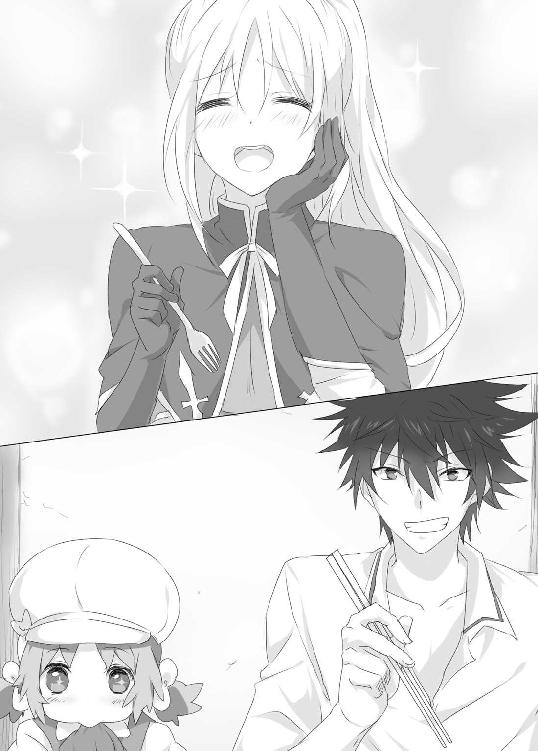
「いいんだよ。そういう食い方が一番うまく感じるように、味付けが濃くなってるんだ」
「え？」
「本当は箸で食った方がうまいんだぞ。その方が、ご飯が適量つかめる」
「そ、そうなの......」
シェッセは横目にリュカの様子を盗み見ると、たしかに彼女もがっつくように、グーで掴んだ箸でご飯を掻きこんでいる。
「食器にはちゃんと、その料理にあったモノが決まってんだ。うちの料理の味付けは箸で食ってちょうどいい。それだけだ」
シェッセの中で少し、箸の使い方も習ってみようかな、という気がわいてきてしまう。
そうこうするうちに、あっという間に食事を終え一息つく。先に席を立ったリュカは食器を流しに戻すと、日向の方へ歩いていき、そのまま床にゴロンと丸くなって昼寝を始めた。
なんとなく自分もそうしたいな、とリュカの寝顔に目を細めるシェッセ。だが、よく考えたらこんなことをしている場合ではない。首をブンブン振って本来の目的を思いだす。
どんなに蒼脚竜のステーキが美味しかろうと、それに舌鼓を打っていてはならないのだ。
「それよりタクト、さっきの話なんだけど」
「ん？ なんの話だ？」
忘れているのか、それともわざと、とぼけているのか。
「その......あれについて......」
もちろん竜仙華についてなのだが、リュカをあまり警戒させないように伏せながら話す。
「ああ......忘れてねえよ。でもそうだな。リュカもあれを集めてるみたいだから、無理に取り上げるわけにはいかねえだろうな」
たしかに小さな女の子から物を取り上げるのは申し訳ない。それにグレンからも、ことを穏便に進めるよう命令を受けている。
「だ、だから君が口添えをしてくれるって......」
「いや、それじゃあ、意味がない」
「え？」
「これはおまえの任務なんだろ？ それを俺が達成してしまったら、本来のおまえの騎士としての資質はどうなんだ、ということになるじゃないか」
――なるのかな？
シェッセは首を捻ってみる。
「いいか。まだ駆け出しのおまえが、そんな簡単な方法を選んで楽を憶えたら、将来ろくな大人になれないだろう。どうだ、おまえはそんなズルをするような真似をして手に入れた功績に、胸を張って喜べるか？」
「.........」
「他人の力で得た手柄を自分の物だと言って憚らない、そんな恥知らずな人間なのか？」
この言葉は効いた。シェッセの努力スイッチがパチリと点火する。
「そんなの、喜べない！」
「だから俺から名案を授けてやる」
「めいあん？」
タクトの自信満々の顔を、幾分怪しみながら聞き返す。
「おう、いいか。おまえがリュカと仲良くなりゃあいいんだ。そうすりゃ、リュカだって友達の証にって、竜仙華くらいポンッと明け渡すさ」
「そ、そうかな.........でも、どうやって仲良くなれば......」
「じゃあ、こういうのはどうだ？ おまえが肉屋の手伝いをして、リュカと共に汗を流し労働にいそしむ。おのずと上がる好感度、あっという間に友達だ」
「な、なにを言いだすんだ、君は！」
「なんだ、なにか不満でもあるのか？」
「だ、だってボクは騎士なんだよ」
「だから？」
「だから！ 騎士は副業をやっちゃまずいんだよ。禁止されてるんだ」
騎士団に拘わらず、公務を司る職種の者の副業は、基本的に法律で禁止されている。
「ああそう。わかった。提案した俺がバカだった。そうだな。おまえは騎士であらせられるんだもんな。聖竜伐騎士になる覚悟はあっても、肉屋を手伝う覚悟は無かったんだもんな」
「そ、それは......」
確かに騎士が肉屋を手伝うなど常識外であることは間違いない。ただ任務遂行を前提とした場合であるなら、それも許されるかもしれない。おそらく前もって責任者であるグレン中尉に一報入れる必要はあるだろうが。
「悪かったよ。おまえは充分頑張ったよ。じゃあな」
「待って！」
苦し紛れに難しい顔をしてみたが、やはり答えは明白であった。
「わかった......やる！」
シェッセが決死の覚悟で返答をした。にもかかわらず彼は苦虫を噛み潰したような顔で、
「いや、いいよ、別に」
なんと掌を返したように突き放してきたのだ。
勢いシェッセは、タクトに食らいついてしまう。
「やるって！」
「そんな嫌々やられたってこっちも迷惑だ」
「嫌々じゃないよ！」
「本気で言ってるのか？」
「もちろんっ！」
「よし、じゃあこれに拇印を押せ！」
サッと用意でもしていたかのように飛び出してくる、契約書と赤インク。
「うん！」
ポンッと親指にインクを付けて、拇印を押すシェッセ。
「..........................................」
しかし勢いあまって押した拇印に、急に後悔が押し寄せてくる。
「ちょ、ちょっと待って！ なにこれ！」
「なんだ、今更取り消せねえぞ」
「アルバイト契約書ってなに!?」
「そんなん、見た通りだろ。しっかり働けよ。ついでにリュカとも仲良くなれ」
「ついでなの!? しかも給料のこれはなに？ 『給与は何かそれなりのもので』って！」
「何かそれなりのものをやるよ。カメムシとか」
「いるか！ どこの誰がカメムシなんてもらって喜ぶんだ！」
あまりにひどい契約を結ばされてしまった。自分の浅はかさを悔いながらも、とりあえずタクトを殴っておいた。
「な、殴る奴があるか！」
「騎士の名誉を汚した奴とは、命をかけて戦うんだ！」
「わ、わかった。じゃあ、カナブンも付けるよ」
「だから虫はいらないっ！」
あまりの騒がしさにリュカが眠そうな目を擦りながら、ケンカをするこちらをぼんやりと見つめていた。
シェッセの最初の仕事は、肉屋フランシーヌの倉庫整理だった。
大きな肉の塊が吊るされている熟成用の半地下倉庫である。
結局シェッセはあの後、契約書と騎士の誇りを盾に取られ、泣く泣く肉屋のアルバイトをすることになってしまった。
どうにも納得がいかない。自分がこんなに乗せられやすい人間だという事がまず一つ。さらにはタクトと話していると、騎士団や学生時代に身に付けた心の鎧を、無理やり引きはがされているような感覚になる。そのせいもあって、自分がこんな人間だったのか、と驚きながらも、己のバカさ加減に頭を抱えるのであった。
しかしこれも任務のため。そう思いながらエプロンとゴム手袋をつけたシェッセは、タクトの指示に従って肉の塊を移動させる。
「いいか、程良く風に当てなきゃ、肉は熟成する前に腐っちまう。だからと言って風に当て過ぎてもよくない。テキパキ動かねえと、鮮度が悪くなるぞ」
「そんなにすぐに悪くなるもの？」
「そう思って働け」
「......ぐう」
リュカの方は小さい体ながら、自分よりもよっぽど大きな肉の塊を、苦も無くスイスイ運んでいく。
あの小さな体のどこにそんな力があるのだろうか。タクトといい、リュカといい、街の肉屋は謎が多すぎる、とシェッセは驚きを隠しながら肉の塊を運ぶ作業に従事した。
「よっしゃ、休憩」
タクトの号令で休憩になり、上の階からクーミェがお茶を運んできてくれた。
乾いた喉に水分を含ませ、一息つきながらリュカを横目で盗み見る。干し肉を齧りながらぼんやりとしている彼女と、これから友好を深めねばならない。シェッセは勇気を出して彼女に話しかけてみた。
「ね、ねえリュカ」
「？」
「その......ドラゴンの肉って、倒した後すぐに固くなっちゃうけど、あれを柔らかくする方法ってどんなことするの？」
先ほどタクトから聞いたことである。岩のように固くなり焼却処理をするしかないドラゴンを、あれほどまでに柔らかくする方法とはいったいどんなものか。
しかしリュカはしばらくシェッセを見つめ返していたものの、少しだけ顔を赤らめ、
「......ひみつ」
と言って俯いてしまった。一緒にいるタクトにすら教えていない秘密なのだ。今日会ったばかりのシェッセに教えてくれるはずもないだろう。質問選びを失敗してしまったな、と反省しながらシェッセが倉庫の隅に目を移すと、リュカが背負っていたあの冷蔵庫があった。
魔力可動式の冷蔵庫――中々の高級品である。
普通こういった魔法家具は、貴族や一部の裕福層の家にしかない物だ。シェッセは冷蔵庫の前までやってくると、興味本位の軽い気持ちで扉を開いた。
「わあっ！」
しかし目に飛び込んできた光景は、彼女の知る冷蔵庫とは程遠かった。
冷蔵庫の中には、なんと異空間が広がっていたのである。
それもただの異空間ではない。内部に存在する肉の塊や、以前タクトが使っていた武器などが、重力を無視したように浮遊しながら、どれもがグニャリと歪んでいた。
本来の冷蔵庫は、扉を開ければ網棚があるだけである。
しかし目の前にある冷蔵庫の中身は、空間を歪めるほどの魔力が渦巻く、異世界のような光景だった。仰天するシェッセが気になったのか、リュカがちょこちょことやってきて、不思議そうな顔をする。
「ぐぅ」
「............えっと」
シェッセはうまい質問が見つからず、冷蔵庫の中を指さしてみる。
リュカは相変わらずの無表情で首を少しひねると、
「......『ほれい』と......『へきは』がかかった......れいぞうこ」
とあっさり答えた。
要約すると『保冷魔法と壁覇式異空間魔法の掛かった冷蔵庫』である。
保冷魔法は、読んで字のごとく保冷機能である。
ただ壁覇式は少々勝手が違う。この方式の魔法は、異空間に魔力で穴をあけるという技術である。魔力から魔法へ練成する方式がひどく難しいとされ、その術式は未だほとんどが謎とされている。めったに見ることのできない高等技術だった。
偶然ながらもリュカと話す機会が到来したのだが、初めて見る魔法にシェッセはそんな下心を忘れて、素直に質問をしてしまう。
「リュカがやったの？ この壁覇式」
そんなシェッセの問いに、リュカは首を横にふるふるとさせた。
「りゅかじゃない。べつのひと」
別の人が作ったという事なのだろう。リュカはそんな空間変異状態の魔力渦巻く冷蔵庫の中に、恐れることもなく手を突っ込む。
「......ぷりん」
再び冷蔵庫から手を引き抜いた彼女の手には、ほどよく冷えたプリンが二つあった。
「べんり」
確かに便利である。そういえば以前見た時も、冷蔵庫より大きな蒼脚竜の肉塊や長大な武器を、ことも無げに納めてしまっていた。
「はい、ぷりん」
「ありがとう――ねえ、リュカ。この中に武器も入れて運んでるの？」
「うん......べんりだから」
ちょうどその時、上の階で魔力式通話機のベルが鳴った。魔力を音声情報に変換し、遠距離間を瞬時に移動させ、通話を可能とさせる魔法家具である。
しばらくするとクーミェが通話機を取ったらしく、「はいはい」と話す声が聞こえてくる。
――やっぱり商いをするには、ああいう一般魔法家具は必要なんだな。
そんなことを考えながら、残された少ない休憩をぼんやりと過ごしていた。
すると話しが終わったのか、クーミェが階段を下りてくる足音が聞こえてくる。顔を覗かせた彼女は、何故か申し訳なさそうにした。
「あのお、すいませんタクトさん」
「なんだ？」
「その、急な発注で走竜が一頭、必要になっちゃいまして」
「おい在庫ねえぞ」
「はい......ですから.........」
続きを倉庫の隅で、タクトとコソコソ話すクーミェ。そんな二人の様子にシェッセは何やら嫌な予感が隠しきれなかった。
シェッセの嫌な予感は見事的中してしまった。肉屋フランシーヌにきた発注品は、現在品切れだったらしい。しかし肉屋のプライドか、そのオーダーをクーミェは断わらず、タクトが狩りに行く、ということになってしまったのである。そして現在リュカはもちろん、シェッセもまたそれに駆り出されている、というわけなのだ。
王都セントウッドを出て、近くの森まで発注された走竜を狩りに行かねばならないのだという。サウスクインティアから、そのまま南に下り、城壁の門を潜るとその先は広い平原が伸び、遠くに大きな森が見えた。
異国と王都を繋ぐセントウッド街道を外れ、草が生い茂る狭い獣道を一列になって森へと向かっていく。
「ねえ、走竜って強いの？」
「なにビビってんだ？」
「ビビってないよ！ ただ、ドラゴンと戦うって、なんか緊張して」
「と言っても下位三等種のドラゴンだ。竜伐騎士じゃなくたって倒せる」
下位ドラゴンは上から一等種、下は四等種まで区分されている。走竜はタクトの言う通り、下位三等種、つまり下位の中でも三番目の強さということになる。
とはいえドラゴンであることには変わりはない。
「まあそれに、今回は簡単に獲れるだろう」
「え、そうなの？」
気楽に言うタクトに、シェッセは驚きながら聞き返した。
「ああ、なにしろこっちには魔法が使えるやつがいるんだ。最大限に利用して行こうぜ」
タクトの言葉に、シェッセはビクリとする。
あまり触れられたくない所だった。どうやらタクトは、そんなシェッセの反応を、敏感に感じ取ったらしい。
「............おい、どうしたシェッセ」
「え............ええっとね............とても言いづらいことなんだけどね」
「ああ――言ってみろ」
「ボク......実は魔法が........................使え......ないんだ」
思い切ってシェッセは自分の秘密を告白した。それは王立魔法騎士団に於いて、自分が予備隊士という閑職に追いやられている最大の原因。
皆がシェッセに侮蔑と嘲笑の視線を浴びせかけていた理由。
「..................」
時が止まった。
シェッセは顔を上げることができなかった。この秘密を知って、タクトにまで憐れみの目で見られているのではないか、と思った。
嘲りの目、蔑みの目――騎士団で遠くから投げかけられる無数の見下された視線がシェッセの脳裏に甦る。
しかしタクトは、そんなシェッセの予想を大きく裏切った。
「おまえぇぇぇっ、それは詐欺だろうっがっ！」
「えっ!? いや......べ、別に騙してたわけじゃ」
「王立魔法騎士団の、魔法って字は飾りかっ！ 俺はな、今回は全部シェッセに任せて、高みの見物をしようとしてたんだぞ！」
あろうことか怠ける気満々だったようだ。勢いシェッセも言い返してしまう。
「君は肉屋だろう、なに楽しようとしてるんだ！」
「もう肉屋は全部シェッセとリュカに任せて、俺は楽隠居を決め込もうとしてたのに。なんてやろうだ！」
「なんでボクが永久就職することになってるの!?」
「高いアルバイト代出して魔法騎士雇ったってのに......」
「アルバイト代って虫でしょ！」
「カメムシとカナブンだぞ！」
「なにすごい高給払ってる、みたいな顔してんの？ いらないよ！ あと、やらないよ！」
断言するシェッセに、タクトは急に悪辣な笑みを浮かべる。
「いや、やらせるさ。既にこちらは一つ、おまえの弱みを握っているんだからな」
「......な、なに？」
「白馬の竜伐騎......」
「うあああっ、やめてえええぇっ！ たぶんそれだってわかってたけどやめてぇー！」
思わず頭を抱えてしまった。そんなシェッセを見下ろしながらタクトが腕を組む。
「それに魔法も使えないくせに、なんで魔法騎士団に受かってんだ！」
「だから『魔法は使えなくても、いいところが幾つかあるので伸び代に期待』ってことで」
「......なんだその、取ってつけたような補欠合格は？」
「補欠合格でもいいじゃないか！」
滅茶苦茶な言いがかりを吹っかけられながら、タクトをボカスカ殴ったり、言葉の応酬にあったりしながらも、一行は歩みを進めていく。
――何楽しようとしてるんだよ、タクトは。
そう思いながらも、シェッセの心はなんだか軽かった。
魔法が使えないという事実を話したのに、こんなに気が楽なのは何故だろう。騎士団なら蔑みの視線を投げかけられ、陰で笑い者にされる事に甘んじているしかなかった。
しかしタクトときたら、詐欺だなんだと言いながら真っ向から言いたい放題だ。
こっちが殴ろうが蹴ろうが、ヘラヘラ笑いながら更にバカにしてくる。
――ほんとに頭にくる......頭にくるけど......。
それがものすごく自分にとって楽であることが不思議だった。あの重たくて苦しくて、いつも心を引き締めていなければならない緊張感は無い。ここでは思いっきり怒っていい。自分がこんなに感情を露わにしていることに、シェッセ自身が驚いているくらいだった。
ふとそんなことを考えていたシェッセに、タクトが不思議そうな顔をする。
「おい、でもなんで魔法が使えないんだよ。魔法って、あれは誰でも使えるもんなんじゃねえのか？」
本来魔法とは得手、不得手はあっても、誰にでも使える技術である。精霊魔法などの特殊魔法を除き、一般とされている練成魔法は、市井の子供も使えるのだ。
聞かれたシェッセは一瞬話すべきか悩んだ。
しかし言葉は思ったよりもすんなり口から飛び出してしまう。
「......その......ボクもよくわからないけど......生まれながらに......」
「え？ なんで？」
「魔法って身体の細胞の中にある『魔力伝達体』に、空気中の『魔力元素』を取り込んで、別の物や現象に換える行為でしょ」
「う～ん、まあ、それはなんとなく知ってる」
「......なんとなくなんだ」
思いのほかタクトは魔法に対する知識が欠けているようだ。
実際、蒼脚竜とタクトが戦っていた時も、魔法を使っている様子はなかった。
「ボクはその......魔力元素を変換できないんだ」
「なんだそりゃ？ その......魔力伝達体がシェッセには無いのか？」
「あるよ。魔力伝達体が無ければ生まれてくることができないじゃないか」
「そういうものなのか？」
タクトのあっけらかんとした返しに、シェッセは耳を疑った。
「ねえ、タクトは転生思想を知らないの？」
「......知らん」
シェッセは大いに驚いた。この考え方は民族や宗教の壁を取り払っても、一般常識とされている。それを知らないと言うタクトに、シェッセは改めて転生思想について話した。
「魔力伝達体はね、親から遺伝するものじゃないんだ。前世の人間の魔力伝達体が、来世に転生する時に受け継がれる。つまりこの世界のあらゆる生き物たちは転生し続け、魔力伝達体は巡り巡っているということになるんだよ。だからボクの魔力伝達体も、生まれる前の誰かから引き継いだことになるんだ」
「じゃあシェッセにも魔力伝達体はあるんだから、魔法が使えるってことじゃないのか？」
「......ううん、使えないんだ」
「...............」
「呪い......らしいよ。ボクも調べてみたけど、生まれる前の......つまり前世の人が、魔力伝達体に呪いを掛けられていたんだって。それで転生したボクにも、呪いが引き継がれちゃったらしくて......その呪いが、ボクの魔法を使えなくしているんだ」
「...............」
その話を聞いていたタクトは、一瞬まじめな顔になり口を噤んだ。
「ど、どうしたの？」
問いかけられたタクトは急に我に返ると、いつもの軽薄なヘラヘラとした顔に戻った。
「いや、なんでもねえ.........なんだ呪いか、そうか」
「なんだとは、なんだよ！ こっちはずっと悩んできたんだよ！」
「そうかそうか。呪いなのか」
タクトはそのままヘラヘラとしながら、その話をそこで打ち切ってしまう。
それでもシェッセにはタクトが一瞬見せたまじめな表情が、ひどく頭の中に残った。
そうこうしている間に、三人は森の奥まで入り込む。
木々の幹は太く、どれもよく育っていた。
そのためか鬱蒼と茂る葉に覆われた森の中はひんやりとして、どこか薄暗い印象である。
その時、先頭を歩くリュカの冷蔵庫が前向きに傾き倒れる。
シェッセはリュカが躓いて、冷蔵庫に押しつぶされたのではと心配したが、そうではなかった。横から見てみると、リュカは四つん這いになって、地面の臭いを嗅いでいたのである。その姿は、飾りのしっぽのせいもあってか、さながら猟犬のようでもあった。
「.........いる」
言葉少なに顔を上げたリュカが言うと、タクトは腕を組んで眉間にしわを寄せる。
「距離は？」
「１４０めーとる」
「近いな......しかし参った。シェッセの魔法におんぶに抱っこのつもりでやってきちまったから、一切の装備がない！ くそっ！ シェッセのせいでっ！ シェッセめ！ 末代まで祟ってやる......」
「.........君はどんだけ人に責任なすりつけるつもりなんだ！」
「なにを言う。おまえが前もって言っていれば、万全の装備で来ていたんだぞ」
「うぅ......でも冷蔵庫の中に、武器があるじゃないか」
「あん中に入ってるのは大型竜の為の武器だ。走竜みたいな小型の竜に使う武器じゃねえ」
「じゃあ、他に何か武器は無いの？」
「今持ってるもんといえば......」
タクトが懐を探りながら何やら刃物を取り出す。
ジャックナイフ12本、果物ナイフ５本、肉切り包丁２本、キャンピングナイフ１本、ペーパーナイフ２本、草刈り鎌３本.........。
「ダメだ......これじゃ狩りにならねぇ」
「君は幾つ武器を所持してるんだ!?」
「こんなもん、ふつう誰でも持ってるだろ」
「持ってないよ！ それだけあれば、狩りに問題ないじゃないか」
「おまえというやつは......」
困った子を見つめるようなタクトの目に、シェッセは「うぐ」とたじろぐ。
「これじゃ走竜を無駄に傷付けるだけで、狩りとは言えねえ......仕方ない。ここはひとつ、原始的な方法で行こう」
するとタクトは、腰にぶら下げてあった縄をあっと言う間に、あやとりのように編みあげ幾つもの輪っかを作りあげる。
「とりあえず、即席の罠だ。うまくこいつに走竜を追い込もう」
そう言いながら撓る木に括りつけて、罠を完成させる。
「いいか、走竜は基本的には臆病なドラゴンだ。周りから気配がすればすぐに逃げ出す。俺たちは三方向から奴を追い詰めて、この罠まで誘導する」
「ぐう」
「わかったよ」
「あと、走竜の正面にだけは立つなよ」
「なんで」
「防衛本能で突進してくるんだ。名前の通り足が速くて脚力が強いから、ぶち当たったら怪我じゃすまないんだよ。いいな」
「うん、わかった」
「よし、じゃあ行くぞ」
タクトの指示の下、三人は罠から走竜を迂回して回り込む。シェッセも遠目にタクトたちを確認しながら、物音を立てないように走竜に近づいていく。
――いた......あれが......。
茂みに隠れながらシェッセは目的の走竜を発見した。大人の人間程の大きさだが、脚の筋肉が非常に発達している。走り出したら、タクトのいう通りかなり速いのは目に明らかだ。幸いあちらはこちらの気配にはまだ気がついていない。
遠目にタクトの手が上がる。指示が来た。その指示に合わせて、軽く茂みをゆすると、走竜は敏感に三方から聞こえた音に反応し、驚きを露わにしながら走りだす。
やはりとてつもなく速い。あちらが走りだすと同時に、シェッセも飛び出す。
向こうの茂みからもタクトが飛び出してきたが、誰よりも早く走竜を追ったのは、リュカだった。
重そうな冷蔵庫を背にしながら、四つん這いになって走る彼女は、狩りをする動物のように走竜を追いかけて行く。
「ぐぅぅぅ......あうっ！」
リュカは吠えるような声を上げる。そして目的の方向から離脱しようとする走竜を、巧みに誘導し罠へと追い詰めて行く。
「すごい、あんなに的確に......」
感嘆を漏らしながらもシェッセはリュカの後を追って、獲物を追い詰める。
後少しで罠に――そう思った瞬間だった。
なんと走竜が身体を幹に打ちつけながら、ターンしたのである。反転しシェッセの左方向の茂みの中へ飛び込もうとする走竜。
思わぬ獲物の反応に、シェッセだけではなくリュカも驚きの声を上げる。
「そっち！」
シェッセは急ぎ、獲物を威嚇するように茂みを揺らして音を立てる。
うまく方向転換してくれるか――そう思ったシェッセの願いは儚くも届かない。
「あ.........あ」
シェッセは10メートル先に立つ走竜と目があってしまった。
たった一瞬の間である筈なのに、驚くほど長く感じる。
緊張と恐怖が膨らんだシェッセは、僅かに判断を遅らせてしまった。
走りだす走竜――シェッセに向かって突進してくる。
なんとか帯剣の柄に手をかけるが、間にあわない。
「んなあぁぁらあああっ！」
その時タクトが、大声を上げながら鉄パイプを全力で投げつけた。
鉄パイプは矢のように空気を裂き、走竜の目前に大地を割って突きささる。
大音とともに目の前に現れた鉄パイプに驚いた走竜は、その場で上半身を浮かせ蹈鞴を踏んだ。
「シェッセ！ とどめを刺せ！」
タクトの声にシェッセは即座に反応する。
「―――うん！」
シェッセは大股に構え、帯剣の柄に手をかけると、抜き打ちざまに走竜の腹を薙ぐ。
「だあぁりゃああっ！」
全力で斬りあげたその剣に、走竜の身体が吹き飛んだ。そして大きな木の幹に身体を強か打ち付けると、そのまま動かなくなった。
振り切った剣を構えたまま、シェッセはその場にペタンと腰をつく。
見ればリュカがちょこちょこと走竜に近づき、冷蔵庫を下ろしながら回収に掛かっていた。
そこへタクトが、あきれ顔半分、笑い顔半分の複雑な表情をしながらやってきた。
「まあ、ちゃんと急所も外してねえし、よく倒したな」
そう言いながらこちらに手を伸ばす。差し出された手を取りながら、シェッセは浅い呼吸を繰り返した。
「あ、ありがとう」
「まあ、騎士として剣の腕が立つことはよくわかったよ。おまえの剣は大したもんだ」
「............うん」
タクトのその言葉が何やら褒め言葉に聞こえて、シェッセは嬉しいような恥ずかしいような気持ちになった。騎士団に於いて、剣の腕だけを褒められることはないに等しい。剣と魔法、両者のバランスが取れて初めて褒められる。だからこそ、タクトが褒めてくれることが嬉しくて、シェッセは薄く笑った。
しかし、そんなシェッセを前に、タクトの声色がガラッと変わる。
「しかーしっ！ 肉屋としてはザリガニ以下だ！」
「ザ、ザリガニ!?」
「てめえ、あんな大振りに剣を振ったから、いらんところまで傷ついてんじゃねえか！
売りもんに思いっきり傷つけやがって！ あれで値切り交渉されたらおまえのせいだからな。給料から差っ引くぞ」
「うぅ、ボク肉屋じゃないよぉ」
と悔し紛れに言ったが、タクトは眉間に皺を寄せながら腹立たしげな顔で、アルバイト契約書をヒラヒラさせた。
「この、あくまーっ！」
ジタバタするシェッセに、タクトは楽しそうにヘラヘラと笑うのであった。
＊＊＊＊
それはシェッセが十二歳の時のことであった。
両親へ自分が『将来は聖竜伐騎士になる』と告げた日、何故かシェッセは父に強か頬を叩かれ大泣きに泣いた。
名門リハエル家の親族からは、過去に幾人もの竜伐騎士が出ている。だから自分も竜伐騎士になるのは当然だと考えていた。もちろん、その思いに至るには、昔自分を助けてくれた、あの青年の背中があったことは確かだ。
――いつか自分も彼のようにドラゴンを倒せる人間になりたい。
そう思い続けて来たシェッセにとって、竜伐騎士への憧れは日増しに強くなる一方だった。そんな彼女が、その歳としては異例なほどに、ドラゴン討伐に関する知識に長けていたのは、ある意味当然であった。
剣の腕もやはり飛びぬけていた。自分より年長の者でも、シェッセに勝てる者はどんどんいなくなっていた。
ただ一点、彼女にはいくら練習を重ね、鍛錬を積んでもできないことがあった。
魔力元素を練成する行為――つまり魔法である。
身体の中を大量に魔力元素が流れていく感覚はあるのに、呪文でそれを練成させようとしても、どうしてもできない。身体の中を駆け巡る魔力元素は変換されることなく、ただ穴から空気が抜けていくように飛び出て行ってしまう。
何故自分には魔法のセンスが、ここまで欠落しているのか。シェッセには甚だ疑問であったが、それでも鍛錬を積み、努力すれば、必ず魔法も習得できると信じていた。
竜伐騎士になるためなら、どんな努力だってしてみせる。幼いながらもシェッセの中には、そんな信念が確固としてあったのだ。
父に叩かれ泣きながら自室にかけ込んだシェッセは、しばらくわんわん泣いていた。しかしそんなことで竜伐騎士になるという夢は潰えることはなかった。むしろ反対されたことで、その欲求は高まる勢いだった。
これ以上泣いても仕方ない。それは解決になんてならない。
たとえもう一度父に殴られても、自分は竜伐騎士に......いや聖竜伐騎士になるのだ、と告げに行くことにした。
自室を出て夜の廊下を渡り、父と母の寝室へ行くと、中から言い争う声が聞こえる。言い争いの内容は、もちろんシェッセのことであった。
「なにも竜伐騎士になることを反対しなくてもいいでしょう。まだ子供なのに」
「子供だからだ。あの子は本気で竜伐騎士になりたがっている。おそらくそのまま大人になるまで努力し続ける。しかしいつまでも秘密にしておけるわけがないだろう。シェッセには、生まれながらに呪いが掛かっているんだぞ」
――生まれながらに......呪い？
初めて聞く事実に、幼いシェッセの心臓が、鼓動を速くした。
「あの子は......シェッセは魔力を練成することが一生できないんだ。そんな呪いに掛かった娘を、ドラゴンとの戦いに送りだせ、とでもいうのか？ 死にに行けと言っているようなものなんだぞ。シェッセにそんな運命は背負わせられん」
心音は高鳴っていく。自分の身体の中に流れる呪い。一生魔法が使えないという事実。受け入れられず、部屋の外で立ち尽くす。
――ボクは魔法が使えない......どんなに努力を重ねても......。
どう受け止めていいのかわからなかった。身の内側から這い上がる絶望感。どうあがいても越えられない圧倒的な障壁。今まで努力してきたことを、たった一つの事実が全て無効化していく。
希望という宝石がみるみるうちに、ただの石ころになっていく。
立っているだけでもおかしくなりそうな自分を律しながら、掌から零れていく希望を必死で掻き集めるように、シェッセは口元を強く結んだ。
――なる......ボクは魔法が使えなくても、それでも竜伐騎士になりたいんだ。
自分の意志が決して揺るがないように、シェッセはその決意を言葉にすることをやめた。
誰に理解をされなくてもいい。誰にも縋らない。誰にも甘えない。自分の道は自分で切り開かなければならない。
刻みつけるように幼いシェッセは決意を胸にする。
どんな呪いが自らの内に存在しているのだとしても、全てを使いはたしてでも、あがき続けて見せる。
シェッセはその日を境に泣くことを、止めた。
第二章 矜持の一歩
走竜の狩りから帰ってきた次の日のことである。
シェッセはタクトに言われた通り、午前中から肉屋フランシーヌへと向かっていた。もちろん今日も、肉屋の手伝いをさせられるためである。
「いったい、いつまでこんなことすればいいのかなあ」
下町サウスクインティアへ向かう道すがら、ため息混じりにそんな言葉が漏れるのも、いたしかたないことだろう。
リュカと仲良くなる、という目標を掲げていたが、現状うまくいっているとは言えない。彼女はシェッセを避けるような態度こそしなくなったものの、長く会話を交わしてくれるには至らないのだ。
そんなことを考えながら歩いていたシェッセは、突然こちらに向けられる視線を感じた。
「............!?」
かなり距離を置いた安全圏からこちらを監視しているようだ。こちらが僅かにでも注意を払うと、すぐに気配は消えてしまう。
――何者なんだろう......かなりの尾行技術だと思うけど......。
距離から考えると、あちらが危害を加えることは不可能だ。遠距離魔法を使うにしても人が多すぎる。さすがにそこまで堂々と犯罪を行うことは考えられない。注意を払いながら歩いていると、ようやく肉屋フランシーヌの看板が見えてくる。
「あら、おはようございます。シェッセさん。どうですか？ 肉屋の仕事なれました？」
若き店主のクーミェが笑顔で迎えてくれるので、ぎこちない笑顔でなんとなく対応しておく。とりあえず先ほどの視線の件は、一時保留することにした。すると今度は店の奥から、タクトがふてぶてしい顔をのぞかせてきた。
「おい、こら。遅いぞ。配達が待ってんだ。さっさと用意しろ」
「うう、君はまたボクをこき使うつもりだね」
「あたりまえだろう」
思いきり断言してきた。しかしこれも任務を遂行するため。そう心に念じながら、シェッセは仕事の用意に掛かる。
シェッセは私服の上からエプロンを着けながら、キョロキョロとリュカを探すが、まだ彼女の姿はない。
するとクーミェがモジモジしながら、タクトの下に近づいていくのが目に入った。
「タクトさん、ちょっとお話があるんですが、よろしいですか？」
「なんだ？」
「わたし、花嫁修業をしようかなって思ってるんです」
何やら浮いた話が飛び出してきて、シェッセは自分がここに居てはいけないような気まずさを感じる。しかし完全に逃げるタイミングを逸してしまった。しかたなく身じろぎもせず、視界の片隅で二人の様子を見るともなく窺う。
「ほう、そうか。頑張れよ」
「はい、それでですね。タクトさんに、もしかしたらご相談するかもしれないのですが、もしその時は相談にのってくれますか？」
「ああ、別にそれは構わないが......とりあえず頬染めながら、売り物の肉を突き刺すのはやめないか？」
「あら、私としたことが。そそっかしいですね」
「そそっかしさで刺してたんだ.........頼むから人は刺すなよ」
そんな楽しそうにしているクーミェの様子は、どう見てもタクトに好意を寄せているように見える。そういった話に疎いシェッセでも解るのだから、かなり彼女の行動はあからさまと言えるかもしれない。それなのにタクトは、それを受け流すような素振りである。
――鈍感なんだ。
そんなことを考えながらシェッセは、思い出の中の竜伐騎士になると言った青年と、タクトを比べてみたりする。
――あの人は鈍感じゃないよね。きっと。
遠い記憶の中のこととはいえ、なんとなくそんな気がするのだ。思い出だと、どうしても美しくしてしまう事はわかった上で、差し引き計算をする。それでもあの青年は凛々しく堂々として、そして強かった。
――タクトは確かに強いけど、どう考えても性格が歪んでいる。全然違う。
「おい、こら、誰が歪んでるって？」
「わあっ、なに人の思い出に勝手に入ってきてるの！」
「おまえが一人ごと言ってたんだろうが」
「い、言ってないよ」
――あれ、口に出てたかな......。
「ったく、白馬の竜伐騎士様と比べんじゃねえよ。こっちは街の肉屋だぞ」
「別に肉屋だっていいじゃないか。ボクはそんな肉屋を卑下するつもりはないよ」
「ほう、そうか。騎士にしちゃ珍しいな」
ちょっと感心したような顔をするタクト。実際に王立魔法騎士団の人間で、職業や地位に対する差別意識を持っていない者は少数派である。
ふと騎士団での自分の立場が頭を掠めて、シェッセはため息混じりの複雑な表情をした。
「まあ、そんなこと騎士団内じゃ口に出せないけどね」
「なんで？」
「だって......」
そう言ってシェッセは、この間のクローディアスとの話をした。王立魔法騎士団における暗黙の了解。弱い者は決して意見ができない現状。シェッセがどんなことを思っていようと、それは決して口に出せない事実。
「ボクが正しいと思っていても、それを口にしてはならないんだ」
「言ってやればいいじゃねえか。おまえが思ってること」
「い、言えないよ！ だってボクは.........その......弱いから......」
強い者こそが正義である騎士団内で、シェッセに発言権など存在しない。
しょぼんと俯くシェッセに、タクトは不思議そうな顔をした。
「魔法が使えないからか？」
「.........うん」
しばらくタクトは顎に手を当ててなにか考えている様子だったが、ふと何かに気付いたのかいつもの不敵な笑いを浮かべる。
「......おい、ちょっといいか。話は変わるが、そのクローディアスってやつさあ」
「なに？」
「もしかして、『奇遇だなあ』とか言って、よくおまえの前に現れるか？」
「あ、うん。いつも練兵所のあたりをウロウロしてるよ」
「そうか、くくく......そうなのか。なるほど」
「??」
タクトの顔が悪だくみの色に染められていく。嫌な予感がするので、シェッセはそこで話を纏めてしまうことにした。
「と、とにかく、ボクは別にタクトの仕事を卑しいとか思ってないから。それだけだから」
「ああ、わかったよ。ありがとな。おまえのそういうところは好きだよ」
「すすすすすすーすす、好きとか！ なな、なに言ってるのさ！」
もちろんラブではなく、ライクであることはシェッセにだってわかっている。わかっていながら思わず赤面して、あわあわしてしまったのだ。
「ああ？ なに勘違いしてんだ？」
「ばかっ！ 勘違いなんかしてないよ！ そうじゃなくって、その......」
「ああ、よしよし。わかった、わかった。ほら、配達行くぞ」
「うぅ......」
なにかすごく子供扱いされている気がしてならない。シェッセは既に成人なのだ。セントウッドでは満15歳から成人と認められ、酒などが許される。なので16歳のシェッセは、れっきとした大人なのだ。子供扱いされれば頬も膨れる。
「子供扱いしてるでしょ」
「してねえよ。おまえはちゃんと大人の女だよ」
タクトがいつになく真剣な顔で見つめるので、シェッセは思わず目を逸らしてしまった。
「......うん、わかってくれれば、いいんだ......別に」
「よし、それじゃ行こうか。ほら、お馬さん、はいどー、はいどー」
「やっぱ子供扱いしてる！」
「してねえよお」
そしてこのニンマリ顔である。
騙された。あの真剣な顔はタクトの罠だった。目を逸らして照れたりしたのが余計に恥ずかしさを助長する。
どうもここに来てから、タクトのおもちゃにされている気がしてならない。ずっと調子を狂わせられている。
それでも何処か嫌ではない、と思ってしまう気持ちもあった。
どんなに言いたいことがあっても、力が全ての魔法騎士団に於いて、シェッセに対する発言権はおのずと無くなっていた。たとえ名門リハエル家の一人娘であっても、それは決して変わらない。
そんなシェッセにとって話す言葉に気を使わなくていいこの肉屋は、どこか気持ちが楽でいられる気がしたのである。
――もしかしてタクトはそれをわかっていて、わざとあんな風にふるまってるのかな......。
「おら、シェッセ。台車牽け、こら！」
「なんで君は台車の上から命令してるんだ！ ちょっと君を見直そうかと思ったボクがバカだったよ！」
「うるせー！ 給料分はチャキチャキ働け、新人」
「くぅ！ 全然給料に見合ってない！」
配達される肉を満載した台車は、一人で引くにはあまりに重すぎる。そこにタクトが乗っかっているから余計だ。
「うぅ、引けないよ。タクトも押してよ！」
「押しても構わないが、シェッセは、それでいいのか？」
「なにまじめな顔してるの？」
「ここで他人に縋って助力を求めて楽をして、そんなんで騎士として胸を張ることが......」
「......タクト、もうその手には乗らないよ」
「チッ」
ものすごい悪人面で舌打ちをするタクト。ため息をつきながらシェッセは、台車の隅に腰を下ろす。それから保冷剤と一緒に積まれた肉塊の山を見て、ふと疑問が頭をよぎった。
「ねえ、ところでタクト。なんで台車に、お肉を積んでるの？」
「配達するからに決まってるだろ。何を言ってるんだ？」
「あ、いやそうなんだけど。わざわざ台車に積まないでも、冷蔵庫に入れて持っていけば楽チンだし、冷えてるから肉も傷まないし......あれ、なに今気づいたみたいな顔してるの？」
「そそそんな、顔を、いつ俺がしたっ!?」
「う～ん、進行形で？」
「おいおい、いいか、シェッセ、そのだな......」
「タクト、すごい目が泳いでるよ」
「目と魚は泳ぐものだ。すごいんだぞ、秋になると川を上って帰ってくるんだからな」
「......目が？」
「ああ、そうだ。そして上流で大量の眼球を産卵して......」
「気持ち悪い！」
うっかり想像してしまった事を後悔した。
「とにかくだな、一般的に世間様が見て、台車に肉が積んであったら肉屋だとすぐにわかるだろう」
「それはまあ......そうだね」
「台車に冷蔵庫なんか積んであったら、それはどう見ても家具屋だろう」
「うん......まあ.........そう......かもね」
「俺は肉屋だから、台車に肉を積む。いいな！」
「まあいいんだけど......」
「わかってくれればそれでいい。シェッセは思いのほか、ものわかりがいいな」
「汗ふきなよ」
「汗じゃない！ 涙だ！ ......いや、汗でいい！」
ものすごく狼狽してるっ！
気を取り直してシェッセは、ある提案をすることにした。
「とにかくさ、協力するか平等に台車を牽く人、決めようよ」
「協力とか......平等とか......」
「なんだかすごく嫌そうだね。順番とかでもいいよ」
「ああ............じゃあ、ジャンケンで決めるか」
「じゃんけん？」
「いいか、グーはチョキに勝って、チョキはパーに勝って、パーはグーに勝つ。いいか？」
手振りを踏まえて説明してくれた。思いのほか単純なルールだ。
「うん、わかった」
そこへいつの間にかやってきたリュカが、ちょこんとシェッセの袖を引っ張る。どうしたのかと思い彼女に目をやると、リュカはそっとシェッセに小さな声で耳打ちをした。
「くっそ～っ！ なぜだ！ なぜ俺ばかりが牽いている!?」
タクトは汗だくになりながら、シェッセとリュカの乗る台車を牽き続けていた。一キロメートルごとに交代でジャンケンをしてきたのだが、ここに至るまでタクトは全敗していたのだった。
シェッセはリュカの言う通り、ずっとパーを出し続けて来た。
そしてなぜかタクトは、決まりごとのように最初にグーを出すのだ。
「俺はジャンケンに呪われてるのか......」
どうやらタクトは、最初にグーを出す癖に気がついていないようである。
結果として顔を真っ赤にしたタクトは、汗を滴らせながらゴトゴトと台車を牽いて行くのだった。
長閑な昼の陽気。春の風は心地よく、空は淡い水色でシェッセは思わず欠伸を吐いた。
一方リュカは干し肉をモグモグとさせながら、遠くをぼんやりと見つめている。隣に座っているシェッセを避けるような素振りもない。しかし干し肉を咀嚼するのに夢中のようなので、声をかけるのは憚られた。
――どうやって仲良くなろう......。
台車はサウスクインティアから、商店が立ち並ぶ通りをぬけていく。
ふとそこでシェッセの目に、洋裁店の店先に並ぶ色とりどりのリボンが目に映った。
――あ.........かわいいな。
普段からあまり自らの装飾品に気を使うことはなかった。強い騎士になるために、そういった煩悩を横に押しのけて来たからである。
ただ本当のところは、かわいい物が大好きだった。だからリボンが欲しい、と思ってしまった訳だが、シェッセはその気持ちをグッと押し堪えた。それよりも自分には、やるべきことがあるのだ、と己の目標を胸に掲げる。
そうしながらも、シェッセは自分の髪を留める、飾り気のない髪ゴムに軽く手を触れた。
ここにあんなリボンがつけられたら、と思うのは年頃の女の子であるなら仕方ないことである。
「......ダメダメ」
自らに言い聞かせるようにシェッセは、目に毒だとばかりに洋裁店から視線を逸らした。
「............」
そんなシェッセに気がついたのか、タクトがこちらをチラリと一瞥する。
シェッセは自分の逡巡を悟られまいと、平静を装って空を仰いだ。
それから台車はシェッセの実家があるリンドの隣町、テューレへと入っていく。王都中央に近く、この辺りは国の行政機関や庁舎が多く立ち並んでいる。
町の様相が変わりだした頃から、シェッセは少しずつ不安な気持ちになりだしていた。
図らずしも視界には、その原因とも呼べる建物が入ってくる。
そしてほどなく、シェッセの不安は現実のものとなった。
なんとタクトが台車を止めたのは、王立魔法騎士団庁舎の裏門だったのである。
「ね、ねえ、タクト。もしかして配達先って」
「おう、ここだ」
的中である。まさか任務の最中とはいえ、肉屋としてこの庁舎の門を潜ることになるとは思ってもみなかった。
タクトと一緒に肉を背負って庁舎内を歩く姿を想像しただけで、シェッセの背中には、びっしょり汗がにじみ出てくる。任務とはいえ、アルバイト姿を騎士団員に見咎められる可能性があったからだ。
「ボ、ボクはここで待ってることにするよ！」
「なに言ってやがんだ。おまえが運ぶんだよ。おい、リュカは、その間に別の配達済ませといてくれ。特に走竜の扱いは慎重にな」
「ぐう」
と返事をするとリュカは肉の塊の入った袋を三つ下ろして台車を引いて行ってしまった。
「ほら、行くぞ」
タクトはそう言って袋を二つ担いで、裏門に入っていく。シェッセはしばらく戸惑うも、任務を途中で放棄するわけにはいかない。しかたなく袋を背負ってタクトの後を追った。
シェッセはエプロンのポケットから、ハンチング帽を取り出すと、目深にかぶって下を向きながら慎重に歩く。
おそらくは庁舎の食堂への配達だろう。それなら裏門から、すぐに食堂の汎用口に到着できる。他の騎士たちに会う心配は限りなく少ない。
さっさとタクトと、食堂の調理場に入ってしまえば、何ら問題ない。
そんなことを思っているうちに汎用口に到着すると、中から調理場見習いの若い娘が顔を出した。
「あ、タクトさんですね。いつもすいません」
確かキッチンの奥で忙しく駆け回っていた娘だ。シェッセには見覚えがあるが、あちらはシェッセのことを知らないだろう。近くで見るとシェッセとそう歳は変わらないはずなのだが、とても大人びて見えた。
年相応に成長した女性の魅力的な体型のせいかもしれない。シェッセはふと自分の貧弱な身体と見比べて、思わず頭をふる。
「おう、注文のもんだ」
「ありがとうございます......あら、そちらは新しい人？」
「ああ、そうなんだ。アルバイトで雇ってる......」
「う、うっす！ 新人っス！」
帽子のつばを持って顔を隠しながら、下町人っぽい雰囲気で挨拶してごまかしてみた。
「あら、そうなんですか――そうそう、タクトさん。パシエニール産の紅茶が入ったのですけど、飲んでいきません？」
そう言って彼女がタクトの袖を取る姿に、なんとなくムスッとしてしまうシェッセ。
「新人さんも、是非どうぞ」
と彼女は誘ってくれたのだが、
「いや、自分は新人なんで！」
思わず口をへの字にして断わってしまった。彼女が好意で誘ってくれているのはわかったのだが、なんとなく同席する気になれなかったのである。
中へ消えて行くタクトと調理場見習いの娘を見送りながら、その場にうずくまる。
庁舎の裏手にあたる汎用口周辺に、騎士が来ることはほとんどない。
だからシェッセの気持ちに、緩みが生じていたことは確かだった。それ故、シェッセは近づく人の影に、声を掛けられるまで気がつくことができなかった。
「おい、リハエル、こんなとこで何している？」
その声に憶えがあったシェッセは、ビクリと背筋をのばし慌てて声の方向に視線を向ける。
「.........クローディアス......さん」
そこには驚きの表情を浮かべているクローディアスの姿があった。隊士を数人引きつれた彼は足を止め、真剣なまなざしをこちらに向けている。シェッセは動転しそうな自分を落ちつかせながら、彼に問いかけた。
「ど、どうしてこんな所にいるんですか？」
「それは、勘というか、臭いというか......いや、そんなことはどうでもいい、リハエル。おまえ、なにをしているんだ？」
「ボクは......その......」
極秘である任務のことを言えないシェッセは、言葉に詰まってしまった。
「......まさか......肉屋のアルバイトか？」
「......え？」
シェッセは思わず自分の姿を顧みる。帯剣を腰に携えながらも、『肉屋フランシーヌ』と書かれたエプロンに、ハンチング帽。その姿はどう見ても騎士の恰好ではない。
「誇り高き騎士である身分を忘れて、下賤な市井の仕事の手伝いとは......名門リハエル家にありながら、どうしてそんなことを」
クローディアスの棘のある言葉が突きささる。
「肉屋など、卑しい職業だ。戯れでもそんな格好するなど、許されるものではない」
その言葉にシェッセは思わず反射的に返してしまった。
「違います。肉屋は......タクトは卑しくなんかないです！」
「だまれっ！」
あまりに強く一喝するクローディアスに、シェッセは身を縮める。
騎士団の多数の人間が、騎士であることに高い誇りを持っている。それは選ばれた者のみが得られる称号として、心の芯を支えている意識でもあった。
だからこそ、シェッセの発言は許されなかった。たとえ職業差別意識がない者でも、騎士団内でその言葉は発してはならなかった。
「――撤回しろ、リハエル」
「え？」
「今の言葉を撤回しろと言っているのだ」
「..................」
「下賤の職業に身をやつすだけでなく、それを擁護するような言葉。捨て置くわけにはいかない。貴様に騎士の誇りがあるのならすぐに撤回するんだ」
諭すようなクローディアスの物言い。しかしシェッセの口からは、一向に言葉が出てこようとはしなかった。
――タクトはバカだし、人使いが荒いし、憎まれ口ばっかり叩いてるし......でも、下賤なんかじゃない。卑下される者じゃない......。
その思いは胸のうちにどんどん広がって行く。しかしそれを口にすることができない。
それを口にするということ。
それは多数の魔法騎士の誇りを否定し、敵に回す行為。
――でも撤回は出来ない......したくない。
撤回すれば――嘘を口にすれば、己の騎士としての誇りは崩れ去ってしまう。己の思い描く騎士の道を踏み外し、永遠に戻ることはできなくなる。
シェッセは、その板挟みの苦しさに身を震わせる。
その時、シェッセの後方から横柄で、しかし毅然とした声が響き渡った。
「おいおいおい、なんだ？ 立場を利用して、うちのアルバイトにイヤらしい事でもしようってのか？ 顔が近すぎるぞ、この先走り汁野郎」
振り返るとそこには凶悪に笑うタクトが立っていた。
対するクローディアスの表情が、更に険しくなる。
「なんだ貴様は？」
「肉屋だ！」
タクトはそう言って腕を組む。
「ほう、おまえがリハエルをそそのかした張本人か？」
「おいこら、人聞きの悪いこと言うんじゃねえ。こいつは俺の口車に乗って、ハンコを押しただけだ。カナブン一匹のために、過酷な労働を強いてるだけだ」
――口車って言っちゃった！ あと労働環境がひどい！
自ら墓穴を掘って飛び込むタクト。クローディアスは鋭い目を更に眇めた。
「やはり貴様なんだな。許せん」
「許す、許さねえじゃねえだろ。そもそもシェッセはだな......」
「シェッセだと？」
クローディアスのこめかみに血管がぷくりと浮いた。
「貴様、リハエルを......ファーストネームで呼び捨てにしているのか......」
「だからどうした？」
「..................」
身体を震わせながら、怒りのオーラをみなぎらせるクローディアス。しかしタクトの方は、急に不敵な笑みを浮かべ、声を潜めた。
「.........あれれぇ......もしかしておまえ......」
「.........なんだ？」
「あれか？ 気になる女の子いじめちゃうタイプか？」
一体何を話しているのかシェッセには聞こえなかったが、クローディアスは一瞬ポカンとして、すぐさま気色ばんだ。
「き、き、貴様、何を言う!? これは騎士の誇りという......」
「え、うそっ！ なに取りみだしてんの？ え、本当にそうなの!? もしかして貧乳派？」
貧乳という言葉に、シェッセは薄い胸元に手を当て、ガクンと落ち込んだ。
「タクト......いきなり......なんてことを......」
思いのほか気にしている事であった。しかしタクトの猛攻は止まらない。
「それでいじめてたの？ 好きって言えなくて困らせること言っちゃう感じ？ うわぁ、きもーい。そういうの許されるの小学生までだよね」
タクトの言葉の嵐に、クローディアスの率いる隊士たちの方が怒りを露わにする。自分たちの部隊の隊長をコケにされているのだ。怒らない方がおかしい。
クローディアスはそんな隊士たちを手で制すると、タクトに鋭い視線を向けた。
「殺されても文句はないな？」
「殺せるんならやってみろよ――くそボウズ」
すぐさまクローディアスは帯剣を抜き放つ。一触即発の緊張が、辺りを包む。
しかし突如そこへ何者かが走り込んでくると、両者の間に割って入った。
「待て！ 国内での私闘は許さん！ 全員そこへ直れ！」
カティナ・イシュルダールであった。帯剣を抜き、声高に両者を睨む。
「いったいどういうことだ！ 私にわかるように説明しろ！」
カティナの介入に、その場にいる者全員が口を噤んだ。ただ一人を除いて。
「おいおい、お嬢ちゃん」
「お、お嬢......」
タクトの緊張感のないその呼び方に、カティナは驚き瞠目する。
「あのなあ、お嬢ちゃん。そいつはうちのバイトに因縁つけてきたんだぞ」
すかさずクローディアスはタクトの言葉を遮るように、カティナに言い放った。
「カティナ、おまえの役職は知っている。だが、これ以上は口を挟まないでもらいたい。こいつはリハエルをかどわかし、無理やり下賤な肉屋などという仕事をさせていたのだ」
クローディアスの殺気すら感じさせる物言いに再び緊張が立ちこめた。しかしタクトだけは、その空気に呑まれることなく、弛緩しきった表情で笑う。
「発言を撤回するの、しねえのって――要するにシェッセの発言が気に食わねえってだけだろ。こいつがなに言ったか知らねえけど、それくらい別にいいじゃねえか」
「気に食わないという問題ではない。これは騎士団の意識の問題だ」
「へえ、その意識を統一するためには、思っても無い事言わせなきゃ、気が済まねえってのか？ ずいぶんとまあ、ケツの穴が小せえんだな、王立魔法騎士団ってのは」
「いいかげんにしろ！ 貴様は言っていることの意味がわかっているのか？」
「ああ、わかってるよ。てめえはうちのバイトに、言いてえ事も言わせてやれねえ、器のちいせえガキだって事だよ」
そこで遂にクローディアスの堪忍袋の緒が切れたのだろう。構えていた帯剣をタクトに向かって全力で振り下ろす。
「これ以上の騎士団への侮辱は許さん！」
しかしタクトは腰にあった鉄パイプを引き抜くや、頭上で一閃するとクローディアスの帯剣を見事に受け流した。
「おい、じゃあ、これで俺が勝ったら、シェッセの意見を受け入れるって事でいいよな」
「やれるものなら、やってみるがいい！」
間合いを測り、構えなおす二人。
シェッセはその姿に、奥歯を強くかみしめた。
――タクトは誰のために、こんな事を言っているのか？
――誰のために王立魔法騎士団、全てを敵に回そうとしているのか？
――知っている。タクトはボクの為に......ボクを守るために、こんな無茶苦茶な戦いを挑もうとしている。
それがわかった瞬間、シェッセは大声を上げていた。
「まって!!」
「ああ？ なんだよシェッセ？」
出鼻をくじかれたように、タクトが眉間にしわを寄せる。
――これはボクが自分の口で言わなければならない事なんだ。
顔を上げ、シェッセはタクトを仰ぐ。
「タクト。君は本当に.........」
「なんだよ？」
――全部お見通しなんだね。
全ては言わなかった。その代わり、シェッセは柔らかな笑みを浮かべる。
彼は自分を守ろうとしてくれていた。シェッセの気持ちを、言葉を――。
だからこそ、この始末を彼に負わせてはならない。彼が守ろうとしてくれたものを、自分の力で守らなければならない。
「......お願い。ボクに言わせて！」
タクトはそんなシェッセの表情に、わざとらしく嘆息してから笑い返した。
「だったらそうしろ。おまえのなりたい自分になれ」
タクトの手がシェッセの肩を軽く押す。シェッセにはその手がなによりも力強く感じた。先ほどまでの惨めな気持ちも、悔しさも全て吹き飛ぶほどに身体が軽くなる。
「クローディアスさん、肉屋は卑しい職業なんかじゃありません。ボクはそれを撤回するつもりはありません」
決然とシェッセは言い放つ。対するクローディアスは虚を衝かれたように息を呑んだ。
「リハエル、その言葉に責任が持てるのか？」
責任の意味はわかっている。
自ら口にしたことを引き戻すことは、決してできない。
王立魔法騎士団というプライドと意地が交錯する場で、自分の意思を通そうというのなら、それは誰よりも強くあらねばならない。
「はい。覚悟の上です。自分は誇り高き王立魔法騎士団予備隊士、シェッセ・リハエル。その名前に恥じない考えだと思い、発言いたしました。それを変えるつもりはありません」
「............わかった......よく、わかった」
クローディアスは口惜しそうに顔に手を当て、深く息を吐いた。そしてシェッセにゆっくりと向き直る。その顔は既に今までのクローディアスではなかった。一人の騎士が敵と相対する、武人の顔になっていた。
「シェッセ・リハエル。おまえの思想と我が思想に、大きなくい違いが生じた。それは騎士の在り方を問うものであり、この場に於いてどちらかが引けば、それは騎士にあらざるものである。その覚悟を以って、どちらが正しいかをこの場にて決する。方法は王立魔法騎士団の伝統に則り、決闘で判ずる。カティナ、後見人を願えるか？」
今まで事の成り行きを見守っていたカティナは、硬い面持ちのまま嘆息した。
「......わかった。シェッセは異論ないか？」
「はい、ボクは自分の言葉に嘘をつくわけにはいきません。それは自分が騎士でなくなるのと同義ですから」
力強く、しなやかにシェッセは笑ってみせる。
「......わかった。カティナ・イシュルダール、騎士の御名において、この決闘の後見となる！」
カティナの声と共に、クローディアスが剣を引き抜き、魔力を練成する。
「遍く世界を統べる源よ、魔力の加護を以って、破壊の力へと成り、我が剣に力を与え給え」
呪文の詠唱に合わせて体内にとりいれられた魔力元素は結合し形を変えていく。
「戎具強化式魔力練成！」
変換された魔力は破壊力へと練成され、剣の表面を覆いながら光を放つ。
対するシェッセは大股に構えながら柄を握り、抜刀姿勢に入る。
正面から強化魔法のかけられた剣を受ければ、その強大な破壊力に吹き飛ばされることになる。ただの帯剣で勝てる見込みは、限りなく少ない。
「始め！」
カティナの号令と同時に、シェッセは一気に踏み込むと、目にもとまらぬ速さで斬りあげる。しかし寸でのところでクローディアスが一歩引き、その剣をかわす。
その隙を見逃さず、シェッセは流れるように剣を返し、袈裟がけにクローディアスを狙う。
また一歩、クローディアスが大きく引く。
――いける！ このスピードで押し切る。
しかしクローディアスも手を拱いているわけではない。シェッセに向かって、次々に剣を叩きつけるように繰り出してくる。そこに私情は一切挟まれていない。
あるのは騎士同士の、己が誇りを賭けた一太刀、一太刀である。
シェッセの身軽な身体は、クローディアスの繰り出す剣撃をいとも簡単に避け、その隙を突いて剣を繰り出す。しかしその剣は、あと一歩届かない。
身体の大きなものが有利である一騎打ちに於いて、背の小さなシェッセは圧倒的不利であった。有効な手を次々に繰り出すも、寸でのところでかわされてしまう。
入団僅か二年で、小隊の隊長を務めるクローディアスの実力は、やはり確かなものだった。
更に剣には武器強化魔法が施されている。間違っても鍔迫り合いなどしてしまえば、弾き飛ばされるか、自らの剣を破壊されることになる。
その事実がシェッセの踏み込みを甘くしていた。
――あと少し......あと少し踏み込むことができれば......。
その時、クローディアスは大上段に構え、全力でシェッセの頭上から両断するかのように振り下ろした。
――いまだ！
大振りをギリギリのところでかわす。相手に届く間合いに入り込んだ。
勝機が垣間見えた――その瞬間、シェッセの身体がガクンと揺れバランスを崩す。
「なっ!?」
魔法によって強化されたクローディアスの剣が、風を巻きこみ、シェッセの身体をその中心へと引きこんだのだ。
寸でのところでシェッセは、足捌きで身を低くしながら身体を反転し、クローディアスの間合いから飛び出ようとする。
しかしクローディアスもその隙を見逃そうとはしない。すぐさま横一線、シェッセの胴を狙って撃ちこんでくる。
――かわせない！
そう思ったシェッセは、剣の鎬でクローディアスの刃を受け流そうとする。だが強化された彼の剣には、魔法による強大な破壊力が付加されている。逸らすように触れたシェッセの剣に、巨人の斧でも受けたかのような衝撃が走った。シェッセの華奢な身体は吹き飛ばされる。次いでドンっと何かにぶつかる感覚。しかし固い木や壁にぶつかったのではなさそうだ。
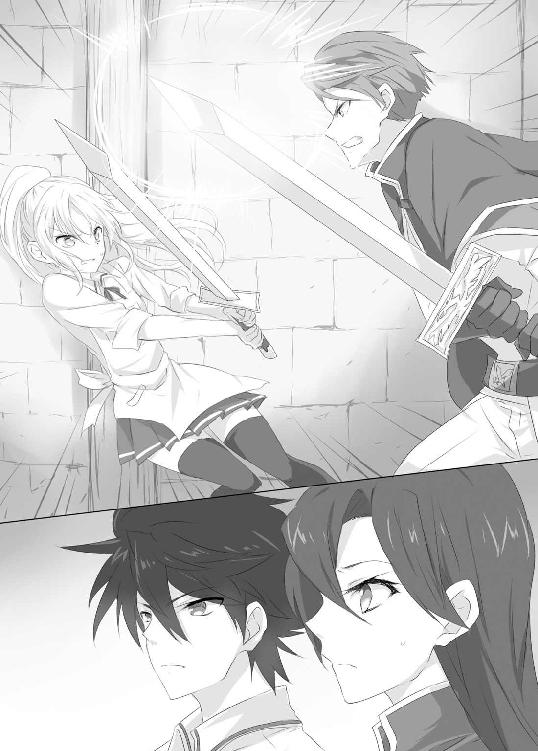
「何やってんだ？」
声にハッとして見上げると、タクトが見下ろしていた。
何やってるんだと聞かれても、答えようがない。まざまざと見せつけられた力の差。まともに剣を受ければ今のように吹き飛ばされてしまう。
剣同士を交わすことが出来れば勝ち目はある。しかし相手の剣には、触れられない。そのジレンマ。躊躇。圧倒的な力への根源的恐怖。
魔法が使えないという弱点が顕著に表れ、今まさにシェッセを苦しめていた。
「なあ、おまえの本気を見せてやったらどうだ？」
そんな状況に於いて出たタクトの言葉。
「おまえはこんなもんじゃないだろう。本気になればあれくらい、どうにでもできるはずだ」
「もう―――本気なんだ......自分の出せる力は......全部......」
「戦いは力だけでするもんじゃねえ」
「......え？」
「恐怖に一歩近づいてやることを、戦いっていうんだ。おまえはまだその一歩が踏み出せないでいる。死ぬのは怖い、傷つくのも怖い――その恐怖に近づいてやるんだ」
嬉々として戦う彼の姿からは想像もつかない発言にシェッセは思わず聞き返す。
「............タクトも、怖い？」
「ああ、怖い。だが、その恐怖をどうにかするのは、抑えつけることじゃねえ」
「......じゃあ」
「自分が感じる恐怖をちゃんと見てやることだ。そして、今までそれと向き合おうとしてきた自分を信じること。おまえの剣は何のために磨いてきたものだ？」
「ボクの剣は.........」
「使えない魔法を補うために鍛えたものを、おまえはもっと信頼してやれ」
シェッセの頭の中を、今まで自分がしてきた努力の日々が駆け巡る。
「リハエルっ！ ここで負けを認めるなら、この件は不問にする！ どうする!?」
クローディアスは肩を怒らせながら、シェッセに剣を向けた。
「............」
「おら、さっさと行け」
タクトに押し出され、シェッセは剣を構えなおす。
――自分が鍛えてきたもの。魔法の威力に怯えないために鍛えてきたもの。
シェッセは身を低くして剣を引く。
――それはスピード。誰よりも速く。相手の魔力から影響を受けるよりも速く動くこと。
「どうしても引かぬか！」
「――はい！ 引きません！」
言って、クローディアスの間合いに飛び込む。再びクローディアスの上段から振り下ろされる剣撃が、シェッセに襲いかかる。相手の動きがはっきり見え、同時に魔法という圧倒的な力が目の前に迫り、恐怖が腹の底から湧きあがってくる。
――怖い。あの圧倒的な力が怖い。
抑えつけず、目を背けず、自らの前に存在する恐怖の姿を目に焼き付ける。
――怖くて、仕方なくて......でもあの剣に勝てるように、ずっと鍛錬してきたんだ。
踏み込む。
――だから、もっと速く！
自分のスピードを信じ、相手の懐へ潜り込む。
剣撃が自分に振り下ろされるよりも早く――。
剣を振り抜かず、柄の先端をそのまま垂直にクローディアスの鳩尾めがけて突く。めり込む柄はそのままクローディアスの動きを止めた。急所をカウンターで抉られた彼の手から力が抜けていく。そして振り下ろさんとしていた剣は地面へと落下した。
静寂と緊張がその場を支配する。
「..............................」
「.....................」
「勝負あり！」
カティナの一声。止まったかに思えた空間が再び動き出すと、クローディアスはその場に膝を突く。
「この勝負、シェッセ・リハエルの勝利とする。異論はないな？」
その状況にクローディアスが率いていた隊士たちが身体を震わせる。シェッセ・リハエルという予備隊士が、隊長を倒してしまったのだ。そんな事が知れ渡れば隊の沽券にかかわる。その事実に耐えきれなくなったのだろう。一人の隊士が、口を動かし始めた。
「遍く世界を統べる源よ、魔力の加護を以って、破壊の力へと成り、我が剣に力を与え給え」
呪文の詠唱。そして隊士は腰に差した帯剣に手を伸ばすと同時に、
「戎具強化式魔力練成！」
抜き放つや、そのままシェッセ目がけて打ち下ろした。
「でいいぃぃあああああああぁぁぁっ！」
凶刃が牙をむく。
避けきれない――脳裏にそんな言葉が走った瞬間、頭上で激しく火花が散った。
「おい、こらっ。騎士の決闘ってやつはこんなんだったか？」
タクトの抜き放った鉄パイプが、刃を弾き返したのだ。
「.........タクト」
シェッセは突然のことに動くことが叶わず、目の前にそびえるタクトの背中を仰いだ。隊士は血走った目を向けタクトに言い放つ。
「決闘なものか！ なにが決闘だっ！ 認めない！ こんなもの認められるかっ！」
そのセリフを聞いた途端、タクトからニヤリと笑みが零れる。
「よっしゃあ、じゃあケンカだな！」
言うや否や、その隊士の強化された剣を、タクトの鉄パイプが振り払う。反動で隊士は弾かれるように吹き飛んだ。
「おいおい、こんなクソガキ一人で、肉屋に勝てると思ってんのか？ てめぇらも仲間なら見てないで掛かってこいよ」
タクトの挑発に、残りの隊士たちが気色ばむ。一般住民にケンカを売られたのだ。騎士である彼らが頭に来ないわけがない。
すぐさま全員がその場で武器強化魔法を剣に施すや、一斉に飛びかかってくる。
そんな光景にタクトは笑い声を高らかに上げた。
「いいいいいやっほおおおおおおおおおおおおおおぉぉぉっ！」
タクトの鉄パイプが、目の前に迫る三人を一撃で叩き伏せる。更に後ろに回った一人の腹を肘で突き、両サイドから挟みうちにしようとした一人を鉄パイプで薙ぎ払い、もう片方には拳をお見舞いする。
そこへカティナが割って入ろうとした。
「待て、これ以上の揉め事は......」
「おい、嬢ちゃん。これは揉め事じゃねえぞ」
「......なに？」
「これは世間を知らないガキに対する、教育的指導だ」
カティナと話すタクトの隙を突いて、隊士の一人が渾身の突きを繰り出した。
だが半身を引いて回避したタクトが、その剣を片手で鷲掴みにした。魔法が掛かった剣から電撃が走るように、タクトの手の中でバチバチと音を立てる。
まさか魔法で強化された剣を素手で受け止められると思わなかっただろう隊士は、その事実に目を剥いたまま立ちすくんだ。
その時、場の空気を裂くような大声が轟いた。
「もうやめろっ！ これ以上、我が隊に恥を上塗りするつもりかっ！」
意識を取り戻したクローディアスであった。彼はゆっくりと立ち上がり、タクトとシェッセに目をやる。何かを言いかけようとしたが結局それ以上は口にせず、彼は部下を引きさがらせると、重い足取りで去って行った。
※※※※
カティナ・イシュルダールは魔法で強化された剣を相手に、拳と鉄パイプで片を付けてしまったタクトに目を丸くする。この青年こそが、先日の蒼脚竜襲撃に颯爽と現れ、いとも簡単に倒していった張本人に違いない。
そんなカティナを尻目に、タクトは腰に鉄パイプを差しなおす。
「おし、配達の続きだ」
タクトは何事も無かったように、薄く煙を上げる掌をパンパンと払うと、シェッセの下へ歩いていく。
「おら、いつまで座ってんだ。配達がまだ残ってんだぞ」
タクトに見下ろされながら、シェッセはぺたんと座ったまま、眉をハの字にして恥ずかしそうに見上げた。
「......タクト......ボク......」
目を泳がせながら、言いづらそうに顔を赤くするシェッセ。
「なんだ？ 腰が抜けたのか？」
「うっ......」
仕方ないとでも言いたげなため息を吐きながら、彼はシェッセを背中に乗せ立ち上がった。
「バ、バカ！ ちょっと、なんでおんぶなんだよぉ」
「まだ配達があるって言ってんだろうが」
「だだだ、だからって、こんな......うぅ」
「こら、暴れんじゃねえ！」
「はずかしいよお！」
カティナはそんなシェッセの行動と表情を意外に思った。
自分の知っているシェッセ・リハエルの姿ではなかったからだ。いつも固く口元を強張らせて受け答えをする彼女は、そこには無かった。
たったこれだけの短期間で、彼女がこれほどまでに活き活きと輝き出したことに、カティナは僅かに戸惑う。自分を唯一負かした彼女が、さらに次のステージへ進んでいるのではないか、と思ったからだ。
あれほど頑なだった彼女の心を解放したミキハラタクトという存在。
カティナは思わず彼の背中に問いかけた。
「なあ、肉屋よ」
「ああん？」
足を止め振り向いたタクトが、めんどうくさそうな顔をする。
「おまえはそれだけの腕がありながら、王立魔法騎士団に来ようとは思わないのか？ 肉屋という立場では、その実力は宝の持ち腐れだと思わなかったのか？」
「そんなこと思わねえよ」
「何故、そこまで肉屋にこだわる？」
「じゃあ聞くけどよ、騎士ってやつは何のために戦うんだ？」
タクトの予想外の質問に、カティナは一瞬言葉を失った。
騎士は何のために戦うのか？
市民を守るため、王家を守るため、誇りのため、士道に恥じぬため......騎士の戦う理由は多岐に亘る。だから、なんのためか、と聞かれて即答できるものでは決してなかった。
「肉屋はな、食うために戦うんだよ。わかりやすいだろ」
そう言って笑うタクトの顔に、カティナは再び言葉を失った。あまりに根源的で、あまりに単純な答え。それ以上でも、それ以下でもない程にシンプルで明快な答えだった。
「嬢ちゃんは戦う理由を考えすぎだぞ。騎士団なんていう集団の中に飲み込まれていれば、そりゃ大変だろうがよ。まあ、あんま悩むなよ。毛が薄くなるぞ」
タクトに言われた言葉に、カティナは思わず痛いところを突かれた気がした。
――自分の戦う理由。
心のうちを見透かされているようだった。
そんなカティナに、シェッセが疑問を投げかけてきた。
「そう言えばカティナ様、こんな汎用口に来るなんて珍しいですね」
思わずカティナはハッとした。軽はずみな行動で自分の任務が外部に漏れる可能性を、シェッセに示唆されたからだ。
我に返りながらカティナは平静を装う。
「いまここにいるのは任務の一環だ。そこで偶然、揉め事に出くわした。ただそれだけだ」
「そうだったんですか」
訥々と言うカティナの言葉には、取りつくろうような体はない。実際、嘘はついていなかった。カティナが庁舎に来ることになったのは、任務の流れであることに変わりはない。その事実を述べただけなのだ。
「シェッセも引き続き任務を遂行してくれ」
「あ、はい。頑張ります」
まだ何かを聞きたそうなシェッセの顔色に、カティナは目を逸らした。
――まだ証拠が見つかったわけではない。彼女があれに関わっている証拠は......。
「おい、話し終わったか？ 配達の続き行くぞ」
興味なさげなタクトにシェッセは、「あ、ごめん」と素直に謝りながら、カティナに向かって頭を下げる。
「それでは任務の続きがあるので、ボクはこれで失礼します」
言葉にはキリリと気合が入っているのだが、青年の背中の上というのが今ひとつミスマッチで、思わずカティナは笑いそうになってしまう。
――やはり変わったな、シェッセ。それとも、そういう君が、本当の君だったのか......。
カティナは去っていく二人を、そっと目だけで見送った。
◇◇◇◇
裏門の近くまで来たところで、シェッセは面映ゆいあまり、タクトの背中に顔を埋める。するとふと思い出したかのようにタクトが顔を上げた。
「.........あの嬢ちゃん」
「え？ カティナ様？」
コクリと頷き返すタクトは、深刻そうに呟いた。
「あそこまで必死で俺を騎士団に入れたがるとは......ありゃ、俺に惚れたな。まあ、あの戦いぶりを見たら、致し方ないともいえる」
急に何を言いだすのか、とシェッセは目を吊り上げた。
「な、な、なんてことを!?」
「肉屋の嫁になりたいと思ってるに違いない」
「バカじゃないの！ カティナ様はそういう意味で言ったんじゃないよ！」
「肉屋の眼光は騙せないぜ」
「そんなわけないじゃないか、バカ！」
「あ、こら、てめえ......首しめんな......」
「言うに事欠いて!? タクトがカティナ様と釣り合う訳がないじゃないか」
本気なのか冗談なのか真偽は定かではない。とにかくタクトの怖いもの知らずな暴言を力でねじ伏せ、シェッセは横目に遠くを見る。
一つだけ、どうしても聞きたいことがあったのだ。
「......ねえ、タクト」
「ああん？」
急に大人しくなったシェッセは、少し迷いながら顔を上げた。
「あのね、さっき自分の剣を信じろって言ってくれたでしょ」
「............」
「どうしてそう思ったの？ 君はボクの剣を振るうところを一回しか見ていないし......」
「んなもん、一回見りゃ充分だ」
タクトはため息を吐く。
「武器ってやつは、なんのために振られているかで性格が変わっちまう。大まかなこと言えば、殺すための武器か、狩るための武器かってだけでも大違いだ――同じ武器を使っていても、そこから繰り出されるものは全く違うものになる。おまえの剣の性格は、そういう意味じゃわかりやすかったぞ」
「え？」
「誰よりも速く、なによりも速く振るう剣だ」
「...............」
「魔法が掛けられた剣に勝つには、相手よりも速く動かなきゃならねえ。一発でも受ければお終いだ。鍔迫り合いに持ち込んでも、弾き飛ばされる。だから誰よりも速く――おまえの剣は呪いに抗うための剣だ。それは俺にだって真似はできねえよ」
「.........うん」
頭を傾けるように頷くシェッセに、タクトは顔が僅かに振り向く。
「リュカだって同じようなもんなんだぞ」
「リュカが？ 僕みたいに、呪いがあるの？」
「ああ、だからだな.........」
タクトは言葉を探すように口ごもる。憎まれ口ならいくらでも出てくる彼が、いったいどんな言葉を探しているのだろうか、とシェッセは考えた。
「だから......その、おまえはだな......」
シェッセは目を細めながら、タクトの顔を覗きこもうとした。
「ねえ、タクトもしかして」
「ああん？」
「ボクのこと元気づけようとしてくれてる？」
「...............」
返答しない代わりにタクトの歩が速まった。
図星だな、とシェッセは笑いをこらえた。何やらくすぐったいような気持ちになる。タクトが自分に気を遣ってくれていることが、嬉しかったし、こそばゆくも感じたのだ。
「えへへ............その......いろいろありがとう。タクトがいなかったらボクは、騎士の誇りを守れなかったと思うんだ」
「なに言ってやがんだ。俺は世の中を知らないクソガキに......」
「君は本当に素直じゃないなあ。そういう時は素直に、どういたしまして、って言えばいいじゃないか」
「俺のどこが素直じゃないってんだ。素直だぞ、びっくり素直だから、あのクソむかつくガキ共をコテンパンにしてだな......」
「タクト」
「ああん？」
「――ありがとう」
彼はしばらく黙ったまま何か逡巡するようにしていたが、ようやく聞こえるか聞こえないかの小声で、
「........................どういたしまして」
と掠れるように言った。
いつもタクトにやりこめられているシェッセだが、今日ばかりは彼をやり込んでやったような気がした。思いのほかこの男は、こういった素直な態度が苦手なようなのだ。そのことに気がついたシェッセが、ちょっと調子に乗ってみたところで誰も責められないだろう。
「そもそも君は秘密が多すぎるんだ」
「なんだよ急に」
「魔法も使わないでドラゴンを倒せるし、さっきだって強化魔法が掛けられた剣を素手で受け止めるとか、あんなのありえないじゃないか。そんな肉屋、聞いたことないよ」
「ああ、それは......なんというか......」
「ねえねえ、なんでドラゴンを狩るの？ 普通の動物じゃ、生計が成り立たないの？」
「一度にいろいろ質問するな」
「いろいろ教えてほしいんだ」
「............」
「もっと君のことが知りたい！」
シェッセにとって、なによりも素直な思いだった。彼のことがもっと知りたい。今なら教えてくれるような気がした。こうして二人で話している今なら......。
「ああ？ なんだおまえ、その愛の告白みたいなのは？」
「なっ、なっ、なっ、なっ.........なにを！」
だがタクトの発言で形勢は一気に逆転した。まさかの反撃に、シェッセは慌てふためく。
浮いた話題には全く耐性がない。そんなシェッセに気の利いた返しができるわけがない。ただその場で固まって、アワアワするだけだった。
「ははあん、なんだ、そういうことか。シェッセ、さてはおまえも俺に惚れたな」
「バカじゃないの！ 頭おかしいんじゃないの！ どうしてそうなるの！ この猿っ！」
「白馬の竜伐騎士様より、町の肉屋か。堅実な道を選ぶようになったもんだ」
「だからなんでそういうことになるの！ あの人は関係ないじゃないか！ この猿っ！」
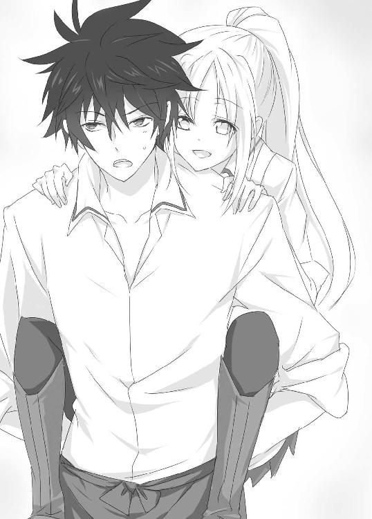
「うお、こら......首を......あとなんで......猿と二回......言った............」
ギュッ、ギュッ、と首を絞め、シェッセは顔を真っ赤にしながら考える。
――好きとか惚れたとかじゃなくて......ボクはタクトのことを何も知らないから、もっと知りたいってだけで......だってボクはタクトと一緒にいたら気を使わなくていいし、すごく元気でいられるし、なによりボクのことよくわかってくれるし。だからずっと一緒にいられたらいいなあって......だから、別に好きとかそういうわけじゃなくて......。
「なにブツブツ言ってんだ？」
「な、なにも言ってないよ！」
必死でシェッセは自分の気持ちを確かめながら、しかし確かめるほどに混乱して、何が何だかよくわからなくなりだしてしまった。
こうして話が有耶無耶になってしまったが、疑問だけはシェッセのうちでしっかりと形を成していった。魔法を一切使わず、あそこまでの強さを見せるタクト。
そしてもう一人.........。
ふと、路上に台車を止めて待っているリュカの姿が目に入ってきた。
幼いその容姿に似合わない、無表情で掴みどころのない顔色。ただこちらを動物のようにジッと見つめながら、干し肉を口に宛がいモグモグとしながら立っていた。
――ボクと同じような呪い......。
タクトとシェッセの姿を見止めたリュカは、飾りだと言っていたしっぽを僅かに揺らすと、
「......ぐぅ」
と小さくさえずるように呟いた。
第三章 竜仙華を持つ者
騎士団庁舎での騒動から、一週間以上たったある日のことである。
シェッセはだいぶ肉屋の仕事にも慣れてきた、という手ごたえを感じていた。
しかし未だリュカから、竜仙華を手に入れるには至っていない。
だいぶリュカとは打ち解けてきた実感はある。だが、そうなると今度は彼女の信頼を壊したくない、という思いが出てきて、「竜仙華をちょうだい」と気軽に言いづらくなってきた。
そんなシェッセは、朝から全力疾走でリンド中央駅の改札を潜り抜けていた。
「まってまってまって！」
ゆっくりと発車する機関車の連結部に飛び乗る。ガタンゴトンと機関車はいつもながらに、のっそり走り出してくれたおかげで、どうにか間にあった。
「間にあってない！」
そうシェッセは大遅刻をしているのである。本来なら、この一本前の機関車に乗らなければならないところだった。しかし今朝に限って、どうもベッドの中が、心地よすぎて眠りこけてしまったのである。
――タクトにまたいびられる......あの小姑肉屋......。
息を整えながら街の風景に目を向ける。
「..................」
その時、ふと自分に向けられる視線に気がつき、シェッセはその方向に注意を向けた。
――誰もいない。
先日から、ずっと向けられている視線。幾度か追い詰めようと追ったりもしたが、その度に逃げられてしまう。視線の中に殺意などは混じっていなかった。だが常に身構えていたせいか、余計に疲れてしまい、そして今朝、寝坊をしてしまうに至ったのである。
――なんのためにボクなんか......。
そう考えながら、グレン中尉に言われたことが頭をよぎる。
『竜神信仰』
まさか自分の任務が誰かにばれてしまい、竜神信仰に命を狙われているのでは？
一瞬そんな思いが頭をかすめた。しかし、それならば尾行以外に、もっと別の動きがあってもおかしくはない。そう考えると情報が漏えいしたとは思えないのだ。
いったい誰が何のために、自分を尾行しているのかわからないまま、シェッセはモヤモヤとした気持ちで日を重ねていたのだった。
いつの間にかセントウッド通りから、サウスクインティアへの通りが見えてくる。いつも同じように、ちょうどよいところで機関車から飛び降りて走り出す。この時間でもかなりの賑わいを見せる商店街を走り、シェッセは肉屋フランシーヌの扉を開けた。
「お、遅くなりました！」
「あ～、シェッセさん」
のんびりとした口調のクーミェが笑顔で迎えてくれる。しかしまだ気は抜けない。どこからタクトの横暴で、いやらしい小姑な文句が飛んでくるかと身構える。
しかし一向に待てど、タクトの嫌がらせは始まらない。
「あ～、タクトさんですね」
「え、うん」
「二日酔いで寝てます」
「え？」
にこにこと答えるクーミェ。
シェッセは荒く肩で呼吸をしながら、目を丸くして固まった。
タクトに何があったのか気になったシェッセは、それとなしにクーミェに昨日の事を聞いてみた。クーミェの話を聞くところによると......。
「このまえ捕まえた蒼脚竜の肉が高値で取引されたんです。それでタクトさんにも歩合賃金を支払ったんですけどね......」
それをいいことに、リュカにお菓子を買い与えたあと、タクトはキャバクラを一人ではしご。そしてべろべろに酔っ払い、路上で倒れていたそうだ。
「いいんですよ。タクトさん、モテませんから。お金払わなけりゃ、女の子と話しもできませんから。ふふふ......」
と語るクーミェの目が真っ黒で、シェッセはちょっと怖かった。
「その後タクトさん、深夜の路上で気を取りもどして、商店街のクリスさんのバーへ行って更に飲んでいたらしいんです。いいですよね、クリスさん。出るとこ出てて、引っ込むとこ引っ込んでて......大人の女性って感じですよね。タクトさん、ほんとにタクトさん、ほんとにタクトさんですよね.........」
最後はなにを言っているのか解らなかったが、包丁を持つクーミェが怖かったので、話もそこそこにシェッセはタクトの家に急行したのだった。
タクトの家に着くと、彼はベッドの上で真っ青な顔をしながら、うんうん唸っていた。
「.........走って損した」
全力疾走した上に、怒られる覚悟をして身構えていたのだ。そんなわけで、なんだか倍疲れた気持ちになった。
さて、タクトがこの状態ではどうしようもない。シェッセはしばらく、この空いてしまった時間を、どう有効に使うべきか考えた。
もちろん任務を最優先に考えるのなら、リュカと仲良くなるべきである。しかし無理に追っかけると、リュカは逃げてしまう。リュカとは昼食などの時に仲良くなっていこう、と考え他の有効的な時間の使い道を考える。
――ここは魔法の練習をしておこう！
魔法が使えない呪いに掛かっていることは承知の上で、それでも可能性を捨て切れず、鍛錬せずにはいられない。苦労症が身についているシェッセは、いつも隠れて魔法の練習を繰り返してきたのだ。
リビングに戻ったシェッセは一人剣を抜く。剣に意識を集中させ、呪文を詠唱していく。
「............」
しかし帯剣はおろか、自らの身体にも一切の変化が起こらない。
シェッセはため息を吐きながら、帯剣を鞘に納めた。その時ふと、部屋の隅っこに気配を感じて振りかえると、
「......ぐぅ」
リュカがリビングの入り口から、こちらを覗いていた。
「なんだリュカか。どうしたの？」
「..................」
問いかけられたリュカは、しばらく物陰で迷うようにモジモジとしていた。
そして再びシェッセを見ると、何も言わずちょこちょこと歩いてくる。そしてジッとシェッセの顔を見上げた。なんだろうか、と思っているとクルリとリュカは半回転し背を向ける。
「だっこ」
「??」
これはどういうことだろう？ まさかリュカが、シェッセに甘えて来たとでもいうのか。
それはちょっと違うかな、と思いながらも、リュカからの積極的な態度である。
もしかしたら、自分の周りにあるピリピリとした空気が、少しは消えたのかもしれない。リュカと仲良くなれるチャンスなのでは、という希望がシェッセの胸を過る。
シェッセは言われた通り、リュカの小さな身体を持ちあげた。クルンと小さく丸まりながら抱っこされたリュカは、器用にシェッセの腰に差された帯剣を引き抜くと、
「じゅもん」
と振りかえって言った。
「え？」
「じゅもん......となえて」
リュカがなにをしようとしているのかわからない。それでもシェッセは彼女に言われた通り武器強化魔法の呪文を詠唱していく。
「遍く世界を統べる源よ、魔力の加護を以って、破壊の力へと成り、我が剣に力を与え給え」
呪文により周りにある魔力元素は、シェッセの身体を通しリュカへと伝わっていく。
するとどうしたことだろう。リュカの持つ剣に光が集まっていき、魔力が変換され破壊力へと練成されていく。
リュカを通して魔力の流れと変化が、シェッセの身体にも伝わってきた。
シェッセが全ての呪文を唱え終えると、そこには完璧な武器強化魔法が出来上がっていたのである。
「すごい......どうして」
思わず感嘆を漏らすシェッセに、リュカは口の中でモゴモゴと呟く。
「れんせいした......しぇっせのまりょくで......」
言葉足らずを口惜しそうにリュカは目を泳がし、シェッセの腕からポンッと跳ぶ。そして帯剣を渡し、そのまま奥の部屋へ入って行ってしまった。
しばしポカンとしていたシェッセであったが、ふとリュカが魔法の練習を手伝ってくれたのだろうか、と思った。
無表情であまりしゃべらない娘だな、とは思っていたが、別に自分を嫌っているわけではなさそうだ。そう思うと、シェッセは少し嬉しくなる。
「リュカ、ありがとう！」
彼女が消えて行った扉に向かってそう言うと、しばらくしてから小さな声で、
「......ぐぅ」
と聞こえた。自分の詠唱した呪文で魔力が練成される、という感覚はひどく嬉しくて、シェッセはにこにこしながら、リビングに引き返そうとした。と、その時......。
「......おい」
「うああああっ！」
「.........叫ぶんじゃねえ。頭に響く」
タクトであった。真っ青な顔で虚ろな目をしながら、壁に寄り掛かっている。
「すまん、二日酔いの薬を買ってきてほしいんだが......」
あまりに苦しそうな様子に、シェッセはいつもいびられていることなど忘れて、手を貸してしまう。
「わ、わかったよ。とりあえずベッドに戻ろう」
なんとか階段を上らせ、タクトの部屋まで連れて行き、布団をかけてやる。
さて、二日酔いの薬といっても、シェッセはこの辺の薬屋の位置を知らない。どうするべきか考えながらタクトの部屋を出る。すると階下の陰から、またもリュカがこっちを覗いていた。
「あ、そうだ」
「......？」
シェッセがそう言うと、リュカは不思議そうな顔で首を横に傾けた。
シェッセは先導するリュカの背を追う。
先ほどこちらを見ていたリュカに、薬屋の場所を知っているか聞いてみると彼女はコクンと頷き、場所を教えてくれと頼むと、またコクンと頷いて歩き出したのである。
いつもシェッセが通ってくる道を逆走する形で、商店街から石段を降り、広場までやってくる。
「おう、リュカ。お使いかい？」
「ぐう」
声をかけて来たのは、露店にお菓子を並べる中年男性だった。
「あ、どうも」
シェッセもなんとなく挨拶をすると、中年の男性はにこやかに笑いながら会釈をする。
「フランシーヌで働きだしたっていうお嬢さんだね。ヘドリックだ。よろしく」
気さくに握手を交わしながら、ヘドリックは店先の飴細工を一つ手に取ると、リュカに手渡した。
「............」
何も言わずにジッとしているリュカに、思わずシェッセの方が財布を取り出し、
「あ、ありがとうございます」
とお礼を言いながら、小銭を取り出そうとする。
「いや、いいんだよ。あそこにゃ世話になってるから」
「え、ああ、そうなんですか」
「ほれ、お使いの続きだろう」
ヘドリックはリュカを促すよう笑いかける。リュカは下を向きながら、
「......ありがと」
と言うや足早に歩き出した。シェッセはもう一度ヘドリックに頭を下げ、リュカの背を追うことにした。
なんだかんだ人見知りなリュカだが、ちゃんとお礼の言える娘だとわかり、妙に誇らしい気持ちになってしまう。
にこにこしながらリュカの背を追いかけ小道に入っていく。すると板きれに走り書きのような字で、『くすり』と書かれた看板を掲げる薬局に辿り着いた。どこか薄暗い印象があるが、それは北側に店先があるからだ。書店と薬屋の常で、日差しを避けてのことである。
扉を潜ると更に薄暗い店内に、老眼鏡をかけた白髪の老人が出迎えてくれる。シェッセが手短に注文の品を言うと、老人は奥へ入っていき薬の調合を始めた。
待っている間、リュカの様子を見ると椅子に腰かけ、足をぶらぶらさせながら、いつもの干し肉をもぐもぐさせていた。
せっかく先ほど仲良くなれたのだし、もう少し会話があるかな、とシェッセは期待した。だが、思いのほかリュカは無口な様子。
痺れを切らして、シェッセの方から話しかけることにした。
「ねえ、リュカ」
「？」
ぼんやりと見つめ返すリュカにシェッセは笑いかけるでもなく、ただ素直に問いかけた。
「ボク、まだ怖いかな？」
リュカはちょっと考えるように口をポカンと開けたが、すぐに首を横にふるふるとさせた。
なんだかその姿が愛らしかったので、シェッセは薄く微笑む。
任務としては、いち早く蒼脚竜の竜仙華を持って帰らねばならない。しかし今のシェッセにとっては、そのためにリュカの心を開こうという気持ちは無かった。
ただ単純にリュカが示してくれた反応が、嬉しいと感じていた。
「ありがとう、リュカ」
素直な気持ちで思ったことを告げると、リュカは俯きながら、何か考えるように足元を見つめた。会話は途切れてしまったが、気まずい間ではない。
シェッセがそんなリュカの横顔を覗いていると、再び彼女は顔を起こした。
「しぇっせ......」
「なに？」
「あの......ね.........」
リュカは迷うように目を泳がせながら、いつも被り続けてきた帽子をそっと取る。
「............」
困ったような顔をしながら帽子を取ったリュカの頭には、ちょこんと二つの耳が並んでいた。それは人の耳ではなく、犬の耳であった。
シェッセは驚き言葉を失った。リュカの名前を聞いた時から、別の文化圏の人間であるとは思っていた。しかし彼女は文化圏が違うのではなく、種族が違ったのだ。
この世界には人間以外の種族が数多く存在し、独自の文化を築き、時として人間とも交わることもある。リュカもそういった別種族の一人だったのだ。
「りゅかの......ひみつ」
無表情な彼女は、時折その耳をピクリと動かしたりする。まるでシェッセの反応を待っているようだった。
シェッセはどんな言葉を発するべきか考えた。だが、それよりもどうしても我慢しきれない衝動がこみあげてきてしまった。
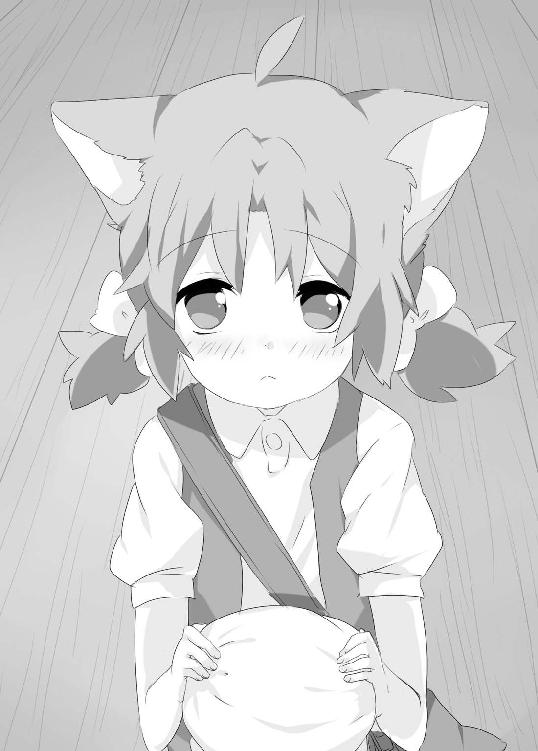
「あの..................さ、さわってもいい？」
その柔らかな毛に覆われた耳に、思わず紅潮しながら目をキラキラさせてしまう。
実はシェッセは、こういった柔らかそうなものが大好きなのである。
リュカはちょっと迷ったようだが、シェッセの目を見てコクリと頷く。
「で......では.........」
ふさふさふさふさふさ............ふさふさふさふさふさふさふさふさふさふさふさ.........。
「......ぉぉぉおおおおおお！」
シェッセはそのさわり心地に感嘆の声を上げた。
ふさふさふさふさふさふさふさふさふさふさふさふさふさふさふさふさふさふさ.........。
あまりの柔らかさに、手を止めることができないシェッセ。
リュカは、くすぐったそうに身をよじって顔を赤らめる。その姿に何やら背徳感が込み上げてきて、それ以上するのはやめておくことにした。
「.........ありがとうリュカ。すごく、素敵だと思う。それ」
「.........ぐぅ」
お互い目を逸らしながら赤面してしまった。
子犬の毛のような柔らかなさわり心地とリュカの反応に、シェッセはやや興奮気味になりつつある自分を律する。
おかしな方向に行きそうだった我をなんとか取り戻し、そこでふと或ることに気がついた。
リュカの種族についてだ。
「ねえ、リュカってもしかして......クク族なの？」
リュカはなにも言わず、ただコクンと頷いた。
思わぬところで、伝説と言っても過言ではないクク族に出会ってしまった。その事実に、シェッセは驚きを隠せない。
竜伐騎士になりたいと思う者なら、この一族のことは知っていて当然であった。古来からドラゴンを狩り、一ヶ所に留まらずあちこちを転々とする民族。ドラゴンを狩る智恵に長け、竜伐騎士を凌ぐほどに、ドラゴンへの対抗策を有すると言われている。
しかし彼らは、人目につくことをしようとはしない。
それは単に、彼らをよく思わない者もいるからである。
例えば竜神信仰。竜を神とあがめる彼ら地下組織にとっては、クク族は目の仇なのである。にもかかわらず、地下にはどれだけ竜神信仰の人間が眠っているか、王立魔法騎士団ですら全容をつかめていない。だからこそリュカは耳を隠していたのだろう。
信頼する者にしか明かすことのできない秘密。
初対面の時、リュカがシェッセを怖がった理由が、ようやくわかった気がした。
同時にリュカが教えてくれた秘密の重さに、シェッセは深く息を吸った。
そして冷静さを取り戻しながら、ふとリュカの秘密に疑問が湧く。
「ねえ、リュカのその耳のこと、タクトは知ってるんだよね」
小さく頷くリュカ。
「クーミェとかも？」
「......きんじょのひとは......しってる」
なるほどと思いながら、シェッセはそんな一員に入れてもらえたことが嬉しかった。
そんな中、奥から薬屋の店主が戻ってくる。リュカは急いで帽子を被ると、いつも通りの無表情に戻る。店主はどうしたのかと、不思議そうな顔をした。
その後シェッセは薬屋を出てリュカと共に来た道を引き返していく。天気がよく、昼時にはまだ少し時間のある商店街は、行きかう人もまばらで歩くだけならちょうどいい。
そんな二人がちょうどバーの前に差しかかった時である。
「あらら、仕事は？」
昨日酔っ払いのタクトの相手をしたクリスが声をかけて来た。
「タクトが二日酔いで」
「あははは、そっかー。そんで薬買いにいかされたんだ」
シェッセの手に持った袋を見て、クリスは大まかな経緯を察したようである。
「昨日は結構飲んでたからね、タクトは」
クリスは笑いながら窓から出した顔を引っ込めると、扉を開けて店前に出て来た。
「なんか飲んでくかい？」
「あ、いや、ボクはお酒は......」
「バーだからって、お酒しか置いてないわけじゃないんだよ」
どうしようか迷うシェッセだったが、リュカの方はお構いなしに中へとスタコラ入っていってしまう。
「シェッセはレモネードだよね」
以前に来た時にもシェッセはそれを注文した。お客さんが一度注文したものを、クリスは全て憶えているらしい。さすがにプロだな、とシェッセは舌を巻いた。
一瞬薬の袋に目を移すとタクトの顔が浮かんだが、あれは自業自得だと考えなおし、レモネードをいただくことにした。中に入ると既にカウンターに腰をかけたリュカが手をグーにして、配列された酒瓶をジッと見ている。
「リュカはミルクでしょ」
「ぐう」
クリスはニコリと笑って、グラスにミルクとレモネードを注ぎ出してくれる。
「どう？ バイトは慣れてきた？」
「ええ、まあ」
慣れてしまってはいけないのだけれど......と思いながらもそれは言わず、グラスで口を塞いでおく。クリスはグラスを拭きながら、ランチメニューの煮物の様子を見たりしている。
せっかくこうしてリュカとゆっくり話せるのだから、シェッセとしては先ほどの続きを、いろいろ話してみたいと思った。
「ねえ、リュカはなんでタクトと一緒にいるの？」
リュカはポカンとシェッセを見つめ、しばらく考えてから顔を上げた。
「......おにく......くれるから」
シェッセの頭の中でハテナマークが浮かぶ。
――それがタクトと一緒にいる理由？
今リュカが口にしている干し肉のことだろうか。そもそも肉を与えてくれるから一緒にいる、というのはどういうことだろう。食事に釣られて......ということなのか。
「それだけ？」
リュカはコクンと頷き、
「あの......ね。りゅか、くくぞくだから............たくとに......めいわくかけてるの」
苦しそうに言葉を紡いでいく。
「......ひみつだから。でも、それはたくとの、あし......ひっぱって......いる......から」
ぽつりぽつりと呟きながら、申し訳なさそうに目を伏せる。そんな彼女を見ていてシェッセは、ふと以前タクトが言っていたことを思い出した。
「それは......もしかして、リュカの呪いに関係ある？」
呪い、という言葉にリュカは大きく反応した。
「......しってるの？」
「ううん。全部は知らない。でも、リュカがそれに苦しんでいるってことは知っている。タクトが教えてくれたんだ。リュカの呪いは、ボクの呪いと同じような物なんだって」
「......しぇっせの......のろい？」
「......うん」
「まほうが......つかえないこと？」
「そう。だからね......」
リュカの心を少しでも軽くしたかった。しかし、そのために上辺だけ取りつくろうような言葉を発したわけではない。不思議な程に、自然とシェッセの口をついて出てくるのだ。
「......だからね、タクトはリュカの事、迷惑だなんて思ってないよ」
リュカはそれがどういう意味なのか解らない、という様子でシェッセを見た。
「タクトはバカだし、人使いが荒いし、適当だし......だけど、そこに苦しんでいる人がいたら、放っておくようなことはしない。どんな小さなことでも」
騎士団庁舎の出来事が胸を過る。
――ちがう、もっと前から。ボクが来た、あの時だって......。
「タクトは、いつだってリュカのこと助けようとしてる」
「......しぇっせ」
驚きながら見上げるリュカに、シェッセは優しく微笑み返す。
「リュカのこと大切にしてるもん。見てればわかるよ。あいつは捻くれたやり方しかできないけど、ちゃんといつもリュカのこと見てる」
リュカの中にある呪いがどんなものかはわからない。
それでも確かな事がある。
タクトが周りの人間を、本当はとても大切にしている、ということ。
周りの人間のことを常にわかろうとしている。自分以上に彼はシェッセ・リハエルという人間を知っている。そしてきっとリュカのことも。
「だからタクトがリュカを迷惑だと思っているなんて絶対にない」
シェッセの言葉に、リュカはしばらくじっと構えるようにしていた。
それでも先ほどまでの、苦しさを訴えるような頑なな表情はしていない。ただぼんやりとしながら、シェッセの言葉を噛み砕くようにジッとしていた。
「......しぇっせ」
「うん」
「ありがと」
そういってリュカは、八重歯を見せて薄く笑った。
飲み物を飲み終えて一息ついてからシェッセとリュカは、クリスのバーを出る。
機嫌良くクリスは窓から顔を出して手を振るので、シェッセも笑顔で返した。
商店街を歩きながら、ふとリュカが立ち止まる。どうしたのかと思いシェッセが見ると、リュカは肩掛けカバンの中をゴソゴソと探っているようである。
そして徐に中から一つの薄青い色をした石のようなものを取り出すと、シェッセに向かって掲げてみせた。
蒼脚竜の竜仙華である。
リュカがどうして今これを出してきたのか、一瞬見当がつかずシェッセは目を丸くした。
「......これ、あげる」
シェッセの手を取り、その掌の中にリュカは蒼脚竜の竜仙華をそっと置く。
思ってもいなかったところで、任務を達成してしまった。シェッセは思考が追い付かず、その場に立ち尽くしてしまう。
「しぇっせ......ほしかったんだよね？」
「え......うん」
もちろんではあった。だが同時にこれが任務の終わりである、という実感がわいてくる。
その実感は達成感のような喜びではなかった。
――もう帰らなくちゃいけないんだ。
任務が終了し、この肉屋での生活はこれでおしまいである。その事実がシェッセの心にひどく重くのしかかる。
今まで通り、騎士団庁舎に戻り、雑用をこなし、間に剣と魔法の修練をする生活。
――ボクには目的がある。竜伐騎士になるんだ。だから......。
だから――の先は思いつかなかった。それとも考えたくない、と思ったのかシェッセにはわからない。ただそれ以上の言葉を呑みこんで、リュカに笑いかけた。
「ありがとう、リュカ」
しかしリュカは変化に乏しい表情の中に、少し寂しさを漂わせながら「ぐぅ」と呟いた。
タクトの家の前まで来たところで、シェッセ達は突然クーミェと出くわした。正確に言うならばクーミェに後ろを取られていた。全く気配をさせずにシェッセとリュカの背後に忍び寄ってきたクーミェは高らかに、「ひぇええい！」と奇声を上げた。
「取りましたよ！ リュカちゃんの背後を遂に取りましたよ！」
驚きシェッセが振りかえると、鼻息の荒いクーミェがリュカを羽交い締めにしていた。
「可愛いですね、リュカちゃん。食べちゃいたいですね。むふー」
「......ぐぅ......クーミェ......やー！」
ジタバタもがくリュカだったが、クーミェの固め技は意外にも堅牢であった。
「はむはむしていいですか？ リュカちゃんの耳をはむはむしていいですか？」
「やー」
「じゃあ、とっとこしていいですか？」
とっとこする、というのはどういうことだろうとシェッセは疑問に思うが、もはや聞ける状態ではない。
「それもやー」
とっとこでもハムハムでもリュカは嫌だったようで、クーミェの腕にガブリと噛みつき、するりと腕から逃れる。
「ギャルバっ！ 噛みましたね！ リュカちゃん、私の腕に齧り付きましたねっ！」
「......ぐぅ、ごめん」
勢いあまったとはいえ、リュカはしゅんとして申し訳なさそうに首をすくめる。
「いいんですよ。噛んだ部分をペロペロしたら間接キスですよ」
「いやー、クーミェこわいっ！」
リュカは泣きそうになりながら、脱兎のごとく逃げ出してしまった。
「待って下さい！ リュカちゃん、ほら、ペロペロ！」
それを追いかけ、クーミェもすぐさま見えなくなってしまう。取り残されたシェッセは只々、次々に露見するクーミェの奇行にドン引きするしかなかった。
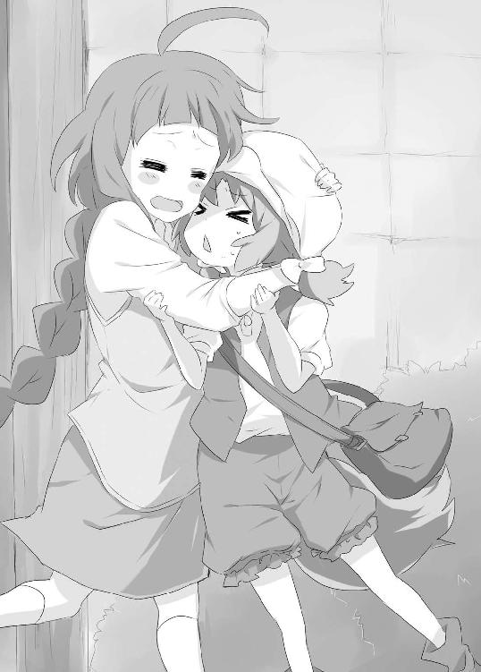
――もう少しまともな人だと思ったんだけどな......。
あり余るクーミェの従業員への愛の深さに、シェッセは複雑な気持ちになった。
そうして取り残されてしまい、ぼんやり立ちつくしていた――その時である。
「............!?」
ふとこちらに向けられる視線。
自分を尾行している人間ではと思い、振り向きざまに視線の方向を見定めると、
「...............」
真っ青なタクトが、二階の窓からこちらを見下ろしていた。寄り道した上に、すっかり二日酔いの薬のことが念頭から抜けていたことに、シェッセはここで初めて気がついた。
「あ、ごめんタクト。今薬を......」
言いかけるシェッセの頭上で、タクトの顔が秒単位で真っ青に変化していく。
「......うっ......やばい」
「待って待って待って！ 今薬をもってくから！」
「.........ダメ......間にあわ.........」
「うああああああああああああああああああああああああああああっ！」
薬を飲んだタクトは、落ち着いた様子を取り戻し、ベッドで横になって目を瞑っている。
シェッセは大きくため息を吐きながら、水をベッドの隣にある小机に置いた。タクトが、いつ起きても飲めるようにである。
先ほどの二階から降り注ぐ大惨事に関しては、シェッセの瞬発力とスピードが功を奏しどうにか難を逃れることはできた。だが、それからが大変だった。
すぐに二階に上がって、窓枠にダラリと半身を預けるタクトをベッドまで運んで、薬を飲ませ、急いで外に戻って、吐しゃ物を片付け、再び上に戻り、もう一度タクトに薬を飲ませ......と大忙しで、ようやく一息ついた次第である。
今までの生活で、シェッセはそんなことを試みたことがない。
名門リハエル家だからといって、手取り足とり周りがシェッセの世話をやくようなことはなかった。自分のことは自分で――というのが家の教えであったため、シェッセ自身かなり細かな事まで人に頼らずできる人間ではある。
しかし酔っ払いの世話は、さすがに今までなかった経験であった。
――これは必要な経験だったのかな？
複雑な気分である。
そんなことを考えながら、タクトの寝顔をぼんやり見つめていた。昼の暖かな陽気のせいもあってか、いつの間にか椅子の上でうとうとしてしまう。
ふと気がついて時計を見ると、二時間ほど眠りこけていたようだ。意識がはっきりしてきたところでベッドを見ると、いつの間にか床の中は空になっている。
「......あれ、タクト？」
部屋の中を見渡すが誰もいない。
立ち上がったシェッセは、オロオロとしながら辺りに目を配る。
いつも全体的に騒がしいせいか、静けさが余計に際立ちシェッセをより不安にさせた。
まだ夢の中なのか、それとも覚醒しているのかがわからなくなる。
「タクトぉ......」
「なに泣いてんだ？」
「!!」
急にドアを開けて入ってきたタクトに、飛びあがらんばかりにびっくりしながら、シェッセは口元をわななかせる。
「な、泣いてないよ！」
「涙目じゃねえか」
「ちちち、違うよ！」
「へろへろになりながら、タクトぉ......って呼んでただろうが」
タクトのいつもの、人を小馬鹿にするようなニンマリとした笑み。思わずシェッセは口をへの字にしてまくしたてた。
「呼んでないよ！ この恩知らず！ バカ！」
「おう、ありがとな。おかげですっかり酒が抜けたわ」
不意をついて素直にお礼を言われてしまうと、シェッセも返すに返せない。もっと何か言ってやろうと思っていたのに、言葉が出てこなくなってしまう。ようやく出てきた言葉といえば、
「......うん。どう......いたしまして」
といったところで、シェッセはそのままモジモジしてしまった。
一方タクトは壁に掛かる上着に袖を通し、出かける用意をし始めた。
「おい、お礼ついでだ。外へ飯食いに行こう」
「え？」
「まだ食ってないだろ」
「あ......うん」
言われてみると、シェッセも急に空腹を感じた。もうお昼時はとうに過ぎてしまっている。
「なんか食いたいもんあるか？ 俺、軽いもんがいいんだけど」
「なんでもいいよ。ボクこの辺りのことまだそんなに詳しくないし......」
「ん、そうか」
タクトは用意を済ませると、財布を持って玄関に向かうので、シェッセもその後を追った。
――あれ......こういう男女で出掛けるのって......なんだったっけ......。
そんなことを考えながら、タクトの横を歩くシェッセ。ちょうどクリスのバーの近くに差しかかると、ランチタイムを終えたばかりなのか、彼女は表の黒板のメニューを書き替えているところだった。
「あら、もう二日酔いはいいの」
「ああ、おかげさんでな」
「なら飲んできなよ」
「いや、それはいい......今は考えるだけでも戻ってきそうだ」
そんな会話をしながら、隣にいるシェッセにクリスが気づき、ニヤリとした。
「あらら、なに。今度はタクトとデート？」
「え！ なっ!?」
クリスに言われ、ようやくシェッセは先ほどまで考えていた言葉の答えに行きつく。行きついた結果、血圧が一気に上昇してしまった。
なにしろシェッセの人生にとって初めての、男性と二人でお出掛けなのである。
「あ、ああ、いや、これは......」
真っ赤になりながら、何を言っていいのかわからないシェッセは手をバタバタと振る。
「ち、違うんです！ そういうんじゃなくて、その、ご飯食べに行くだけですから」
「二人ででしょ？」
「そ、そうですけど」
「それってデートじゃないの？」
「あわわわわ」
クリスの言葉に、なんと言い訳をしていいのか分からなくなってしまう。恥ずかしさのあまり、俯いてつま先を見た。クリスはそんなシェッセを横目に見ながらニヤニヤする。
「ウブいわ。ぞくぞくするほどウブい反応だわ。いいわあ、お姉さん若返りそうだわあ」
もう、からかわれているのか何なのか解らなくなりながら、顔を赤面させるシェッセ。
「ほら、行くぞ」
対してタクトはなにも気にしていないのか、スタコラ先を行ってしまう。
楽しそうに手を振っているクリスと、サッサと行ってしまうタクトを交互に見ながら、シェッセは急いで彼の背を追った。
二人は路地を抜け、そのままセントウッド通りまで赴く。
「なあ、ちょっと買い物してっていいか？」
「え、うん。いいよ」
突然タクトに言われて、まだ火照る顔を俯かせながら、彼の買い物とはなにか考えてみた。
正直なところ全く想像がつかなかった。どんな店に入るのかちょっと気になる。
そんなタクトの横を歩いてしばらく行くと、セントウッド通りに店を構える一軒の商店の前に出た。中に入ると壁一面に掛けられた刀剣類。樽の中に突き立てられた槌や鉾、その他にも見たことのない武具が並べたてられていた。
「わあ」
その壮観な眺めにシェッセは感嘆を漏らす。
これほどまでに多種多様の武具は見たことがない。中にはどのように使っていいのか、わからない物まである。
その中で一際大きく、存在感を放つ片刃の剣が壁に掛かっていた。
ふと戦場で見たタクトの武器を思いだす。人が持つには巨大過ぎる片刃の剣。
「ねえ、タクト」
「なんだ？」
「この前、蒼脚竜と戦った時の剣って......」
「ああ、種類はこれと一緒だ。ここに飾ってあるのが『斬霞』。俺が使ってるのは『箔羅』。切れ味は俺の箔羅の方がいいが、強度はこっちの斬霞の方が高い。これも出来れば欲しいんだけどなあ......」
斬霞という刀剣を見つめるタクトの目が妙にキラキラしている。
「種類は刀になるんだが、普通の刀は対人間用だ。それに対して『箔羅』や『斬霞』は対巨大生物用に造られている。物がでかいだけに造るのが難しいから、出荷される量も少ないし、値段も跳ね上がる。しかし肉屋としては必要だから、買わざるを得ないよな」
いつにないタクトの流暢な口ぶり。やや興奮気味に語る拳にも、力が入っているように見える。そういえば、最初に会った時もタクトは刃物を磨いていた。走竜の時には尋常とは思えない量の武器が懐からゴロゴロ飛び出してきた。
「ねえ、もしかして......」
「なんだ？」
「タクトって、武器オタク？」
「なっ!? なにを言ってるんだ！」
取りみだしている様子を見るに、確信が胸をよぎる。
「......そうなんだ」
「違う！ 武器マニアだ！ オタクじゃない！」
どう違うのかあまりよくわからないが、タクトが武器に愛着があることだけは、はっきりとわかった。
「意外な趣味だなあ。まあ、蒼脚竜の時も見たことのない武器だな、とは思ったけど」
「実は他にもいろいろあるんだぞ......」
タクトもタクトで、すごく語りたくて仕方がない様子である。
――へへ、今度ゆっくりタクトの武器談義でも聞こう。
笑いながらそう思ったシェッセは、そこであることに気がつく。
――あ......そうか。今度はもうないんだ......。
既に自分は任務を終えたのだ。すぐにでも戻って、この竜仙華をグレン中尉に受け渡さないといけない。
なのにこんなにも後ろ髪を引かれるような気持ちになるのは何故だろう。心のうちに芽生える感覚に、シェッセはどうしようもない気持ちになる。
「どうしたシェッセ？」
タクトが不思議そうな顔をするので、シェッセは取りつくろうように笑って見せた。
「ううん、なんでもないんだ。ほら、早く買い物済ませなよ。ボクお腹すいちゃったよ」
「............」
そんな様子が気になったのか、タクトはシェッセの目を覗きこむ。心のうちを見透かされているような気がしてしまう。シェッセはクルリと目先を別の棚の方向に変えて、商品を物色している体を装った。
しばらくすると、会計を終えたタクトがやってきた。
「おう、待たせたな。いくぞ」
「うん......何買ったの？」
それほど大きいとは言えない紙袋から、二本の木の棒が飛び出している。
「針金槌だ」
「金槌？」
「土木作業とかによく使われるもんだから、武器とは言えねえかな。固い岩とかに針金槌の先を思いっきり突き立てると、爆発して岩とかを粉砕してくれるって代物だ。意外と狩りの時に役に立つ」
「へえ」
色々あるんだなと、シェッセは感心した。王立魔法騎士団の戦い方は、魔法に頼る所が大きい。それ故に、魔力の量、練成の精度が勝敗を分かつ。
しかしタクトの戦い方には、いや狩りの仕方には魔法という考え方は最初からない。
地の利を生かし、武器を使い分ける。それはシェッセのような魔法騎士にはない考えである。剣の技術と魔法の力量。それが魔法騎士の考え方なのだ。
シェッセにとってはそんな話が普通にタクトの口から出るたびに、目が覚めるような思いをしていた。鉄パイプでも、縄でも、素手でさえも、それらは戦いに於いて、有効に機能する道具となる。剣だけに囚われていたシェッセには、そんな当たり前のことが、ひどく新鮮に映ったのだ。
武器商店を出るとそのまま、屋台が立ち並ぶ通りを歩いていく。
おいしそうな香りが漂ってきているはずなのに、今日ばかりはシェッセも、そんなことに気を回すことができない。任務を達成し、もう帰らねばならない。そんな事実がシェッセの中にどんどん広がっていき、その思いをうまく消化しきれない。自分がどうしたいのか答えに辿り着くことができない。
それ故、ただ蟠りだけが身体の中を占めていき、思考は停止してしまう。
俯いたまま言葉も無く歩いていたせいか、周りに注意を払う程の余裕はなくなっていた。
だから前を歩くタクトが足を止めたのにも気がつかず、その背中に頭をゴツンとぶつけてしまう。シェッセは目を丸くしながら、慌てて顔を上げた。
「うぐっ......どうしたの急に」
見ると、タクトは小物を売る露店の前で立ち止まっていた。
お土産物の小さな民族人形や、ガラス細工のペンダント、色とりどりのリボンに特殊な織り方の布などが店先に並べられている。
その中からタクトは、ピンク色のリボンをシュルシュルっと引きのばして、店員に程良いところで切ってくれるように頼む。店員はニコリとしながら丁寧にカットしてくれた。そのままタクトは会計を済ませると、シェッセに向き直った。
「ほら、おまえにやる」
「え？」
「いらないのか？ この前、おまえ物欲しそうに商店のリボン見てなかったか？」
「べ、べつに、物欲しそうになんて......」
この間とは、おそらく王立魔法騎士団庁舎へ配達に行く途中のこと。あの時シェッセはごまかしたつもりだったが、やはりタクトはしっかり見ていたのだろう。
「まあ、バイト代だ。今日までお疲れさん」
「............」
手渡されたリボンを見つめ、ああ彼には何も隠せないんだな、と思った。
いつもと様子の違うシェッセを見て、もうこの肉屋を去らねばならない事を察したのだろう。なにも言えずにいたシェッセに、タクトは眉をひそめる。
「なんだ、カメムシの方がよかったのか？」
「そんなわけないでしょ！」
真面目にそんなことをいう。思わずシェッセは彼の背中にパンチを入れた。
しかしそれもタクトの手なのだとすぐに気がつく。
気を使わせないように軽口を叩いて相手を挑発して......。
――本当に素直じゃない。
でもそれは自分も同じか、とシェッセは反省しながら、
「......ありがと」
と小さく言った。
タクトは軽く手をひらひらさせて、そのまま近くの屋台に入っていってしまった。
せっかく買ってもらったリボンだ。付けるかどうか迷ったが、いまこの瞬間付けなかったら、たぶん一生リボンを身につける勇気はわかない、と思った。
――これでいいかな。
蝶々結びにしてみたつもりだが、うまく結べた自信がない。何度もリボンを触って、左右のバランスを直してみたり。
「うん......うん、おかしく......ない......よね」
自分を鼓舞するように語りかけてみるが、まだ自信はあまりない。
それでもシェッセは、タクトが消えていった屋台の暖簾を潜って彼の隣の席に着いた。
「...............」
席に座ってカウンターテーブルをジッと見つめる。タクトはこのリボンのことをどう思うだろうか。
そんなシェッセをタクトは横目に見ると、
「おう、よく似合ってるぞ」
となんの気なしに笑いながら言う。
シェッセは嬉しさと気恥しさで、顔を真っ赤にしながら下を向いてしまう。
――ボ、ボクはこんなものでチャラチャラと気飾ったりしている暇はないわけで......。
自分に必死で言い訳してみる。だが、それよりも初めて付けた装飾品に高鳴る気持ちと、褒められた嬉しさの方が大きくて、やはりオロオロしてしまう。
そんなシェッセを差し置いて、屋台の主人は固めに焼いたライ麦パンに、野菜や牛肉を挟んだサンドイッチのようなものを差しだしてくる。一緒に何種類かの果物を絞ったジュースも出され、タクトはそれを大口に頬張った。
シェッセも口に運ぶが、タクトのような大口は開けられない。
ライ麦の味が強かったが、肉と野菜、そして味付けのソースが、麦の癖を消してバランスを取ってくれる。
家でも騎士団でも味わえない食事。
シェッセはこの肉屋にやって来てからのことを追想する。
最初は蒼脚竜を食べた。
そういえば、ここに来てから箸の使い方も憶えた。まだとてもタクトやリュカのように、器用には使えていないが、それでもだいぶ慣れてきた。
思い出が次々に胸の内に広がっては、掌に落ちる雪のように消えてしまう。
何かを感じているはずなのに、やはり言葉にならない。
「シェッセ、今日はまだ時間あるか？」
「え......うん」
「そうか」
タクトは確認したように頷くと、食事の続きに戻ってしまった。
どうしたのだろう、と彼の反応を横目に見ながらシェッセも食事を続けた。
食事の後、シェッセはタクトの背を追うように後を付いていった。サウスクインティアの外れ。セントウッドを守る城壁が高々と迫るように聳え立つのが見て取れる。それは王都の外れでもあることを意味している。
この辺りは民家と呼べるものはなく、石造りの倉庫や、王立魔法騎士団の駐屯所、監視塔がある以外は、木々が点在しているだけである。この木々も、ドラゴンに城壁を破られた時の防衛策の一つである。
その中で、場にそぐわない建物がシェッセの目に留まった。
美しい色とりどりのステンドグラス。高く造られた塔のてっぺんには大振りの鐘が見える。
アステイリア教会だ。
シェッセもリンドにあるアステイリア教会には、よく親と共に行ったことがある。騎士の多くがアステイリア信仰を持っているのは、この神がドラゴン退治の神であるからだ。セントウッドは宗教の自由が認められているものの、やはりドラゴンの出現率の高さからか、４割以上の住民がこの信仰を持っている。だからシェッセも物心がつく頃から、アステイリア教会に行くことが多かった。
タクトもまたアステイリア信仰の者なのだろうか？
そんなことを考えながら、教会に足を向けるタクトについていく。
中に入るとステンドグラスを通した光が、堂内に差していた。その光景は神々しいまでに美しく、繊細に造られた芸術品のような色を床に落としている。
大部分のアステイリア教会の壁画には、『終焉の竜討伐』の絵が描かれていることが多い。神話の中でも最も有名で誰もが知っている、終焉の竜とアステイリアの最後の戦いが描かれた壁画だ。
この小さな教会でもそれは同じで、壁には天を覆うほどのおどろおどろしい終焉の竜がその牙を剥きだしている。それに対するようにアステイリアが果敢にも剣を持ち、魔竜に挑む姿が描かれていた。
タクトは長椅子に腰を下ろしながら、その壁画を仰いだ。
そんな彼の横顔をぼんやりと見ていると、タクトがその視線に気がついたように顔を向ける。シェッセは思わず視線をそらしてしまった。
「座らないのか？」
「......うん」
タクトに促されて、彼の隣に拳一つ分挟んで腰をかける。
どうして彼がこんな所に来ようとしたのか、シェッセにはわからなかった。
「おまえいつか聞いたな。なんで俺がドラゴンを狩っているかって」
「うん」
「俺はな、この終焉の竜を狩りたいんだよ」
驚くことを彼はさらりと口に出した。そもそも終焉の竜とは伝説上の魔竜。実在するかどうかもわからない、世界を滅ぼすというドラゴンである。
「でも、神話だよ。それに終焉の竜は、竜伐神アステイリアに封印されてるじゃないか」
「......ああ、そうだったな」
「そうだよ――神の子、竜伐神アステイリアは、終焉の竜を地に下ろさんとする竜人ナギと幾度もの戦いを繰り広げたんだ」
聖竜伐騎士にまつわる話とあってシェッセの語る拳にも力が入り、口調も芝居じみてくる。
「でも魔装器を持つナギの前に、アステイリアは傷ついてしまい、その隙をつき、ナギは終焉の竜を地上に呼び覚ましてしまう！ しかし決してあきらめなかったアステイリア！」
「なんか、楽しそうだな」
「あっ!? ......うぅ、別にそういうわけじゃ......」
「まあ、そうだな。シェッセの言う通り、その終焉の竜をアステイリアが封印した、って話だったな」
「そ、そうだよ！ ボクは何度も読んだから」
「ならどっかにまだ封印されて生きてるかもしれねえってことだよな」
「......え？」
「まあ、証拠なんて何一つないんだけどな。でも、封印されているんだろ。だったら寝首を掻ければそれに越したことはねえな」
「本気で言ってるの？」
「当たり前だろ。そのために俺はドラゴンを狩ってるんだ」
「......食べるため？」
「勿論」
まじめな顔で言うタクトに、シェッセは思わず笑ってしまった。
「............へへ、子供みたい」
「なに言ってやがる。聖竜伐騎士になりたいって言ってるやつが」
お互いの憎まれ口に、また笑いがこみあげてきた。
なにしろタクトは本気で言っている。本気で終焉の竜を狩ろうとしている。シェッセにはそれがはっきりとわかった。
――タクトはボクと同じくらい荒唐無稽なこと考えてる。
そのことがおかしくて、嬉しくて、シェッセはまたクスクスと笑う。
「おいこら、おまえ笑いすぎだろう」
「だって、終焉の竜を食べたいって......へへ、なにそれ、すごすぎるよ」
「なんだよ、それは？ バカにしてんのか」
拗ねたような表情をするタクトに、シェッセは目をこすりながら笑いかける。
「違うよ。嬉しいんだ。タクトにそんな夢があるってことが」
「............」
タクトはぼんやりとした顔で壁画に目を向けた。
「ボクはこんな途方もないこと話せる日が来るなんて思ってもみなかった」
「............」
「特にボクみたいなおちこぼれが竜伐騎士になりたいって言うだけでも嘲笑の的なのに」
騎士団での自分に対する評価が頭の中を巡る。毎日毎日シェッセの身体に浴びせかけられてきた蔑みと嘲りの視線。気を抜けば、刷り込まれたその記憶は瞬時に沸き上がり、己の情熱を、意欲を、夢を根こそぎ奪っていこうとする。そんなものと戦い続ける毎日。ひと時たりとも心安らぐことを許されない日々。
「おまえはおちこぼれじゃねえよ」
ぶっきらぼうにそう言うタクトに、シェッセは唇を強く結んだ。
知っている。タクトは人の夢を笑うようなことはしない。散々人をいじくり回すくせに、こき使って、それを見て腹を抱えて笑うくせに、でも大切なことは笑わずに聞いてくれる。
――でも......それに縋ってしまったら、きっと身体が震える。泣き崩れてしまう。嬉しくて、どうにかなってしまう。だから......。
こみ上げてくる感情を、グッと押し堪える。
「......ありがとう、タクト。ボクは君に出会えて本当によかった。聖竜伐騎士になりたい、ずっと心の中でそう思っていた事を口に出せた。言葉にするって大切なことなんだね。ボクきっと聖竜伐騎士になってみせるよ」
「ああ」
タクトの返答に目を細めながらシェッセは顔を上げ壁画を見上げる。
剣を持つアステイリアの隣には女性の姿が描かれてる。
「知ってる？ ボクの名前の由来」
「あれか」
タクトが顎でその壁画の女性を指す。
「うん、聖シェッセ・ルシーニア。竜人ナギの力を自らの身体に受け止めた聖女」
アステイリア神話におけるもう一人の立役者である。終焉の竜を操る竜人ナギを抑え込み、アステイリアを勝利に導いた女性。
しかし彼女には多くの謎がある。この戦いの後、彼女は忽然と消えてしまったらしいのだ。一説には強大なナギの力を受け止め、命を落としたとも言われている。また一説には、元は天界から遣わされた天使で、役目を終え天に帰ったとも言われている。アステイリア信仰の中でも宗派が分派したせいもあり、聖シェッセ・ルシーニアの解釈には安定した記述は見られない。
「お父様もお母様も、リハエル家の娘として期待をかけてくれていたんだと思う。彼女のような、勇気のある強い女性になれるように、って。まさか生まれる前からあんな呪いが掛かってるなんて思わないからね」
タクトはジッとシェッセの話を聞いてくれた。だからシェッセは、自分の口からどんどん出てくる言葉を止めることができなかった。湧き出す気持ちを止めることができなかった。
「ボク......毎日......頑張ったんだ」
必死で自分の弱さを堪える。自分の中に芽生える弱い心を。
「呪いなんか......関係ないくらい......強くなろうって.........誰よりも......強くなろうって」
それでも心に浮かぶ気持ちを、言葉にしてしまう。タクトの前で嘘がつけなくなっていく。
「だから......」
そこまで言ったシェッセの頭に、ポンッとタクトの手が優しく乗る。
「ああ、おまえは誰よりも頑張ってるよ。誰が認めなくても俺は認めてる」
ぽろりとシェッセの弱い心が瞳から零れる。今日までこんなに我慢してきたのに、ずっとずっと零さないように努力してきたのに。
泣かないと決めていた。
立ち止まらないと決めていた。
だれよりも強くなろうと決めていた。
そう自分に言い聞かせる限り、呪われた運命すら覆せると思っていた。
「ばかっ......こっち見ないでよ！」
恥ずかしくて恥ずかしくて、顔を真っ赤にしながら、それでも涙が止まらない。
「見ないでよぉ......こんなのボクじゃないよぉ......」
「それもお前だよ。いいじゃねえか。泣いたって弱音はいたって。それでもおまえはまた立ち上がって、踏ん張って、そんで強くなろうって頑張るんだろ」
「............」
「それがわかってるのに、泣くななんて言わねえよ。弱音を吐くななんて言わねえよ。好きなだけ泣いて、好きなだけ弱音を吐け。そんで、明日からもおまえは頑張っていけばいい。それでも、おまえを悪く言うやつがいるなら、そん時は俺がいくらでも鉄パイプを振り回しに行ってやるよ」
止めどなく流れ落ちていく涙を止められず、シェッセは泣き崩れた。
生まれた子供が、自分の弱さを吐露するようにワンワンと大声をあげて泣いた。
こんなにも自分が無防備になることに驚いた。
言葉にならない思いは、ただ涙にして流すだけでよかった。そんなことにも自分は気がつかなかった。そう思うと余計に涙がシェッセの目からあふれ出した。
◇◇◇◇
タクトはシェッセが落ち着くまでなにも言わず、ただジッと見守っていた。
彼女が今まで抱えてきたもの、抱えてきた思い。
たった一つの呪いのせいで、こんなにも苦しまなければならなかった彼女の半生に、思いを馳せた。
どんなに彼女が努力をしても、この呪いを根源的に解き放つ術はない。
そして自分には、暗闇の中を走り続ける彼女を、光あふれる場所に連れていくことができない。
己の無力さをタクトは呪った。
ようやく落ち着いたシェッセを連れ、セントウッド通りに出る。そこにちょうど環状線の機関車が通り掛かった。
別れを惜しんでいてはキリがない。だからこれで、よかったのだろう。
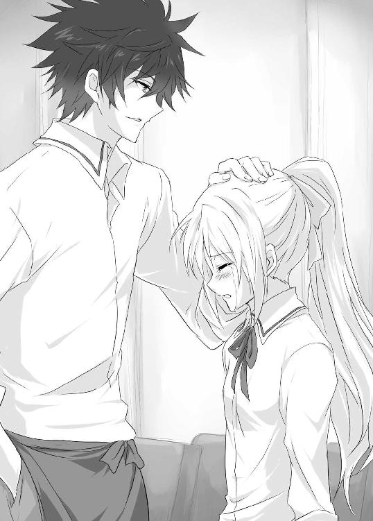
「ねえ、タクト」
まだ少し目の赤いシェッセはそれでもスッキリしたように微笑む。
「なんだ？」
「どうしてタクトはボクにそんなに親切にしてくれるの？」
「ああ？ 俺がいつ親切にした？」
ぶっきらぼうに言ってみるが、シェッセは変わらず優しく微笑んでいる。
「してくれたよ。ボクはこんなに人から優しくしてもらったことはなかったかもしれない。こんなに他の人から大切にしてもらったことはないかもしれない」
「............」
シェッセはゆっくりと進む機関車に飛び乗る。
「ねえ、どうして？ タクト」
そんな彼女の目を見て、タクトは徐に呟いた。
「前世の因縁......つったら納得するか？」
シェッセはその答えに一瞬ポカンとしてから、くすぐったそうに笑った。
「君からそんなロマンチックな答えが返ってくるとは思わなかったよ」
タクトもそう言われて思わず苦笑いを返した。次第に距離が離れていく機関車。その柵に手を掛けたシェッセは少し目を伏せる。
「でも、そうだとしたら............」
「なんだ？」
「......ううん、なんでもない。じゃあね、タクト。リュカにもよろしく言っておいて。結局あの後、リュカとは挨拶もできなかったから」
「ああ、伝えておくよ」
列車はゆっくりと、しかし確実に遠のいていく。
彼女を乗せた列車が見えなくなるまでタクトは、その場に立ち尽くしていた。
――蒼脚竜の竜仙華か......あんなもん欲しがるのは......。
シェッセの身にこれから降りかかる可能性に思いを馳せ、タクトは自分のすべきことを考える。そして脳裏に浮かんだ幾つかの事象に、家へ向かう足を速めた。
第四章 四複眼竜
シェッセは一度リンドにある屋敷に帰り、王立魔法騎士団庁舎へ通話機で連絡を入れた。
受付にシェッセ・リハエルであることを告げ、グレン中尉に取り次いでもらう。
『やあ、リハエル君。すまなかった。ちょうど帰るところだったよ』
「申し訳ありません。ご報告だけでもと思い」
『ということは、手に入れたのかね？』
「はい、明日、庁舎にお持ちいたしますので......」
『...............いや、悪いんだが、これから庁舎まで届けてくれないだろうか？』
「これからですか？」
『ああ、そうなんだ。頼めるかい？』
「は、はい......大丈夫です。ではこれから向かいます」
『ああ、たのむよ』
通話機を切るとシェッセはすぐに出かける支度をする。騎士団服に着替え、帯剣を携え、竜仙華を懐に入れる。それからタクトに買ってもらったリボンを付けるかどうか、ちょっと迷った。
そしてやはり付けて行くことにした。
――これを付けていくのはタクトからもらったからという訳ではなくて、このリボンが気に入ったからというだけで......。
誰にするわけでもない言い訳を心のうちでしながら、家を出た。
どうにか王立魔法騎士団庁舎までやってきた時には、辺りはすっかり闇に包まれていた。この時間に庁舎に来たのは初めてかもしれない。
大理石を使った石柱に支えられる巨大建造物であるためか、夜の闇に浮かぶ姿はどこか怖ろしい気がしてしまう。
入口に掛けられた松明が立体感を歪ませて、建物がいつもよりも巨大に感じた。
門を潜り、庁舎内へと歩みを進める。中にいた王立魔法騎士団の夜警部隊に挨拶をし、グレン中尉からの命令で来庁した由を告げ、中へ通してもらった。
薄暗い廊下を進み、グレンの事務室を目指す。やはり夜の建物の中はどうも気味が悪い。そもそもこの庁舎がひどく広大で、しかも今は人とも会わないものだから余計である。どうにかグレンの個人事務室までやってくると、シェッセは控え目にノックをする。
「どうぞ」
グレンの声に促され室内に入る。すると革張りの椅子に腰かけていたグレンが立ち上がり、さっそく任務である竜仙華について尋ねてきた。
「手に入ったのだね？」
「はい」
「どれ、見せてもらえるかな」
シェッセは懐から竜仙華を取りだし掲げてみせた。
「こちらでお間違いないですよね」
「.........ああ、間違いない。よくやった」
お誉めの言葉を受け、シェッセの中で前線へ出陣できる期待も高まる。
これで本当に任務は終了だ。そう思った時、後ろから扉を開け放つ音がした。
「お話しの最中、失礼いたします。王立魔法騎士団、内務部特別監察官士カティナ・イシュルダールです。グレン・フォワード中尉に幾つかご質問があります」
振り向いたシェッセの目に入ってきたのは、緊張感をはらませたカティナであった。
「なんだ、ノックもしないで。今とりこんでいる。後にしないか」
「いえ、すぐに済ませますので。グレン中尉からシェッセ・リハエルに対して出された命令の詳細を開示していただきたいのです」
「なにを言っている。機密事項だ。たとえイシュルダール君とはいえ、教えるわけにはいかない」
「そうですか......ではこちらから当てさせてもらいましょう。あなたのシェッセに対する任務は、蒼脚竜の竜仙華回収ではありませんか？」
「............ふん、まったく抜け目がないな。どこからそんな情報を引き出してきた」
「...............」
何も言わず睨みつけるカティナに、グレンはしょうがないとでもいうように鼻で笑う。
「まあいい......君の言う通りだ。知っての通り竜仙華回収は極秘で行われる。そこでリハエル君に白羽の矢が立った。それだけのことだ。君もこの事は決して口外しないように」
これで終わりだというようにグレンは話を打ち切ろうとした。しかしカティナは静かに顔を上げ、グレンの思惑を遮る。
「残念ながら、そう言う訳にはいかないのです」
「なんだと？」
「あなたが嘘の供述をしているからです」
「イシュルダール君。立場をわきまえたまえ」
「上層部からシェッセ・リハエルに対してそんな指令は出ていません」
「ほう、そんなことを、おまえが何故知っているというのだ？」
「知っていますよ。竜仙華回収の任務を言い渡されたのは、私なんですから」
まるで時が止まったかのような緊張感の中を、カティナはゆっくりと歩く。
「出来れば事前に貴方に対する疑惑の証拠をつかもうと考えていましたが、あなたは周到に周りを欺き、証拠を掴ませないように工作をしていた。おかげで、こうして現場を押さえるしか、手段は無くなってしまいました」
「......ほう、このわたしになんの嫌疑が掛かっていたと言うのかね？」
「――魔竜召喚の為の竜仙華私的回収......つまり竜神信仰の罪ですよ」
カティナの言葉にグレンの目つきが鋭くなる。
「......」
「グレン・フォワードを、竜神信仰の罪で逮捕する！」
カティナは言うと同時に、剣を抜き放ちグレンに突進を掛ける。
事態が全く飲み込めないシェッセは、呆然と立ちつくしてしまう。その隙を突いてグレンはシェッセの手から引っ手繰るように竜仙華を奪いとった。
「グレン中尉!?」
驚きと混乱に見舞われるシェッセを尻目に、グレンはニヤリと顔を歪める。
「驚いたな、まさか君がその任務についていたとは」
「黙れ、竜仙華をその場に置いて手を床に付けろ！ 抵抗すれば命はないと思え！」
怒りを露わにするカティナに、グレンはひるむ様子もない。
そして次の瞬間、シェッセの左後方から僅かに鉄のすれる音が聞こえた。
――グレン中尉が......剣を抜いた!?
その剣が抜き打ちざまにシェッセを薙ぎ払う――が、一歩遅かった。シェッセが半身を引きながら抜きかけた帯剣で、グレンの剣を受け止める。
「さすがだな、剣の腕はかなりのものだという話じゃないか、リハエル君」
ギリギリと力で押すグレンに、シェッセは後ずさる。
「シェッセ、飛べ！」
走り込んできたカティナの声に、シェッセは競り合う剣の反動を使って後方へ飛ぶ。僅かにバランスを崩すグレンだが、それでもカティナから振り下ろされる剣を軽く受け流した。カティナの攻撃を回避しながら、グレンはさらに呪文の詠唱を施す。
「戎具強化式魔力練成！」
戦闘を行いながら魔法の同時展開。剣を振るいながらの詠唱及び、練成対象への集中という行為は、同時に二つの神経を使いこなさなければならない。かなりの使い手ですら、そうできることではないのだ。
グレンの剣は見る間に光を放ち、魔力元素は破壊力へと練成される。シェッセはもちろん、カティナの剣もまた通常の鋼鉄製の剣である。まともにグレンの攻撃を受けることはできない。カティナが曲芸のように跳躍し、グレンとの間合いを測る。
「シェッセ、二人でしかけるぞ」
「はい、カティナ様」
言うと同時にグレンに向かって二人は飛び出す。カティナは上方から、シェッセは下方から剣を突きたてる。どちらかを受ければ、もう片方に斬り伏せられる――筈だった。
しかしグレンは、足元の椅子をカティナに向かって蹴りあげ、振り下ろした剣でシェッセの帯剣を弾き飛ばした。
「ひよっこの考えそうなことだ。悪いが、おまえたちに構ってはいられないのでね」
グレンは身を翻し、そのまま窓を突き破る。
「待てっ！」
シェッセが手を伸ばすが届きはしない。窓から下を見下ろすと、グレンが闇の中へ消えて行くのが見えた。そのまま窓に手をかけるシェッセの肩を、カティナが掴み引き寄せた。
「大丈夫だ、既に庁舎の一斉封鎖が完了している。グレンがここから出ることは不可能だ」
元々この庁舎の壁は高く、出入り口の数も少ない。ある種の城塞の様相を呈する王立魔法騎士団の庁舎に於いて、それらの出入り口が封鎖されれば、敵は袋のねずみ同然なのである。
後は時間をかけて炙りだしていくだけだ。
カティナは大きく息を吐くと、事の次第を話し始めた。
「先ほども言った通り、シェッセがグレンから竜仙華回収の任務を受けた時に、私も同じ命令を上層部から受けていたんだ」
重複命令。しかし取り違いから発生したミスではない。
グレンが竜神信仰として、竜仙華を回収しようとしたのだ。
「驚いたよ。私がミキハラタクトの下に行った時には、既に君が彼と行動していた。いったいどうなっているのか、しばらく君たちを監視し見極めることにしたんだ」
「じゃあ、もしかして......」
「ああ、すまなかった。君を尾行するような真似をして」
ずっと感じていた何者かの視線。それがカティナだったのである。
「だからクローディアスさんとの決闘の時に、庁舎の汎用口にいたんですか」
「そうだ......ただあれは誤算だったんだ。まさかあんな展開になるなんて思ってもみなかった。シェッセが怪我をしたらと思ったら思わず飛び出してしまったんだ」
「そうだったんですか」
そこでカティナは少し顔色を曇らせた。
「ただ......もしかしたらグレンの目的は竜仙華回収ではなかったのかもしれない」
「どういうことですか？」
「もしグレンが竜神信仰として竜仙華を回収しようとしていたのなら、この方策は杜撰すぎる。なにしろ命令が重複しているのだから、私がすぐに気がつくのは解りきっている。それにシェッセ、君の人選だ」
「そうですね。実際どうしてボクが選ばれたのか、今ひとつ納得できませんでした」
任務を言い渡される騎士は、それなりの技術や階級が必要なのである。そういった事情を踏まえると、予備隊士であるシェッセが選ばれる理由が希薄だった。
「私はグレンが、ミキハラタクト好みの女性を送り込んで籠絡し、早急に竜仙華を得ようとしていたのかと考えていた」
「え、え？ そうなんですか？」
カティナの言葉に気持ちが妙に浮足立った。
「しかしそれはどうやら違っていたらしい」
「.........え、あ......そ、そうなんですか？」
「ああ。彼については上層部が以前からかなり情報を掴んでいた。なにしろ、この前の蒼脚竜をも単騎で打ち倒すほどの技量があるのだからな」
同じような事をグレンからも聞いた。上層部は以前から彼に目を付けていたのだという。
カティナはメモを取り出し、タクトについての記述を探す。
「その上層部の調査ではミキハラタクトの女性の好みは、『巨乳で背の高いお姉さん系』らしいのだ。であるなら...............どうしたシェッセ？ なにを急に項垂れている」
「.........なんでもないです」
――なんでボクが落ち込まなきゃいけないんだ。
シェッセは今の情報で気落ちしている自分を疑問に思いながらも、話の腰を折ってしまったことを詫びて続きを促す。
「うん、まあそう考えると、やはり竜仙華回収が目的とは思えない。するとグレンの目的がいよいよ不明になってくるんだ。わざわざ自分が竜神信仰だと吹聴するためにこの計画を立てたようにすら見える。だとすれば、そんなリスクを押し通しても余りある何かがあるはずなのだ」
「竜仙華回収、以外の目的ですか......」
「もちろん竜神信仰にとっては、竜仙華回収の任務は重要なウェイトを占めている。なにしろ竜仙華は『魔竜召喚』に使われる代物だからな」
以前グレンも話していた。ただ幾つかの事実をぼかしていた。
「術式が謎のままだとは言ってましたが......」
「勿論グレンは知っているだろうな。まあ上層部もある程度のことは知っている」
やはり脅威である竜神信仰に対し、王立魔法騎士団もかなり情報を掴んでいるようだ。
「これは騎士団内上層部のみの機密だが、竜仙華の中には魔法陣が隠されている」
「でもドラゴンの体内には練成分解物質が在るから、そういった魔法陣は消されてしまうのでは？」
「いや、我々が使う魔法とは方式が全く違う旧世代の技術らしい。そもそも魔力元素を媒介にした練成魔法とは別種の物だろう。そんなものが何故ドラゴンの体内にあるのかわからないんだ。ただ竜仙華だけではなんの効果も発揮することはできない。魔力元素を竜仙華に多量に流し込むと魔法陣が具現化し、壁覇式異空間練成、つまり召喚魔法になる」
「じゃあグレン中尉は竜仙華を使ってドラゴンを......」
カティナは重く頷き返した。
「追い詰められれば召喚する危険性がある。壁覇式異空間魔法と呼ばれる召喚魔法は竜神信仰と、一部の種族がそれを使うのみだった。公表されなかったのは竜神信仰の情報を流し過ぎて感化される人間を出さないため。また壁覇式を使う種族も表立ってそれを使うようなことはしないからな」
「でもそう考えると......やはりおかしいですね」
シェッセの言葉に、カティナも同意するように深く頷いた。
「秘密体質の竜神信仰が、ばれるのを承知で、そんな穴だらけの方策を打ってくるのは考え辛い......竜仙華を得られる前に捕らえられている可能性もあるのだからな」
「彼の目的が全く見えませんね」
「ああ、だからグレンを生きて捕まえ、口を割らせなければならない......」
そう言ったカティナは、その後に続く言葉を探すように少し目を泳がせた。
「どうしたんですか？」
「......いや、そのためとはいえ、シェッセ......君を巻き込んでしまった......すまない」
「そ、そんな。ボクは......お役に立てたのなら、むしろ嬉しいです」
その言葉にカティナは安堵したような笑みを浮かべ、シェッセの隣に腰を下ろした。
「はあ......少し疲れた。今回ばかりは骨が折れたよ」
シェッセが驚きの表情を浮かべると、カティナは苦笑いをもらす。
「おかしいか、私が弱音を漏らすなんて？」
「いえ、そんなことは。ただカティナ様のそういう顔を見るのが初めてだったもので......」
「カティナでいい。それに敬語もいらない」
「え？」
「前にも言ったぞ。様はいらない。シェッセ、君は私より強いんだ」
「で、でもボクは魔法も使えないですし」
「私はシェッセになら背中を預けられる。だからその............いや、なんでもない」
その横顔がシェッセには僅かに寂しそうに見えた。ずっと優等生であり、今はキャリア組の中で生きるカティナ。彼女が望むものは、おそらく特別に扱われることではない。
シェッセにはそれがわかる気がした。立場は逆でも、シェッセもまた特別に扱われる人間であることには変わりない。他人から別種として見られること。それは見下されることも、見上げられることもそれほど変わりはないのではないだろうか。なぜなら、そこには自分一人しかいないのだから。同じ目線で話せる者がいない孤独。
そのことに気づけたのは、あの肉屋と共にした僅かな時間のおかげかもしれない。シェッセは少しだけ――ほんの少しだけ、世界を見る目が広がったように感じていた。
だからシェッセは躊躇いがちに、おずおずと彼女の名前を口にする。
「カティ......ナ」
「............」
それを聞いたカティナは柔らかく微笑んだ。彼女もこんな顔をするのだと、シェッセは驚きながらも、どこか嬉しい気持ちになった。
「シェッセ、行こうか。グレンを捕まえねばならない」
「はい、カティナ」
まだ言い慣れない、聞き慣れないその言葉の感覚に、二人はクスクスと笑いながら立ち上がった。
結果としてシェッセはカティナと共に捜索隊に加わることになった。
庁舎内にまだグレンが潜んでいるはずなのだが、騎士団の捜索も空しく時間だけが過ぎて行った。広大な庁舎の敷地ではあるが、決して外に出ることは叶わないはず。
では彼は一体どこにいるのだろうか？
もしかしたら既に逃走用の抜け道でも造られていたのだろうか？
それとも騎士団内に協力者がいて、逃げおおせてしまったのか。
そんなことすら考えてしまうほど、グレンの捜索は難航していたのだ。
先ほど周辺を警備する騎士らに不審者が二名ほど逮捕された、という報告が入った。だが、どうやらグレンではないらしい。ただ城壁の周りを一般市民がうろついていただけだという。
こんなタイミングで迷惑な一般市民である。
「カティナ、もしかしたらなんだけど......」
「どうした？」
「ここの屋根って、まだ探していないかな？」
ふとシェッセが庁舎の屋根を見上げながらそう言うと、カティナは息をのんだ。
「確かに......しかし、屋根に上がる方法なんて......」
カティナの言う通り屋根に上がる通路や入り口のようなものはない。
「あるよ。たしか......掃除のおじさんがあそこから」
そう言ってシェッセは最上階の小窓を指さす。以前掃除の男性が、あの小窓から出て来ると、器用に彫刻などを足場に屋根に上っていた。
「そうか」
すぐさまカティナが走りだし、その後にシェッセも続く。最上階へ続く階段を駆け上がり、廊下の小窓から外に出た。あまりの高さに、シェッセは目がくらんだ。
カティナがそんなシェッセを気づかうように、
「大丈夫か？」
と声をかけてくれるので、なんとか頷き返しながら、下を見ないことに努めた。
足場というには心もとない縁を伝って、なんとか彫刻の下まで辿り着く。下から見るとそれほどでもない大きさの彫刻だったが、目の前で見るとかなり大きい。二人はそれに手を掛け屋根の上に辿り着いた。
真上から見ると一辺が２７１・５メートルの正方形になる庁舎の屋根は、凹凸こそないが月明かりのない夜は端から端まで視界が届かない。無限の闇が続いているような恐怖すら覚える。
そんな暗闇の中に人の気配が僅かに揺らめいた。
カティナがまず呪文を唱え、自らの剣に武器強化魔法を掛ける。
剣にほのかな光がさすと、屋根の端に人影が見えた。
「やっと来たか。ここならおまえたちも、存分に戦える広さだろう」
「グレン......大人しく出頭しろ」
「そういう訳にはいかない。まだ必要なモノが揃っていない。もう少し待ってくれないか？」
不敵な笑いを浮かべながら言うグレンだが、そこに一切の隙はなかった。
「おまえの要求を飲むつもりはない」
カティナが帯剣を抜き、その場に緊張が走る。
シェッセはごくりと喉を鳴らし、帯剣の柄に手を当てる。先ほど武器強化魔法がなされたグレンの剣に、翻弄された反省を生かさねばならない。
グレンの剣を見る限り今は光を放ってはいない。まだ魔法は施されていないのだろう。しかし長期戦となればまた撃ち合いの最中に、魔法を掛けられることは確かだ。
一気に片をつけねばならない。
「カティナ、ボクが行く」
そう言ってシェッセが走りだす。同時にグレンが剣を抜き呪文の詠唱に入ろうした。
全て唱えさせてしまっては勝ち目がない。
――タクトならこんな時、どうする......。
思索の答えを脳が導き出すよりも早く、身体が反応をおこした。
一刀目は片手で持った帯剣をグレンに降りおろす。しかし片手では力もスピードも稼げない。グレンはあっさりそれを受け流し、シェッセはその場に片手をつく。
しかしシェッセはそうなることを待っていた。剣と詠唱に気を取られているグレン。シェッセのもう片方の手の中にあるものにまで、注意が行き届いていない。
ついた左手を強く握り込む。春風に乗って屋根の上に降り積もった白砂を掴みこんだのだ。そして身を翻しながらグレンの顔に目がけて思いきり投げつけた。
その一瞬でグレンの詠唱が止まる。
「くそっ、なんて戦い方だ！」
グレンが悪態を吐くのも無理はない。こんな戦い方の騎士はいないからだ。
「てええええい！」
すぐ後ろに控えていたカティナが、全力でグレン目がけて剣を振り下ろす。魔法が失敗したグレンの剣に、武器強化魔法がなされたカティナの剣が叩きこまれる。グレンの剣はガラスが割れるような音を立てて粉々に砕け散った。
シェッセもその隙を決して見逃さない。剣を振り切り身を沈めたカティナの真上を帯剣が一閃し、刃は確実にグレンの胸当てを捉えた。
隊服を引き裂き、グレンのあばら骨に到達する直前、シェッセはそのギリギリのところで、剣を引きもどす――同時にグレンの胸から血が噴き出すが、致命傷ではない。しかし傷を負い、剣を失ったグレンにとって、これ以上の戦闘は不可能だろう。
フラフラとグレンは後ずさりながら傷口に手を当てた。
「......さすがだな。お前たちは本当にすごい。先ほどの戦闘から、ちゃんと学習している。やはり殺すのはもったいない」
息を切らしながら傷口を抑えるグレンに、カティナが剣を向ける。
「グレン、観念してもらう。おまえの罪は非常に重い。名誉ある王立魔法騎士団の重役に在りながらドラゴンを崇拝し、騎士の権限で竜仙華を手に入れようとした罪は！」
「ほう、そうか。ならば責任をとるとしよう。竜神信仰としてな！」
グレンは懐からシェッセの持ってきた蒼脚竜の竜仙華を取り出した。同時に以前シェッセに見せた赤い竜仙華を、それぞれ両の手に握りしめる。
「残念だが、私は捕まらん！ お前たちに与える秘密もない！」
「待てっ、それは......」
カティナが叫ぶと同時に、グレンは二つの竜仙華を重ね合わせる。同時にその場を風が渦巻き、地面に二重の魔法陣が形成されていく。
「我、竜を仰ぎ殉ずる者にして、神を請う者也。世界を統べる魔力の源。空間を解き放つ、偉大な力。大地の理から外れ、異界の扉を開け放て」
魔法陣は光を放ち、魔力が凝縮していく。渦巻く空気の対流にカティナは身構えた。
「まずい、『魔竜召喚』だ！」
先ほどカティナが言っていた竜神信仰が操る禁呪法。
エネルギーは地鳴りを発生させながら、どんどん高まっていく。
「壁覇式異空間練成！ 四複眼竜召喚！」
魔法陣の中心からは巨大な鉤爪が姿を現す。大地を捕らえ這い上がってくるドラゴン。そこからぬるりと四つの眼球が覗きこみ、目の前にいるグレンを捕らえる。
「シェッセ、グレンを！」
カティナの言っている意味を、シェッセは即座に理解した。魔法陣から現れたドラゴンの爪がグレンを狙っていたのだ。全ての人間に牙をむくドラゴン。たとえ召喚主といえど、その例外ではないのだ。今ここでグレンが殺されれば、竜神信仰の足跡はまた途絶えてしまう。
シェッセは自らの剣をグレン目がけて全力で投げつけた。
剣は真っ直ぐにグレンの肩を貫通――そして彼の身体は反動で後ろへ飛んだ。
「があぁっ！」
紙一重で四複眼竜の鉤爪がグレンを取り損なう。
貫通した剣にグレンは顔をしかめ、痛みを噛み殺すように唸った。
そうするうちに魔法陣の中から四複眼竜は身体を引き摺りだし、庁舎の屋上にその巨体を現した。
這いつくばったトカゲのような形態で、胴より長い尻尾も含めれば、20メートルを優に超える巨体。その皮膚は全体が茶褐色で、ゴツゴツとした岩のような質感。背に翼はなかったが、代わりに大きな楕円形のコブが二つ付いている。ぬらりと薄く開かれた口は、その気になれば人間二人くらいは一呑みにしてしまえるだろう。そしてその口の上には、虫のような複眼が四つ付いている。全体を見回しながら、周りの動きをジッと嘗めまわすように捉えている。
暗闇の中で見るその様相は、巨大な岩石が這いずっているかのようだった。
シェッセは以前本で読んだ四複眼竜についての記述を思いだす。
四複眼竜は上位二等種として扱われる凶暴なドラゴンだ。上位三等種の蒼脚竜ですら王立魔法騎士団が苦戦したものを、この場にいる二人でどうにかすることは不可能だった。
しかし今、四複眼竜を市街に放つことは絶対に避けなければならない。この凶暴なドラゴンが街に降りれば、大惨事は必至である。
「シェッセ、これを使え！」
カティナもそれに気がついたのか、すぐさま自らの剣をシェッセに投げ渡すと同時に、呪文の詠唱を始め、魔力を練成する。
「遍く世界を統べる源よ、四方の退路、八方の進路を塞ぐ楔と成れ！ 縁辺封鎖！」
カティナの掌が屋根にドンっと着くと同時に、無数に飛び出す魔力の鎖が渦を巻き四複眼竜を絡め取ってその動きを封じた。
身体の自由を奪われた四複眼竜は、その場で地団太を踏み束縛から逃れんとする。
その四複眼竜の強力に、魔法で動きを封じるカティナの表情にも苦しさが浮かんでいた。
シェッセは帯剣を構え、四複眼竜に向かう。カティナの魔法で緊縛された四複眼竜の目が、そんなシェッセの姿を捉えた。
その時、四複眼竜の背のコブから弾丸のようなものが二つ飛び出した。
シェッセは咄嗟に後ろに飛んでギリギリ避わす。
それは四複眼竜の背から伸びる、岩を連ねたチェーンのような鞭だった。屋上の石屋根に突き刺さった、その岩の鞭は取り逃した獲物を再び狙うかのごとく、ぬらりと動き撓る。
岩の鞭はシェッセを狙い、容赦なく撃ち降ろされた。シェッセも的確にそれを帯剣で振り払う。しかし振り払われてもなお、四複眼竜の岩の鞭はシェッセを狙って動きを加速させた。
――もっと速く......もっと......。
予測不可能に動く二本の岩の鞭。なんとか攻勢に出たいが、弾き返すのが精一杯で、四複眼竜の本体に近づくことすら叶わない。
「――くっ」
受け止める一撃、一撃が骨の芯まで振動する。魔法により強化されていない帯剣ならなおさら。剣を握る手が痺れてくるのがわかった。
さらに追い打ちをかけるようにブチリ......ブチリ、と四複眼竜を捕らえていた魔力の鎖が切れ始めた。ドラゴンの体内にある練成分解物質が働き、カティナの練成した魔力を崩壊させているのだ。
這いずりながら四複眼竜は、シェッセとの距離を縮める。
――.........負けたくない......こんな所で終わらせたくない......ボクは......。
その時――幾つもの魔力の矢が四複眼竜に打ちこまれ、その動きを止めた。
シェッセがその法撃の方向に目をやると、練兵所の屋根から数多の隊士たちが法撃の構えを取り、次々に遠距離練成法撃を打ちこんでいた。
「リハエル、イシュルダール！ よく二人で持ちこたえた！」
更に騎士団庁舎の屋根に次々に登ってくる王立魔法騎士団隊士たち。騒ぎを聞きつけた隊士たちがシェッセと同じ経路を伝って到着したのだ。屋上に躍り出た30人を超える騎士たちは一斉に呪文を唱え、武器強化魔法を自らの剣に施していく。
率いる中隊長は大声で一喝した。
「竜伐騎士隊はいないっ！ しかし敵は強大だ！ 総員、セントウッド７００万の民に、命を捧げる覚悟で行けっ！」
「「「「おおおおおおおおおおおおおおおっ！」」」」」
奮い立つ王立魔法騎士団員が怒号を上げ、四複眼竜へと一斉に斬りかかった。
対する四複眼竜は首を天に向け咆哮を上げる。縁辺封鎖によって抑えつけられた身をよじり、なおも力任せに這いずり出ようとしている。その目は斬りかかる騎士団ではなく、自らの身体の自由を束縛するカティナに向けられていた。
次の瞬間、シュルンッと四複眼竜の背のコブに二本の岩の鞭が吸い込まれた。それがどういうことか思い至ったシェッセは、カティナに向かって叫ぶ。
「カティナっ！ 危ない！」
しかしその声は間にあわない。四複眼竜の岩の鞭がうねりを上げて飛び出し、カティナの身体を弾いた。弾き飛ばされたカティナは、まるで人形のように、その身体を屋根に打ちつけ倒れ込む。
同時に練成されていた縁辺封鎖が消え去り、四複眼竜の身体を束縛していた鎖が全て砕け散った。自由を取り戻した四複眼竜は鋭い爪を振り下ろすと、目の前に立ちはだかった騎士たちを一掃。そして岩の鞭はより激しくうねり、近づこうとする者の足元をすくい、打ちのめしていった。
圧倒的な力。それでも王立魔法騎士団は決死の覚悟で食らいついていく――が、それをあざ笑うかのように四複眼竜の四肢が、尻尾が、鞭が降りかかる火の粉を次々に蹴散らしていく。身体の自由を取り戻した敵に、もはや騎士たちは武器強化魔法が掛けられた剣を一太刀も浴びせかけることができなかった。
駆けつけた騎士たちが次々に地に伏せってゆく。
猛り狂った四複眼竜の怒りの矛先は、未だにカティナに向いているのだろう。周りの騎士たちを蹴散らすと、四つの眼は彼女を捉え、巨体をのそりと、その方向に向ける。
ズシリ......ズシリ......と、まるで逃げることのできない獲物の恐怖を弄ぶかのように、四複眼竜はゆっくりと歩みを進める。
シェッセはカティナに駆け寄り抱き起こした。腕から肩にかけて、大量の血が滲みだしている。このまま出血を放っておけば命にかかわる状態だった。
「カティナ、気を失っちゃダメだ！」
「...............ェッセ」
朦朧とするカティナは、意識を覚醒させるようにシェッセの名を呟いた。急ぎ止血を施している間にも、四複眼竜は進行を阻む騎士団を蹴散らし、どんどんシェッセたちの下に近づいてくる。
「......もういいシェッセ。私は置いていけ」
出血の為か、顔が青白いカティナは痛みをこらえながら、シェッセに優しく語りかけた。
「いやだっ！ カティナを置いてはいかない！」
「私を連れていれば、逃げることも戦うこともできない......それくらいわかるだろう」
「わかってる！ でも、カティナを置いてはいかない！ カティナを守って戦う！」
「.........シェッセ」
「魔法が使えなくても諦めない......どんな劣勢でも怖がらない......」
彼のように――どんな相手にも、決して怯むことのないタクトのように。
シェッセは帯剣を構えなおすと、カティナを守るように四複眼竜と対峙した。
四複眼竜の岩の鞭が行く手を阻むシェッセに振り下ろされた。シェッセは全力で、振り下ろされる岩の鞭に斬りかかる。
「―――！」
が、耐えきれなくなったのはシェッセではなく、剣の方だった。帯剣は鈍い金属音を立てて折れてしまったのだ。
そして四複眼竜の岩の鞭がシェッセの頭上に迫った。
ゆっくりと、しかし避けがたく自分に真っ直ぐに向かってくる絶望。
翻ることのない状況。
シェッセの脳裏にはっきりと、『死』という言葉が閃いた。
仰ぎ見る先に迫る死。
恐怖が、失意が、死への無力感がシェッセの奥底から湧き出す。しかしシェッセは視線を逸らさない。自分が感じる恐怖から目を背けなかった。
――たとえこれが、生きている最後の瞬間だったとしても、最後まで立ち向かう。
「...............そういうことだよね.........タクト」
その瞬間、シェッセの視界を何かが塞いだ。
金属がひしめき合うような音が轟く。
いったい何が起こったのか、思考がついていかない。
目を見開き、シェッセは前に立つ青年の姿を認識し始めると同時に、身体の奥が熱くなり、小刻みに震えた。
「ったく、てめぇらの戦い方じゃ、売りもんにならなくなっちまうだろうが！」
シェッセの耳に届いたのは、ぶっきらぼうでふてぶてしい、けれど絶望の中でも笑っている、そんな声。
幻聴でも聞いているのかと思った。幻覚でも見ているのかと思った。
しかし声の主は、そのどちらでもなかった。
「どら、いっちょ料理でもしてやるか」
「タクト！」
シェッセの目の前に、ミキハラタクトが立っていたのだ。彼はあろうことか両手を繋ぐ手錠の鎖で、四複眼竜の鞭を挟みこむように受け止めていた。
「おい、シェッセ。上司に言っておけ。あんな牢屋ならだれでも脱獄できるってな」
「え、じゃあさっき捕まった不審者って......」
「不審者じゃねえ、肉屋だ！」
訂正するところはそこか、とシェッセは思わず笑いそうになった。こんなにも絶望していたのが嘘のように。
タクトに取られた四複眼竜の岩の鞭はピクリとも動かない。四複眼竜はタクトの手を引き離そうとするかのように引っ張るが、挟みこんだ両手がそれを塞いでいた。
「でも......どうして君はこんな所に.........？」
「おまえが竜仙華を持っていったから、竜神信仰の奴が絡んでんじゃねえかって、思ったんだよ。来てみたら案の定ってな感じだ。まあ、あんなもん使うのは竜神信仰かクク族しかいねえんだからよ」
「え.........」
どうやら彼はシェッセが竜仙華を獲りに来た時点で、竜神信仰の存在を疑っていたようだ。
そしてシェッセが竜仙華を持ち帰った後、こうして様子を見に来たのだろう。
タクトは四複眼竜の岩の鞭を挟みこんだまま大声を上げた。
「リュカ！ 針金槌だ！」
「ぐぅっ！」
聞き覚えのある合いの手に目を向けると、冷蔵庫を背負ったリュカがピョンと屋上へ躍りでた。そして背に乗る冷蔵庫を目の前にもって行き蓋を開け、中から先端が針のようにとがった金槌を二本取り出す。
「ぐぅ！」
そのうちの一本をタクトに向かって、勢いよく投げた。
それを待っていたかのようにタクトは手を緩め、そのまま力任せに手錠を引き千切る。すると鞭を必死で引いていた四複眼竜が、突然放された勢いで僅かに後ろによろめいた。
タクトは飛んできた針金槌を片手で受けとり跳躍。しかし四複眼竜の目はタクトをしっかりと捉え見据えている。そして岩の鞭がタクトに突きだされた。
「見え見えだ、バカ野郎」
ネコのように身体を捻り、彼は紙一重でそれを避ける。そしてタクトは針金槌を、四複眼竜の右前脚の関節の付け根に向かって思いきりたたき込んだ。
瞬間、針金槌の先を起点として局所的に爆発。衝撃のあまり、四複眼竜の右前脚は痺れたように動きが鈍くなる。
「次！」
「ぐぅ！」
リュカが更にもう一本を投げ渡した。
タクトは走りながらそれを片手でキャッチすると、スライディングで四複眼竜の巨体の真下をすべりぬける。と同時にもう片方の前脚の付け根を狙って、針金槌を叩きつけた。
またも的確に爆発。四複眼竜の両前脚は動きはするものの、脚としての機能を失ったようにその場でのたうつことしかできなくなってしまった。
しかしまだ敵には岩の鞭がある。タクト目がけ二本の鞭が交互にまるで槍のように突き出された。それを巧みに避けながら、タクトはリュカに向かって手を上げる。
「リュカ、果物ナイフだ！」
「ぐぅ！」
再びリュカが冷蔵庫に手を突っ込むと、なんの変哲もない果物ナイフを取り出した。しかしその数が多かった。包丁入れに収まる三十本近くの果物ナイフ。それをリュカが次々にタクトに投げていく。
そして飛んでくるナイフを、タクトは受け取ったと同時に、四複眼竜めがけ投げつけた。次々に飛んでくる果物ナイフを曲芸のように取っては投げ、踵で軽く蹴り上げ宙に遊ばせ、キャッチしては投げる。真っ直ぐにそのナイフたちは、四複眼竜の四つの目を狙って空を切っていく。しかし四複眼竜も手をこまねいているわけではない。二本の鞭で、次々に飛んでくる果物ナイフを叩き落していく。しかしタクトのナイフ投げのスピードが僅かに勝っていた。
岩の鞭の隙間を縫って、一本が左上の目に突き刺さった。
悲鳴を上げて動きが鈍る。そこを突いて更にタクトが果物ナイフを投げる。更に一本が別の目に刺さった。
「......っと、ここで打ち止めか」
目を二つ潰した所で、果物ナイフがなくなったようだ。
四複眼竜は二つ目を失ったことで、完全に狼狽し動きが鈍くなっていった。身体のバランスすら取れなくなっているのだろう。起きあがろうとするそばから、体勢を崩しその場に倒れてしまう。
その時、後方から低く掠れたような声が聞こえた。
「......揃ったな」
その声にシェッセは振り向くと、そこには虚ろな目をしたグレンが立っていた。
「ようやく、二つが揃った。そして鍵を開けるのは四複眼竜......」
肩に刺さっていたはずのシェッセの剣は引き抜かれ、彼の手の中で光を放っている。
「なんだオッサンは？ 傷やばそうだけど大丈夫？」
「ミキハラタクト.........おまえがその一つか。確認させてもらおう。運命に抗えず、こうしてここに現れたのだからな.........」
グレンはシェッセとタクトを交互に見ながら呟くように言う。
シェッセがどういうことなのか問うよりも早く、グレンは帯剣を振りかざし、思いきり投げつける。しかし帯剣はタクトではなく、リュカに向かっていた。
「リュカ！」
シェッセが叫んだ瞬間、帯剣はリュカの真横をすり抜け、冷蔵庫に突きたてられた。
「あ......あ......れいぞうこ」
困ったようにリュカはオロオロとする。その時、魔法が施された帯剣は冷蔵庫の中に固定された魔力と反応する。それを見たタクトが叫んだ。
「リュカ、離れろ！」
「!?」
次の瞬間、冷蔵庫は轟音を立てて爆発した。
タクトの声に瞬時に反応したリュカは、大きく跳躍し爆心地から難を逃れた。
「ぐぅ......しっぽ......」
ちょっと焦げてしまったようである。
その様子を見てグレンは狂ったように笑い声を上げると、それに反応するかのように、四複眼竜の様子が変化した。それまでとは打って変わり四複眼竜は襲ってくることもせず、ただ小刻みに震えている。
「さあ、タイムリミットだぁっ！」
その様子をタクトはチラリと一瞥し、ぼんやりとした視線をグレンに向ける。
「おい、オッサン。どっか頭とか打ったのか？ だいじょうぶ？」
「わかっていないのだな。哀れなものだ。四複眼竜は戦闘時間が長期化すると防衛本能で体質変化を起こすのだ。比べ物にならんぞ、今までの強さの比ではない！」
四複眼竜の殻のように固い身体に、ひびが入っていく。ボロ......ボロ......と断片が剥げ落ちると、それまでとは形態の違うドラゴンが現れた。
呼吸に合わせ腹が脈動し、白くつるりとした質感のドラゴン。太く強靭な腕と鋭い鉤爪が瓦礫を掴む。四足で這いずるその姿は、さながら巨大なイグアナのようでもある。そして脱皮してもなお、その20メートル級の巨体が持つ威圧感は決して変わらない。しかし圧倒的な違いは、その背にある物だった。二本だった岩の鞭は無数に枝分かれし、まるで手足かのごとく器用に使いながら、その巨体を起きあがらせる。そして背にあった楕円形のコブの脇から巨大な羽を広げると、突風を巻き起こしながら羽ばたき、舞い上がった。
その様子に、中隊長が傷ついた身体に活を入れ、最後の力を振り絞るかのように膝に手をつき立ち上がる。
「動ける者は俺に続け！ 封檻結界を張る！ 四複眼竜を絶対に街に降ろすな！」
その言葉に隊士たちが身体をふらつかせながら立ち上がり続く。
「「「遍く世界を統べる源よ、天辺、東嶽、西樹、南海、北凍、五方封じの檻と成れ！ 封檻結界！」」」
パチンッ、と隊士たちが印を結ぶと無数の魔力の糸が庁舎を、そして空を覆っていく。それぞれが絡み合い幾重にも結界が張られ、四複眼竜がこの庁舎から飛び出るのを塞ぐ。
しかしそれを見ていたグレンは、それすらも予期していたことかのように、冷ややかな薄ら笑いを浮かべていた。
「さあ、どうする、武器は無くなった。四複眼竜は最強の形状へと変容した。あっという間だぞ。ここにいる者全てを殺戮して、街へ飛び出すのは......なあ、ミキハラタクト。おまえはこれからどうするんだ、見せてみろ！」
笑い声を高々とあげるグレン。タクトは高く舞い上がった四複眼竜をぼんやりと見上げた。
「やっと変形したか」
やれやれと言わんばかりに大きなため息を吐く。その様子にグレンは眉間にしわを寄せた。
「――強がりもそこまでいけば大したもんだな」
「強がりだ？」
「こうなるのを待っていたとでも言いたいのか？」
「待ってたんだよ。もちろん」
タクトは当たり前のようにそう言いながら、腰に差した鉄パイプを抜く。
「どうもオッサンはわかってないようだけどな、俺は肉屋だぞ。一番うまい状態の肉を獲らないと意味がないだろう」
「そんな鉄パイプ風情で勝てると思っているのか！」
「勝つか負けるかじゃねえ！ 強いか弱いかじゃねえ！」
タクトは鉄パイプを肩に担いだ。
「美味いか......不味いかだ！」
そして首をポキポキとさせながら準備体操でもするかのように伸びをし、封檻結界を張る隊士たちに向かってニカッと笑う。
「おい、オッサンたち。結界破られんなよ。逃げられたら困るのは俺なんだからな」
気軽な調子で言うと、地面を蹴り、迫る四複眼竜の真下に躍り出る。
羽化したばかりの四複眼竜の背から無数の岩の鞭が撓り、弾丸の如く次々にタクトに向かって放たれた。雨のように降り注ぐ鞭を巧みにかわしていく。一向にあたらぬ攻撃に苛立つかのように、四複眼竜はタクトにのみ鞭が集中していく。
まるで誘導しているかのように、シェッセや騎士たちのいる場所から対の位置へと回避を続けていくタクト。
しかし、ここは果てのない平原ではない。騎士団庁舎の屋根の上なのだ。ついにタクトは屋根の端へと追い詰められてしまった。
「おっと、あぶねえ......」
すると四複眼竜は今だとばかりに滑空し、タクトに向かって鋭く硬質な爪を突き立てる。対してタクトは大きく振りかぶり鉄パイプを投げつけた。
「だぁぁらああっ！」
しかし瞬時に反応した岩の鞭が鉄パイプを弾く。
鈍い金属音と共に鉄パイプは飴細工のようにねじ曲がり、闇の中に消えた。僅かに勢いが削がれたものの、四複眼竜のタクトへの突進は止まらない。
そのまま大質量の途轍もない衝撃がタクトにぶち当たった。
「にゃろう！」
が、なんとタクトは、その身体を鷲掴みにせんとする巨大な爪を、両手で受け止めてしまった。タクトの行動にシェッセは驚愕し目を見張る。まさかドラゴンを相手に素手で挑む人間など聞いたことが無い。しかしタクトは今、上位二等種ドラゴンの爪をその腕で受け止め、相手の動きを抑え込んでいる。
四複眼竜は押しつぶさんとタクトに更に加重をかけながら、同時に無数の岩の鞭で打ちすえた。にもかかわらずタクトは、「いてえ」とか、「すごくいてえ」と言いながらひたすらに踏み堪えている。
しかし彼のその楽観そうな言葉とは裏腹に、確実にタクトの身体にはダメージが蓄積されていた。どう考えても生身の人間が、ドラゴンの攻撃を受け続けて平気でいられるわけはない。皮膚は裂け、血が噴き出し、腕や膝の関節は小刻みに震えている。
既に限界などこえているのだ。加えて数段力を増した四複眼竜の猛攻は熾烈を極める。
「タクト！」
シェッセは近くに転がる帯剣を拾い上げ、立ち上がろうとした。
と、そこへリュカが走り込んでくる。
「しぇっせ！」
「どうしたの？」
「れいぞうこ、つくる」
「え？」
なんと今壊されてしまった冷蔵庫を、リュカは造ると言ったのである。しかしその方法も術式もシェッセには見当もつかない。
「れいぞうこの......ぎじてんい」
リュカの言葉に、シェッセの脇にいたカティナが傷口を抑えながら半身を起こした。
「疑似転移？ まさか召喚魔法か？」
その問い掛けにリュカはコクリと頷き、肩かけカバンから竜仙華を幾つも取りだした。そう言えばさっきタクトが言っていた。竜仙華を使うのは竜神信仰か、クク族くらいだと。
リュカは冷蔵庫の中にある物――つまりタクトの武器を召喚しようというのだ。
カティナもその事実に驚きの表情を浮かべ目を白黒させた。
「先ほどグレンがやった、魔竜召喚と原理は一緒だが、しかしこの子にそんなことが......」
「できる」
相変わらず無表情なリュカの顔ではあったが、そこには自信が見て取れた気がした。
「ボクに協力できることはある？」
シェッセが聞くと、リュカは口をパクパクさせながら、
「りゅか......あまり......まほうのちから......ないから」
手振りを交えながら必死に説明しようとするのだが、うまく言葉が見つからないのだろう。
「えーと......だから......だっこ」
結局そう言ってリュカは背中を向けた。シェッセはその様子に思い当たる。
今朝リュカが魔法の練習に付き合ってくれた時に体験した、シェッセの魔力伝達体を媒体にリュカが魔力を練り上げる方法である。
「しぇっせは......まりょくいっぱいだから......」
「うん、わかった！」
急いで抱っこすると、リュカはすぐに詠唱を始める。
「せかいをすべる、まりょくのみなもと。くうかんをときはなつ、いだいなちから。だいちのことわりからはずれ、いせかいのとびらをあけはなて」
手にいっぱいに持った竜仙華をその場に放り投げると、空中でそれらは固定され魔法陣を構成していく。
竜仙華からは魔力を帯びた旧代文字が次々に展開され、それは立体魔法陣を形成し、複雑に絡み合っていった。
その光景にカティナは口を開け驚愕を露わにした。
「信じられない......こんな複雑な術式が......成立するというのか......」
次第に魔法陣の輪が大きくなり、光は益々大きくなる。リュカは手を交互に動かすと、それに従って立体魔法陣のパーツが、まるでパズルのように組みかえられていき、どんどん別の形式へと昇華されていく。
「していざひょう、２８８９２１０９２７、９８１２０００３、５７、４５１」
魔法陣は何かを探すように次々に脈動し、より強く発光していく。
「たくと！ なにがほしい!?」
ボロボロの身体で踏み堪えるタクトが、その声を受けて立ち上がる。
「そうだな......『竜槍』がいいだろうな」
「わかった」
リュカは再び魔法陣に集中し、呪文を唱えていく。
「われがほっするものをあたえたまえ、りゅうのけいやくのやり」
あらゆるものに存在する魔力元素が、シェッセの身体の中に流れ込み、リュカを通して魔法陣へと練成されていく。リュカの呪文と、流麗な舞踏のような手の動きは、魔力元素を固定化しエネルギー変換を起こしながら練成されていくのだ。
「へきはしきいくうかんれんせい！ りゅうそう！」
リュカの言葉に合わせるように魔法陣から『竜槍』と呼ばれた武器の柄が現れる。
「たくと！」
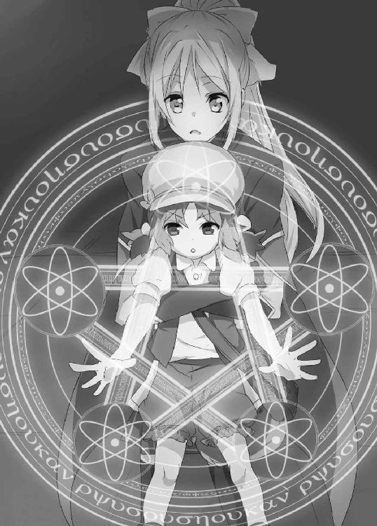
「おう、待ってたぞ！」
言うと同時にタクトの腕の筋肉が、ビキビキと盛り上がり血管が浮く。そしてがっしりと掴んでいた四複眼竜を、全力で上空に向かって投げ飛ばした。
まさかの怪力に押し返され、四複眼竜は突風を巻き起こしながら上空へと舞い上がる。そして封檻結界を避けながら体勢を立て直すように旋回を始めた。
そしてタクトは魔法陣の中心へと歩み寄り、『竜槍』の柄を握った。冷蔵庫と同じくして、タクトの身体に電気が迸るようにバチッという衝撃が走る。それでも握った手を離したりはしない。
「こおおいいい！ 竜槍ぉぉぉっ！」
気合いと共にタクトは巨大な槍を引き抜く。
突くためだけでなく、斬ることも可能であり、そして打撃にまで特化した形状。槍と言うには刀身が長大で、その大きさはタクトの倍はある。持ち手の部分は極端に短く、薄緑に輝く本体は、シェッセがそれまでに見たことも無いような金属の光沢を放っていた。それは槍という名を持つ、巨大で美しい造形をした凶器であった。
タクトは己の身体よりも巨大で重量感のある槍を軽々と担ぎあげた。
その姿にカティナが驚愕の表情を浮かべ叫んだ。
「竜槍......まさか！」
タクトは竜槍を担ぎながら、四複眼竜を睥睨した。
「リュカ、ありがとな。たすかった――それからシェッセ、わるいがもう少し手伝ってもらうぞ」
「え？」
「あのクネクネするヤツが邪魔なんだ。おまえの魔法で吹っ飛ばしてもらう」
「で、でも.........ボクには......魔法が......」
「できるさ」
そういうと、タクトはゆっくりとシェッセの前に自らの手を差し出し、拳を強く握る。
タクトの血が、ポタリとシェッセの手の甲に落ちた。
「............!?」
その瞬間、シェッセの身体の中を燃え盛るような熱が支配していく。
――......なに？
細胞間の魔力伝達体がまるで鍵を開けたかのように開いていく感覚。
「タクト......これは？」
シェッセの中にあり続けた呪いが、雪のように溶けていく。代わりに身体の中で花開くように魔力元素が激しく脈動し、変換されるのを待てずに噴き出しては熱量へと変わっていった。
――なんで、タクトの血で......ボクの呪いが......。
シェッセの心のうちを読み取ったかのように、タクトはニヤリと笑った。
「ちょっとだけおまえの呪いを解いてやる。ちょっとだけな」
何もせずとも構えた帯剣へと魔力が注がれていく。身体の中を満たしていく魔力元素の激しい動きに呑まれないよう、シェッセは剣に全てを集中させた。
――これなら、使える。
呪文の詠唱はいらない。全ての魔力元素がシェッセの意思に沿うように、集中された先へと集まっていくのがわかる。
詠唱なしのゼロ秒で、魔力元素を破壊エネルギーに変換。空気中の魔力元素が、吸い込まれるようにシェッセに向かって集まって行く。剣の中に納まりきらない魔力の渦が熱を帯びて表面でゆらりと陽炎を作った。
その時、四複眼竜から無数の岩の鞭が、タクトとシェッセを狙って矢のように突進してくる。
シェッセは大きく剣を振りかぶり横一閃。
魔力による攻撃力の強化――などという範疇を越えた衝撃の波が、迫りくる岩の鞭の群れを全て弾き返す。
――いける、これなら倒せる！
「いくな！」
頭にポコンと軽いゲンコツが降ってきて、シェッセは目をぱちくりさせた。
「な、なんだよタクト、これなら......」
「あのなあ、おまえというやつは本当にわかってねえなあ。おまえがその剣でヤツを倒したら売りもんになんなくなっちまうだろ」
「え、え、でも」
「おまえの仕事は、あのウネウネの相手だ。その間に俺がとどめを刺す」
役割分担を振られたシェッセの脳内が、肉屋の思考にフッと切り替わる。タクトはいつもと変わらない様子で竜槍を構えた。
「倒すだけなら誰だって出来るんだ。肉屋は......」
「一番おいしい状態で獲る！」
「そういうこと」
タクトはニヤリと笑うと同時に、華奢なシェッセの身体をひょいっと持ち上げ肩に担ぐ。
「え、ええ!?」
「しっかり掴まってろよ！」
言われた通りシェッセがしがみつくと、タクトは一気に駆けだした。
四複眼竜はタクトを威圧するように、その巨大な翼を最大値まで広げると、突風を巻き起こし何人も近づけんとする。
誰もが腕を顔の前にやり片目をつぶる中、タクトは悠々と四複眼竜を見上げる。
「あんま傷付けちゃ、売りもんになんねえからよ――」
四方から突進してくる触手をタクトは跳躍でかわす――が、一度は屋根に突き刺さった鞭が、石畳を突き破り、真下からタクトとシェッセを狙う。
足元から迫る鞭にタクトは、竜槍の鎬を当て反動で高く跳躍。しかし尚も触手はタクトを狙う。それを待っていたように、タクトはまたも竜槍の鎬を打ちつけ更に高く飛び上がる。
「――一撃で仕留めてやらあ！」
敵の攻撃力を跳躍へと変換し、タクトは翼をはためかせる四複眼竜の頭上まで舞い上がる。
すると四複眼竜の持つ無数の岩の鞭全てが、二人に狙いを定め一点に纏まった。
攻撃と同時に、自らを守る鉄壁の型。
こちらに目がけて集束する岩の鞭を目でとらえ、シェッセはタクトの背からクルリと回転を加えて飛びだす。
「よし、行けっ、シェッセ！」
「うん！」
タクトが差し出した竜槍の鎬を蹴って、シェッセは敵目がけ、真っ逆さまに飛び込む。
突き立てられる無数の岩の鞭に、シェッセは身体を捻り最大値に振りかぶり、
「いけえええええ！」
全力を以って横真一文字に振りきる――と同時に衝撃の波は魔力の刃となって、無数の岩の鞭を根元から四散させた。
斬られた岩の鞭の根元が一瞬の間を置いて火を噴く。
切り離されたそれは粉々に破壊され、バラバラと地面に散っていった。
そして守るものを失った四つの目は一点――シェッセの真上から迫るタクトを捉える。
その四つの目の中心。眉間ともいえるコブに、タクトの竜槍は深々と刺しこまれていく。
瞬間、四複眼竜の動きが止まった。
翼ははためきを止め、巨体は地面へ引き寄せられ、土煙をたてながら大地を震わせ轟音が鳴り響いた。
「........................倒し......た」
着地したシェッセはたちこめる土煙に、息を漏らすように呟いた。身体の震えが遅れてやってくる。信じられない事の連続に心が奮い立つ。
「倒した.........四複眼竜をたおした！」
次第に消えていく土煙の中に、彼の姿が輪郭を帯びていく。
「タクト！」
その時、一陣の風がシェッセの前を通り過ぎた。
春の風が土煙を吹き飛ばしていく。その向こうに突き立てた槍を杖に、タクトが緊張感の無い笑いを浮かべていた。
それは上位二等種ドラゴンを倒した武勇を誇る顔ではない。どちらかというと虫を捕まえた少年のような、清々しい笑い顔であった。
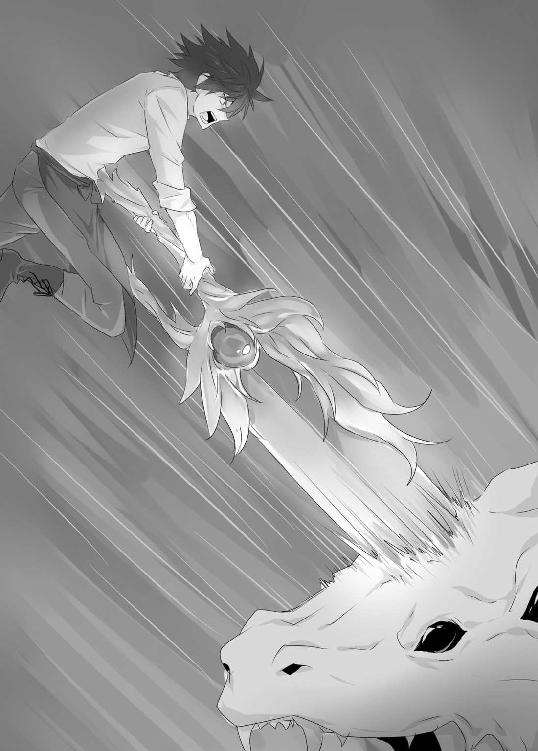
終章 トビラの前で息を吐き......
王立魔法騎士団庁舎を襲った四複眼竜の事件は、現在も調査が続いている。
あの後、四複眼竜を持って帰ろうとするタクトに、騎士団調査隊がドラゴンの引き渡しを要求した。が、彼は子供のようにごねまくった。何が何でも持って帰るというタクトに、騎士団調査隊は肉屋の営業許可書取り消しをチラつかせて、断念してもらうに至った。
しかし後で調査団が調べたところ、四複眼竜の肉の一部が、綺麗に抉られていたらしい。
たぶんタクトがごねているうちに、リュカがちゃっかり持っていったのだろうとシェッセは思ったが、それを確かめる術はなかった。ただ竜伐騎士が不在にもかかわらず、上位二等種ドラゴンを相手に死者が出なかったのは、奇跡的と言えることだった。そういったことから、タクトへの窃盗罪（と言えるのかどうかわからないが）は不問にされた。
グレンの行方に関しては、あのどさくさの中で失踪してしまった為、現在も捜索が続いている。あの時、四複眼竜を討伐することに全集中がそそがれていたことは否めない。
すぐに捜索隊が周辺及び国内を探査したが、結局彼を見つけることは出来なかった。
駐在していた人員のほとんどがやられた状況で、捜索隊を編成するだけでも時間が掛かってしまい、取り逃がしてしまうという結果になってしまったのだ。
竜神信仰の秘密に近づくことに一役買えたと思っていたのに、まさか逃げられてしまうとは。シェッセは自分の注意力の無さにため息が出た。もちろん、注意していたからと言ってグレンを逮捕できていたかはわからない。
そして今回の件で一番の謎は、タクトがシェッセの呪いを解いてしまったことである。
彼のどこに、そんな能力があったのか皆目見当がつかない。
日が明けてから、シェッセがもう一度魔力練成を行おうとしたが、元の魔法の使えない身体に戻っていた。なにをどうやっても、練成には至らず。真偽のほどをタクトから確かめたい欲求に駆られたが、忙しさに機会を逸してしまい、会いに行きづらくなってしまっていた。
――あれは......夢だったのかな......。
そんなことを考えながらも、シェッセは今日から再び王立魔法騎士団予備隊士――つまりは閑職へと逆戻り。以前と変わらず、誰からも声をかけられず、一人雑務に精を出す。
書類関係の入った箱を倉庫に戻した帰り道、廊下に人だかりを発見した。
なにということもない。羨望の眼差しで人々が取り巻く、騎士団きっての天才カティナと、その追っかけたちである。時間はちょうどお昼休憩の頃あいだった。
カティナはシェッセを見つけると、助かったとでも言いたげに顔をパッと明るくして、取り巻きたちから抜け出てくる。
「シェッセ、探したぞ」
「あ、うん」
騎士団内に於いてシェッセとは対極の位置にいるカティナ。
あの日、仲良くなれたと思ったのに、その後は中々話す機会にすら恵まれなかった。それはカティナが怪我の治療と、事後処理に追われていた事が主な理由である。だがそれ以上に、二人の立場の違いも大きく関係していたことは否定できない。
「時間はあるか？ 一緒に昼食にでも行こう」
その誘いに後方の取り巻きたちが色めきだつ。まさかあのカティナが、あのシェッセを昼食に誘った、という事実にみな驚愕したのだろう。
「どうだ？ 忙しいか？」
「ううん、大丈夫だよ、カティナ」
シェッセの物言いに、またも色めきだつ取り巻きたち。カティナ様――ではなくカティナ。自然と変わっている呼称に、みな悔しがったり憤慨したり、涙を浮かべる者までいるのである。そんな取り巻きたちを無視してカティナはシェッセの手をとり歩き出した。
カティナがいったいどんなところで昼食をとるのだろう、とシェッセはあれこれ考えながら後についていくと、お昼時に店を牽いてくる路上の屋台であった。
友達との付き合いをあまり持たない彼女の生活習慣は謎とされていた。だが実はこういった場所に来ていたのだろう。
「わるいな。安いところで」
シェッセは顔をブンブン振って、以前タクトと食べた屋台食を思い出した。
「でも、どうして急に？」
シェッセは注文してすぐに出て来たヌードルに、フォークを立てながらカティナに質問した。しばらく彼女は何を話すか考えるようにフォークの先を咥えていた。
「実は任務を言い渡したいんだ」
「え......はい」
前任務が終わり、閑職へと戻された途端の追加任務である。
「グレンの件について調べている折に知ったことなんだが、ナギは知っているな？」
「うん。アステイリア神話に出てくる竜人だよね」
ドラゴンをこの世に放ち、終焉の竜によって世界を混沌に陥れた竜人ナギ。
「ナギが使っていた武器の数々は魔装器とされ一部は封印されている」
失われた古代文明の負の遺産、これを総じて魔装器と呼ぶ。逆に正の遺産は聖遺物と呼ばれ、それらを所有する国家は厳重に保管することを義務付けられている。
「そのナギが使っていたとされている武器の一つが、『竜槍』と呼ばれているのだ」
先日リュカが練成した魔法陣からタクトが引き抜いた巨大な槍。
タクトは確かにあの武器を『竜槍』と言っていた。
「嘘か真かはわからない。しかし調べる必要はあるだろう」
「あの、それって......」
カティナはシェッセの顔を見ると、何やら訳知り顔の笑みを浮かべた。
「またしばらく、雑用を休んでもらうぞ」
＊＊＊＊
グレンはまだ完全に塞がらない傷口に顔をしかめながら、外から聞こえてくる潮騒に耳を傾ける。少しでも痛みから気を紛らわせようとしたのだ。
会議の場には百を超える人間が集まっていた。それぞれが顔を仮面で隠している。たとえ街の中で会ったとしても、気がつかないように配慮された装束。お互いがこの信仰の秘密を守るため、相手の素性を多く知ってはならない。ただ一人、仮面を用いない者がいる。少年のような面差しでこの会議室の中心に、その人物はゆったりと座っていた。
「すまなかったねグレン。せっかく王立魔法騎士団の地位を得ていたのに、こんなことになってしまって」
「いえ、いずれこうなるであろうことは予測していましたので」
「とはいえ素晴らしい結果さ。予想通り、竜槍は彼が持っていたのだしね」
少年は二枚の写真をぼんやりと眺めた。
一枚はミキハラタクト。そしてもう一枚にはシェッセ・リハエルが写っている。
「あの二人を引き合わせて良かった。なにしろ確証が取れたのだからね」
「はい、『竜の契約者』と、『血焔の聖女』......両者に間違いありません」
年齢差も厭わず、グレンは深々と頭を下げる。少年は写真に向かい嬉しそうに語りかけた。
「これでようやく時代を動かす駒が揃い始めたようだ」
少年の言葉に場はざわめく。
「神話は正しく語り継がれねばならない。しかし時代は見誤りを是としない。ならば新たな神話を構築しなければならない。終焉の竜の復活によってね」
少年は手の中で竜仙華を遊ばせながら薄く笑いを漏らす。
「そう思うだろ、グレン」
「はい、アステイリア様」
日差しが高くまで昇っている。
タクトはぼんやりと窓から差し込む日差しを見つめながら、午後の仕事内容を思い浮かべた。だが中々集中できず、顔をしかめながら、気分を変えようとお茶を入れる。
ひだまりで、リュカが丸くなって食後の睡眠をとっている。かなり熟睡しているのか、物音を立てても起きる気配がない。時折しっぽを揺らしながら何か寝言を言っているが、どんな夢を見ているのかまではわからない。
椅子の背もたれに身体を預けて、お茶を啜る。
ふとタクトの脳裏をシェッセの顔がよぎる。小さく息を吐きながら、額に手を当てた。
『彼』から引き継いだ『過去』に、タクトは固く目を瞑り、それから頭を振る。
――ちがう、彼女の人生だ。過去のものではない。シェッセは、シェッセ・リハエルとして生きて行くべきなんだ。どんな呪いも彼女の夢を塞ぐことは許されない。――それとも彼女の夢もまた因縁に引き寄せられ、運命の上に乗せられているのか......。
誰に問う訳でもなくそんなことを考え、頭の中を過る記憶の群れにタクトは背を向ける。
自分がすべきことは肉屋として生きていくこと。こうして仕事をし、歩合賃金をもらいながら、昨日と同じ今日を生きていく。そう決めたのだ。ここには悪夢のような日々は無い。
――それで充分じゃないか。それ以上なにを望む。
沈思していたタクトの耳に、ドアが静かに開く音が聞こえてきた。
「あらぁ......リュカちゃん寝てますねえ」
クーミェであった。小動物のように丸くなるリュカに目を細めながら、タクトの向かいの椅子に腰をかけると小声で話す。
「タクトさん、元気ないですよ」
「んなこた、ねえよ」
「ふふふ、そうですか？ おかしいですね。クーミェ的、テクニカルアタックがしにくい空気が流れてる時は、だいたいタクトさんの元気が無い時なんですけどねえ」
クーミェとも長い付き合いだ。先代のタクトの師匠から、となるとどれくらいの付き合いだろうか。そう考えるとタクトの胸の内など、クーミェには手に取るようにわかるらしい。
「別にクーミェが気にすることじゃねえよ」
「気にしますよ。ガンガン気にします。そうじゃなきゃ私の変態行為ができないじゃないですか」
「変態であるという認識はあったんだ」
「むむぅ、タクトさん、なかなか見事な誘導尋問ですね」
「なにも誘導してねえし」
ふむふむと顎に手を当てるクーミェ。タクトは話題を変える方向にした。
「......ところでクーミェ。その......冷蔵庫なんだけどさ」
「ダメです」
最後まで言いきる前に、さっさと打ち切られた。
「いや、あれが無いと巨大竜が狩れないじゃねえか。やっぱ新調しないとよ」
「ダメというか......以前の冷蔵庫のローンがまだ残っているのに、次の冷蔵庫を買ったとなると、どこもお金なんて貸してくれませんよ。当たり前です、ええ！」
「てことは、しばらくまた小型竜を狩るしかねえのか......」
がっくり項垂れながら、これからの不透明な先行きに肩を落とす。その様子を見ていたクーミェはため息を吐きながら手帳を取り出した。
「取り急ぎ、パシエニール共栄圏の貴族組合から土群竜の発注がありますが」
「下位四等種だが......食える状態で獲るのが難しいんだよな......」
強さとしては竜伐騎士ではない普通の魔法騎士でも倒せる小さなドラゴンである。
「我儘いってられますか？」
「言ってられません」
「じゃあ、よろしくお願いします」
「お願いされます」
そう言い終えてクーミェは空になった肉箱を回収すると、笑いながら帰っていった。
準備に時間が掛かりそうだが、貴族相手の商売なら実入りは大きそうだ。なにより土群竜は上手に捕まえれば、かなりの美味。食後であることを忘れて、思わず唾を呑んだ。
これからの段取りに思いを馳せていると、急にリュカがハッと目を覚ます。
「どうした？」
「......におい」
「なんの？」
聞き返すと同時にドアをノックする音が聞こえた。こんな時に誰かと目をやると、ゆっくりドアが開き、先ほどまでタクトの頭の中にいた人物が隙間から顔をのぞかせる。
「あ、あのね、いろいろあってね」
半身だけ入ってその場でモジモジとする少女の頭の上で、綺麗に結ばれたリボンが揺れている。
「これは任務であって、その、別にボク個人で会いに来たわけじゃなくて......」
何やら顔を真っ赤にしながら下を向いて中に入ってこようとしない。
「おい、シェッセ」
「え、うん。なに」
ビクリとしながら背筋を伸ばす。入り口で立ったまま呆けたようにこちらを見ている。
そんな彼女の顔を見てタクトは思わず笑みを零した。
「仕事だ、用意しろ」
タクトの表情に目を向けていた彼女もつられたように笑う。
「うん！」
――例えば運命と呪い、そして因縁に絡め取られた彼女が、一人の人間として幸せに生きられるのなら.........。
タクトの脳裏にそんな言葉がよぎったが、今は笑っている彼女の姿で充分な気もした。
《おわり》
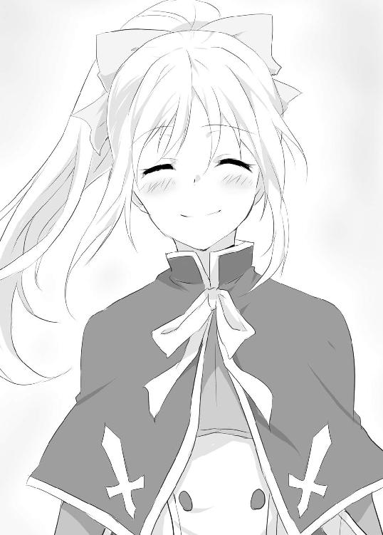
あとがき
このたびは拙著をお手に取っていただき誠にありがとうございます！
内堀優一でございます。
初めまして......またはお久しぶりでございます。前作より、だいぶ時間を空けてしまいましたが、新作のお披露目でございます。
今回のお話は、異世界の王都を襲う魔竜を捕って食べようぜ！ という、まこと食に貪欲なファンタジーでございます。
戦うお肉屋さんと、騎士団の少女が、ボーイミーツガールだったり、お肉食べたり、悪の組織っぽいのが出てきたり、それはさておきお肉を捕ったりする物語です。
もともとこのお話は前担当氏との、こんな打ち合わせから始まった企画でございます。
「この前、同僚と焼き肉を食べたんですよ」
「いいですね、焼き肉！ 僕も食べたいです、焼き肉！」
「.........そうですか」
「はい！」
「で、話を戻しますね......」
「......え、あ、はい」
「その時思ったんですが、ドラゴンって食べたら、うまいんですかね？」
「......はあ」
というような完璧に息の合ったやり取りから、この物語がスタートいたしました。
そんなことがありまして当初、作品の題名が決まるまで、この企画は「焼き肉企画（仮）」と呼称されておりました。
なので企画書を書いたり、原稿を書いたりした日々の私の手帳には、連日「焼き肉」の文字がびっしり。その手帳を見ました友達から、
「......おまえ、えらい豪勢な生活してるじゃねえか」
といらん疑惑をかけられるほどに、連日連夜、焼き肉でございました。
いえいえ、もちろん焼き肉を食べていたわけではございませんよ。
毎日、一汁三菜を口に運びながら、肉への溢れんばかりの渇望を文字に起こし、足りぬタンパク質を大豆などから摂取し、せっせと書き認めたのでございます。
そんな怨念こもる......ゴホン、熱い思いのこもる作品に仕上がっていたのなら、なによりでございます。
なにしろ今作に至るまで、前作から一年もの間を空けてしまいましたので、ここからはモリモリ書いて、みなさまにお届けできればと考えております。
悠長に構えていたわけではないのですが、うかうかしているうちに時間はとてつもないスピードで駆け抜けていきやがりますので、油断はできません。
二十代のうちにもっと本を書くぞ、と意気込んでいたのに、気が付いたらもう三十代でございます。早すぎんよ時間......。
むかし先輩から、
「二十代は早いよ」
と聞かされていましたが本当に早すぎて、凹んでおりました。
その話を先日、親にしましたら、
「三十代はもっと早いよ」
と背筋も凍るような怪談を聞かされてしまい、眠れぬ夜を過ごすという、思い出すのも恐ろしいことがありました。
そういったこともありまして、今年は時間を的確に使いながら、日夜より面白いものをと頭をひねりまわし、みなさまにお届けできるよう精進したいと思っております。
どうかおつきあい戴ければ幸いでございます。
さてここからは謝辞を。
先ほど前担当氏と申しましたが、実は途中で担当氏が変わったりしまして。前担当氏、中溝さんから、このたび新担当氏、中川さんに変わりました。
企画から第一稿に至るまでお世話になりました前担当の中溝さん。今までありがとうございました。
そして新担当の中川さん。私の意味不明なアイデアや発言にも、根気よくおつきあいいただき誠にありがとうございます。これからもどうぞよろしくお願いいたします。
さらに今回、素敵なイラストを描いて下さった真琉樹さん。イラストが上がってくるたびに狂喜乱舞でございました。本当にありがとうございます。
そして右も左もわからぬ自分の相談に乗って下さったり、雑談をして下さる上栖綴人先生、またご飯にでもまいりましょう。
編集部のみなさま、出版流通にかかわる全てのみなさまにも厚く御礼を申し上げます。
そして何より、数あるライトノベルの中から、この本を手に取って下さったみなさまに、最大の感謝を。
本当にありがとうございます！
どうかみなさまにとって、この物語が日々の娯楽の一端となりえたのなら、これほどの幸いはございません。
だいぶ大風呂敷を広げた本作ではございますが、とりあえず最初のお話はこれにておしまいと相成ります。
どうかまた、この物語でお会いできれば幸いでございます。
それではまた！
二○一二年 一月吉日 内堀優一
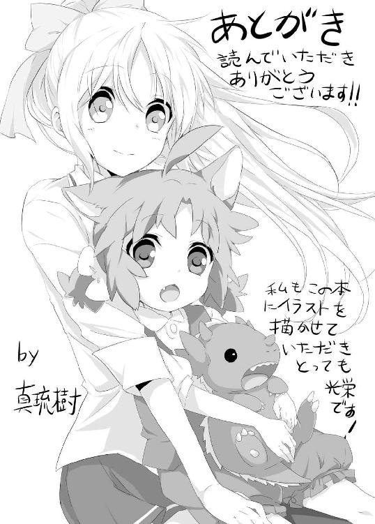
◆ご意見、ご感想をお寄せください......ファンレターのあて先◆
〒１５１―００５３
東京都渋谷区代々木２―15―８
（株）ホビージャパン ＨＪ文庫編集部
内堀優一先生／真琉樹先生
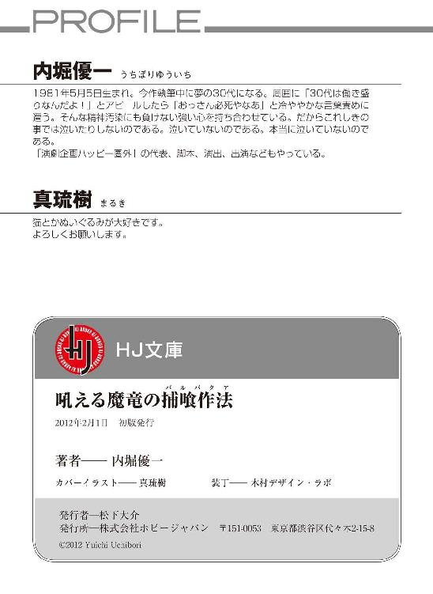